<!doctype html>
<html lang="zh-CN">
<head>
  <meta charset="utf-8">
  <meta name="viewport" content="width=device-width, initial-scale=1">
  <title>天文论文日报 2026-07-16</title>
  <style>
    :root {
      color-scheme: light;
      --bg: #eef3fb;
      --panel: #ffffff;
      --panel-soft: #f8fbff;
      --text: #172033;
      --muted: #65758b;
      --line: #dce6f2;
      --blue: #2563eb;
      --blue-dark: #1e40af;
      --cyan: #0891b2;
      --amber: #d97706;
      --shadow: 0 18px 50px rgba(30, 64, 175, 0.12);
    }
    * { box-sizing: border-box; }
    html { scroll-behavior: smooth; }
    body {
      margin: 0;
      background:
        radial-gradient(circle at top left, rgba(37, 99, 235, 0.16), transparent 32rem),
        radial-gradient(circle at top right, rgba(8, 145, 178, 0.12), transparent 28rem),
        var(--bg);
      color: var(--text);
      font-family: Inter, ui-sans-serif, system-ui, -apple-system, BlinkMacSystemFont, "Segoe UI", "Noto Sans CJK SC", "Microsoft YaHei", sans-serif;
      line-height: 1.75;
    }
    a { color: var(--blue); text-decoration-thickness: 0.08em; text-underline-offset: 0.18em; word-break: break-word; }
    a:hover { color: var(--blue-dark); }
    .page { max-width: 1080px; margin: 0 auto; padding: 32px 18px 56px; }
    .hero {
      position: relative;
      overflow: hidden;
      padding: 34px;
      border-radius: 28px;
      background: linear-gradient(135deg, #12213f 0%, #1d4ed8 52%, #0891b2 100%);
      color: #fff;
      box-shadow: var(--shadow);
    }
    .hero::after {
      content: "";
      position: absolute;
      inset: auto -80px -150px auto;
      width: 320px;
      height: 320px;
      border-radius: 999px;
      background: rgba(255, 255, 255, 0.14);
    }
    .report-nav { display: flex; justify-content: space-between; gap: 1rem; margin: 18px 0 0; }
    .report-nav a,
    .report-nav span { flex: 1; padding: 0.85rem 1rem; border: 1px solid var(--line); border-radius: 16px; background: rgba(255, 255, 255, 0.86); box-shadow: 0 10px 24px rgba(30, 64, 175, 0.08); text-decoration: none; font-weight: 700; }
    .report-nav .home { text-align: center; }
    .report-nav .next { text-align: right; }
    .report-nav span { color: var(--muted); background: rgba(248, 251, 255, 0.78); }
    .eyebrow { margin: 0 0 10px; color: rgba(255, 255, 255, 0.78); font-size: 0.95rem; letter-spacing: 0.08em; text-transform: uppercase; }
    h1 { position: relative; margin: 0; max-width: 760px; font-size: clamp(2rem, 5vw, 3.2rem); line-height: 1.15; }
    .subtitle { position: relative; max-width: 760px; margin: 16px 0 0; color: rgba(255, 255, 255, 0.86); font-size: 1.05rem; }
    main {
      margin-top: 22px;
      padding: 28px;
      border: 1px solid rgba(220, 230, 242, 0.9);
      border-radius: 24px;
      background: rgba(255, 255, 255, 0.92);
      box-shadow: var(--shadow);
      backdrop-filter: blur(10px);
    }
    main > p:first-child,
    main > p:nth-child(2) { color: var(--muted); }
    h2 {
      margin: 2.4rem 0 1rem;
      padding: 0.8rem 1rem;
      border: 1px solid var(--line);
      border-left: 6px solid var(--blue);
      border-radius: 16px;
      background: linear-gradient(90deg, #eff6ff, #ffffff);
      font-size: 1.45rem;
      line-height: 1.35;
    }
    h2:first-child { margin-top: 0; }
    h3 {
      margin: 2rem 0 1rem;
      padding: 1.15rem 1.25rem;
      border: 1px solid #bfdbfe;
      border-radius: 18px;
      background: linear-gradient(135deg, #f8fbff, #eef6ff);
      box-shadow: 0 10px 24px rgba(37, 99, 235, 0.08);
      font-size: 1.18rem;
      line-height: 1.45;
    }
    h4 { margin: 1.25rem 0 0.5rem; color: #0f3b7a; font-size: 1.02rem; }
    ul, ol { padding-left: 1.35rem; }
    li { margin: 0.3rem 0; }
    main > ul {
      padding: 1rem 1.2rem 1rem 2.2rem;
      border: 1px solid var(--line);
      border-radius: 14px;
      background: var(--panel-soft);
    }
    strong { color: #0f2f5f; }
    blockquote {
      margin: 1rem 0;
      padding: 0.9rem 1rem;
      border: 1px solid #fed7aa;
      border-left: 5px solid #f97316;
      border-radius: 12px;
      background: #fff7ed;
      color: #7c2d12;
    }
    code { background: #eaf1fb; padding: 0.12rem 0.3rem; border-radius: 6px; }
    table { width: 100%; border-collapse: collapse; margin: 1rem 0; overflow: hidden; border-radius: 12px; }
    th, td { padding: 0.75rem; border: 1px solid var(--line); vertical-align: top; }
    th { background: #eff6ff; }
    mjx-container { overflow-x: auto; overflow-y: hidden; max-width: 100%; padding: 0.25rem 0; }
    .math-display { margin: 1rem 0; overflow-x: auto; padding: 0.75rem 1rem; border: 1px solid #dbeafe; border-radius: 14px; background: #f8fbff; }
    main img { max-width: 100%; height: auto; display: block; margin: 1rem auto; border: 1px solid var(--line); border-radius: 14px; box-shadow: 0 10px 24px rgba(15, 47, 95, 0.12); }
    details.paper-detail {
      margin: 1.25rem 0 1.9rem;
      border: 1px solid #b9d7ff;
      border-radius: 18px;
      background: linear-gradient(180deg, #fbfdff, #f3f8ff);
      box-shadow: 0 10px 24px rgba(37, 99, 235, 0.08);
      overflow: hidden;
    }
    details.paper-detail[open] { border-color: #60a5fa; }
    details.paper-detail > summary {
      cursor: pointer;
      list-style: none;
      padding: 1rem 1.15rem;
      background: linear-gradient(90deg, #dbeafe, #ecfeff);
      color: #173b73;
      font-weight: 800;
    }
    details.paper-detail > summary::-webkit-details-marker { display: none; }
    details.paper-detail summary::before { content: "展开"; display: inline-block; margin-right: 0.65rem; padding: 0.12rem 0.5rem; border-radius: 999px; background: #2563eb; color: #fff; font-size: 0.78rem; }
    details.paper-detail[open] summary::before { content: "收起"; background: #0891b2; }
    details.paper-detail > *:not(summary) { margin-left: 1.15rem; margin-right: 1.15rem; }
    details.paper-detail > :last-child { margin-bottom: 1.2rem; }
    details.paper-detail h4 {
      margin-top: 1.15rem;
      padding-top: 1rem;
      border-top: 1px dashed #bfdbfe;
    }
    details.paper-subdetail {
      margin: 1rem 1.15rem 1.35rem;
      border: 1px solid #d8e8ff;
      border-radius: 14px;
      background: rgba(255, 255, 255, 0.72);
      overflow: hidden;
    }
    details.paper-subdetail[open] { border-color: #93c5fd; }
    details.paper-subdetail > summary {
      cursor: pointer;
      list-style: none;
      padding: 0.75rem 0.9rem;
      background: #f1f7ff;
      color: #234d83;
      font-weight: 750;
    }
    details.paper-subdetail > summary::-webkit-details-marker { display: none; }
    details.paper-detail details.paper-subdetail > summary::before { content: "展开"; display: inline-block; margin-right: 0.55rem; padding: 0.08rem 0.42rem; border-radius: 999px; background: #64748b; color: #fff; font-size: 0.74rem; }
    details.paper-detail details.paper-subdetail[open] > summary::before { content: "收起"; background: #2563eb; }
    details.paper-subdetail > *:not(summary) { margin-left: 0.95rem; margin-right: 0.95rem; }
    details.paper-subdetail > :last-child { margin-bottom: 1rem; }
    @media (max-width: 720px) {
      .page { padding: 18px 10px 36px; }
      .hero { padding: 24px 20px; border-radius: 22px; }
      .report-nav { flex-direction: column; }
      .report-nav .home { text-align: left; }
      .report-nav .next { text-align: left; }
      main { padding: 18px 14px; border-radius: 20px; }
      h2 { font-size: 1.25rem; }
      h3 { font-size: 1.05rem; }
    }
  </style>
  <script>
    window.MathJax = {
      tex: { inlineMath: [['$', '$'], ['\\(', '\\)']], displayMath: [['$$', '$$'], ['\\[', '\\]']] },
      svg: { fontCache: 'global' }
    };
  </script>
  <script defer src="https://cdn.jsdelivr.net/npm/mathjax@3/es5/tex-svg.js"></script>
</head>
<body>
  <div class="page">
    <header class="hero">
      <p class="eyebrow">Astro Daily</p>
      <h1>天文论文日报 2026-07-16</h1>
      <p class="subtitle">面向天文与物理专业读者的每日论文筛选、中文解读与延伸阅读。</p>
    </header>
    <!-- REPORT_NAV_START -->
    <nav class="report-nav" aria-label="日报前后导航" data-report-date="2026-07-16">
      <a class="previous" href="2026-07-15.html">← 上一期：2026-07-15</a>
      <a class="home" href="../index.html">⌂ 返回主页</a>
      <span class="next">没有更新的报告 →</span>
    </nav>
    <!-- REPORT_NAV_END -->
    <main>
      <p>生成时间：2026-07-16T11:23:17+08:00<br />
今日保留论文数：7<br />
内容构成：今日新文 7 篇；补充推荐 0 篇；经典旧文精读 0 篇</p>
<h2 id="_1">高能天体物理重点</h2>
<h3 id="1-the-origin-of-multi-tev-gamma-rays-in-lhaaso-j03415258-via-cosmic-ray-illumination-of-molecular-clouds">1. The Origin of Multi-TeV Gamma-rays in LHAASO J0341+5258 via Cosmic Ray Illumination of Molecular Clouds</h3>
<ul>
<li>来源：arXiv / astro-ph.HE</li>
<li>链接：https://arxiv.org/abs/2607.13991v1</li>
<li>作者：Abhijit Roy, Alan Sunny, Martina Cardillo, Jagdish C. Joshi, Ritabrata Sarkar</li>
<li>评分：novelty 7/10，importance 8/10，relevance 10/10，final 9.40/10</li>
<li>推荐理由：Directly relevant LHAASO multi-TeV/UHE gamma-ray source paper, modeling a hadronic cosmic-ray illumination scenario for an unidentified source with GeV-TeV spectral interpretation and SNR-cloud physics.</li>
</ul>
<p><strong>中文题目</strong>：The Origin of Multi-TeV Gamma-rays in LHAASO J0341+5258 via Cosmic Ray Illumination of Molecular Clouds</p>
<p><strong>做了什么</strong>：本文研究未明确关联已知天体的 LHAASO J0341+5258 的多 TeV/超高能伽马射线起源。作者把 LHAASO 与 Fermi-LAT 的 GeV—TeV 谱能量分布、CO 示踪的分子云环境以及宇宙线传播模型结合起来，检验逃逸强子宇宙线照亮分子云的解释。</p>
<p>论文采用两套互补框架：一是用 GAMERA 实现的源无关、时间依赖 hadronic illumination 模型；二是解析的过去 SNR—分子云相互作用模型。前者说明在合理传播条件下 π0 衰变可拟合 LHAASO UHE 数据；后者进一步给出一种时空自洽图像，即 GeV 发射可来自 SNR 本体，而 TeV 发射可由逃逸质子在附近分子云中产生。</p>
<p>核心结论是：尽管加速源尚未被观测确认为具体 SNR，LHAASO J0341+5258 的 TeV 发射可以在物理上合理地解释为宇宙线照明分子云的强子辐射。关键证据包括 CO 云与伽马射线区域的空间环境、SED 拟合、传播/冷却时间尺度比较、参数可信区间以及中微子通量预言。</p>
<p><strong>为什么重要</strong>：这篇论文的重要性在于它直接触及银河宇宙线起源中最难的问题之一：如何证明 TeV—PeV 能段的伽马射线来自强子而非电子。通过将 LHAASO J0341+5258 与分子云靶物质和逃逸宇宙线传播联系起来，作者把一个未关联 TeV 源转化为可量化检验的 SNR—MC 物理问题。</p>
<p>它还重要在于处理了 GeV 和 TeV 发射可能不同源区的问题。若 GeV 来自 SNR 本体、TeV 来自逃逸质子照亮云，则传统单区模型的失败并不必然排除 SNR 起源，而是提示需要时空演化模型。这种思路对解释 LHAASO 暗源群体具有推广意义。</p>
<p>最后，论文的诊断链条较完整：空间上看 CO 云，谱上看 π0 衰变 SED，时间上看扩散/冷却尺度，统计上看置信带和参数角图，多信使上看中微子预言。即便最终源身份仍不确定，这套分析框架本身也为后续 LHAASO 未关联源研究提供了有价值模板。</p>
<p><strong>理论 / 观测 / 仪器方法价值</strong>：理论价值在于把 LHAASO 未关联源放入逃逸宇宙线照明框架中，检验了过去 SNR 即使不再清楚可见，仍可通过附近分子云的 TeV 辐射留下高能质子证据的可能性。</p>
<p>观测价值在于把 CO 分子云、Fermi-LAT GeV 数据和 LHAASO UHE 数据联合解释，为该源的后续射电、X 射线、GeV 形态分析和中微子搜索提供了明确目标：确认云距、寻找 SNR/PWN 对应体、检查 GeV—TeV 形态是否分区。</p>
<p>方法价值在于同时使用数值 GAMERA 模型和解析 SNR—MC 模型，并通过时间尺度图、SED 置信带和 corner plot 暴露参数可行域与退化。这比单纯画一条最佳拟合 SED 更适合作为研究生层面的模型诊断案例。</p>
<p><strong>为什么应该关注</strong>：值得关注的原因是 LHAASO 正在不断发现没有清楚低能对应体的超高能伽马射线源，而这些源可能是银河 PeVatron 或逃逸宇宙线的关键线索。LHAASO J0341+5258 若能由分子云照明解释，就说明“看不到加速器本体”并不等于不存在强子加速源。</p>
<p>对高能天体物理读者来说，这篇论文提供了一个完整案例：如何从 CO 环境图出发，经由扩散传播、pp 辐射、SED 拟合和参数后验，判断一个 TeV 暗源的强子解释是否自洽。它也提醒读者，SED 拟合必须与空间环境和时间尺度共同检验。</p>
<p>对未来观测来说，论文给出了可检验预言：更好的 LHAASO/CTA 形态和能谱、Fermi-LAT 背景重分析、分子云距离测量、射电/X 射线遗迹搜索以及 IceCube/KM3NeT 中微子限制，都可以显著收紧或推翻该照明情景。</p>
<details class="paper-detail">
<summary>展开详细解读：文章讲解、背景、理论、重点章节、图表与相关工作</summary>
<h4 id="_2">文章详细讲解</h4>
<p>本文要回答的科学问题可以拆成三层。第一，LHAASO J0341+5258 的多 TeV 到 UHE 伽马射线是否可以由强子 pp 相互作用解释，而不必要求一个在当前目录中清楚可见的加速源？第二，CO 观测到的分子云是否能提供足够靶物质，使逃逸宇宙线在云中产生观测到的通量？第三，如果引入一个过去 SNR，GeV 辐射、TeV 辐射、传播时间和能量预算能否在同一时空演化框架下相互兼容。</p>
<p>方法上，作者先采用源无关的 hadronic illumination 模型，并用 GAMERA 计算传播后的宇宙线与分子气体相互作用产生的 SED。这个框架的优点是减少对具体未发现源的依赖，直接问“给定附近分子云和传播条件，能否拟合 LHAASO UHE 数据”。Fig. 3 是这一部分的关键证据，厚实线代表 π0 衰变伽马射线，并加入 2.09 的核增强因子以考虑重核贡献。读者应检查该曲线主要被哪些 LHAASO 点约束、低能端是否与 Fermi 数据冲突、以及是否存在未展示的自由归一化或云质量不确定性。</p>
<p>第二套模型引入假想过去 SNR。摘要给出的结论是：GeV 发射可由 SNR 本体产生，而 TeV 发射可由已经逃逸的高能粒子照亮邻近分子云产生。这个分区解释很重要，因为不同能量宇宙线的逃逸时间不同：高能粒子更早逃逸并能扩散到更远的云，较低能粒子仍可能困在 SNR 或在源区附近辐射。Fig. 7 给出多波段建模结果，虚线为强子 π0 分量，点线为轻子分量，蓝色包络给出 1σ/2σ 模型不确定性，是判断该“GeV 源区 + TeV 云区”图像是否成立的主图。</p>
<p>关键结果的可信度依赖于传播时间尺度。Fig. 6 比较质子冷却时间与特征传播时间，后者包括扩散时间和穿越 GMC 的时间，并分别讨论平均银河扩散和显著受抑制扩散。若传播时间太长，高能粒子无法在假设 SNR 年龄内到达云；若 pp 冷却太快或云内停留时间太短，则辐射效率与谱形都会改变。因此 Fig. 6 不是附属图，而是整套解释的物理门槛检查。</p>
<p>局限性也需要明确。论文摘要承认加速源性质仍不确定；因此，SNR 的年龄、距离、爆炸能量、云距、三维几何和扩散系数都不应被理解为已经测定的事实，而应理解为在观测数据允许范围内的一组可行参数。下一步应优先核查：是否有射电壳层、X 射线热等离子体或脉冲星/PWN 候选；CO 速度分量对应的运动学距离是否唯一；Fermi-LAT 源扩展和背景模型是否稳定；LHAASO 角分辨率下的源形态是否与五个云中的某几个更相关。</p>
<h4 id="_3">关键结果是怎么做出来的</h4>
<p>本文的主结果首先建立在数据选择与环境识别上：LHAASO J0341+5258 是一个尚无明确已知天体对应体的 UHE 伽马射线源，作者把 LHAASO TeV/UHE 数据、Fermi-LAT GeV 数据以及 CO 示踪的分子云信息放在同一框架内解释。Fig. 1 显示在该视场内有五个分子云候选，并与 LHAASO/Fermi 区域存在投影上的相邻或重合。这里的“样本”不是大量源统计，而是一个单源、多云、多能段的案例研究；因此证据强度主要来自谱形、空间环境和传播时间的一致性，而非大样本显著性。</p>
<p>第一个模型结果是源无关的强子照明方案。作者用 GAMERA 计算宇宙线传播后与分子气体相互作用产生的 π0 衰变伽马射线，Fig. 3 展示厚实线对 UHE SED 的拟合，并采用核增强因子 2.09。该结果的意义是：即使不指定当前可见的加速源，只要存在合理的高能宇宙线群和分子云靶物质，LHAASO 的多 TeV 发射可以被 hadronic illumination 一阶解释。读者应在原文中核查该拟合的自由参数、最小 $\chi^2$ 或等价统计量、数据点数量、误差处理方式，以及是否纳入 Fermi-LAT 点或只针对 LHAASO 能段优化。</p>
<p>第二个主结果是解析 SNR—分子云情景能够把 GeV 和 TeV 分量分开解释。摘要明确说 GeV 发射可来自 SNR 本身，而 LHAASO TeV 发射可由逃逸粒子照亮附近分子云产生。Fig. 7 是这个结论的直接图示：强子虚线、轻子点线、总模型中位线和 1σ/2σ 置信包络共同显示模型对多波段数据的覆盖范围。关键检验不是某条线是否穿过所有点，而是 GeV 段、TeV 段和多波段上限是否由同一组物理参数同时满足。</p>
<p>第三个结果是传播条件在物理上可行。Fig. 6 比较了质子冷却时间与传播时间，并区分标准银河扩散和受抑制扩散。对于照明模型，源—云距离和扩散系数决定了母质子到达云的能量选择效应；若模型要求的传播时间与假想 SNR 年龄相容，就支持“过去 SNR 已不明显但其逃逸宇宙线仍在照亮云”的解释。读者应特别检查原文给出的源—云分离、传播时间尺度、云穿越时间和 GMC 内扩散处理，因为这些量的系统误差可能比统计误差更重要。</p>
<p>统计和模型比较方面，本文至少提供了最小 $\chi^2$ 相关拟合和参数可信区间信息，Fig. 10 的角图显示参数相关性和 68% credible interval。需要重点核查的不是单个最佳拟合值，而是后验是否宽、是否多峰、是否触及先验边界，以及不同参数组合是否都能给出近似相同的 SED。若存在强退化，结论应表述为“illumination scenario 在合理参数空间内可解释数据”，而不是“唯一确定了 SNR 年龄、距离或扩散系数”。</p>
<p>系统误差和稳健性检验包括：LHAASO 通量和谱指数系统误差、Fermi-LAT 背景模型和源扩展、CO 到 H2 的转换因子、云距离和质量、核增强因子、pp 截面参数化、扩散抑制因子的环境依赖、以及是否存在未建模的 PWN 或其他源贡献。Fig. 8 的中微子预言提供了一个外部检验通道，但其排除能力取决于模型通量与 IceCube 10 年灵敏度的相对位置。总体上，论文的强结论是“强子照明解释自洽且可行”，弱结论才是“真实加速源已被确定”。</p>
<details class="paper-subdetail">
<summary>展开背景、理论、公式、模型、章节和图表导读</summary>
<h4 id="_4">背景知识</h4>
<p>LHAASO J0341+5258 属于近年由 LHAASO 在甚高能/超高能伽马射线巡天中揭示的“暗源”问题：在 TeV 到百 TeV 能段有显著发射，但在传统的射电、X 射线或 GeV 目录中未必能找到一一对应的脉冲星风云、超新星遗迹或活动星系核。本文的研究对象正是这样一个尚未明确关联到已知天体的 LHAASO 源。它的重要性不只在于“又发现了一个 TeV 源”，而在于如果该源由强子过程主导，就可能指向局域 PeVatron 候选体或至少指向能够把质子加速到多百 TeV 的过去爆发现象。</p>
<p>这类源的一个核心背景是银河宇宙线起源问题。传统观点认为超新星遗迹通过弥散激波加速提供银河宇宙线主要能量预算，但直接证明 SNR 加速的是高能质子而非电子一直很困难。π0 衰变伽马射线谱形、分子云靶物质分布、扩散传播时间尺度和中微子预言，都是将“伽马射线源”转化为“强子宇宙线加速源”的关键证据链。本文把 LHAASO J0341+5258 放在 SNR—分子云相互作用框架下讨论，重点不是寻找可见壳层，而是检验一个过去 SNR 是否可以在空间和时间上留下逃逸宇宙线照亮分子云的痕迹。</p>
<p>研究动机来自一个常见困境：GeV 发射和 TeV 发射的空间位置、谱斜率、辐射机制可能并不完全相同。若把 Fermi-LAT GeV 数据和 LHAASO TeV 数据强行归结为同一个单区辐射体，常会遇到能谱连接、电子冷却、靶气体密度或能量预算的张力。本文摘要显示作者采用两套互补模型：一是源无关的、时间依赖的强子照明模型，用 GAMERA 处理宇宙线传播并与分子气体相互作用；二是包含假想过去 SNR 的解析 SNR—分子云模型，用以把 GeV 辐射归因于 SNR 本体、把 TeV 辐射归因于逃逸质子照亮附近分子云。</p>
<p>阅读时需要避免几个误区。第一，空间重合不等于物理关联；CO 云、Fermi 区域和 LHAASO 区域重叠只是必要条件，必须进一步检查距离、速度分量、气体质量和扩散时间。第二，能够拟合 SED 不等于模型唯一；强子 π0 衰变、逆康普顿、bremsstrahlung 或多区混合模型都可能在有限能段内近似重现数据。第三，假想 SNR 的存在并不是观测确认，本文更准确的定位是“证明一类 SNR—MC 照明情景在物理参数上可行”。第四，TeV 数据点的误差、源扩展、背景估计和不同仪器交叉定标会直接影响模型优劣，不能只看总曲线是否穿过数据点。</p>
<h4 id="_5">基础理论 / 方法脉络</h4>
<p>最基础的物理图像是：高能质子从加速源逃逸后在星际介质中扩散，遇到高密度分子云时与云中质子发生 pp 碰撞，产生 π0、π± 等介子；π0 很快衰变为两束伽马射线，π± 衰变链则产生电子、正电子和中微子。因此，一个本身已经变暗或难以辨认的过去 SNR，仍可能通过“逃逸宇宙线 + 分子云靶物质”在 TeV 能段留下亮的伽马射线信号。本文所谓 cosmic ray illumination 正是这个图像。</p>
<p>该图像的关键量包括宇宙线注入谱、扩散系数、源—云距离、传播时间、分子云质量/密度以及源距地距离。注入谱通常写成带指数截断的幂律，扩散系数通常写成能量依赖形式 D(E)=χD0(E/E0)^δ，其中 χ 表示相对平均银河扩散的抑制因子。Fig. 6 的主题正是比较标准扩散 χ=1 与受抑制扩散 χ=10^{-3} 时的传播和冷却时间；这一步决定了多 TeV 质子是否能在 SNR 年龄内到达云并仍保持足够高能。</p>
<p>观测量上，论文需要同时面对 GeV—TeV 的谱能量分布 SED、CO 示踪的分子云空间分布以及可能的多波段上限/测量。Fig. 1 给出 $^{12}$\(CO(J=1-0)\) 在特定 LSR 速度范围积分后的强度图，并叠加 LHAASO 与 Fermi-LAT 区域和五个分子云。读者应把这张图视作“靶场地图”：它告诉我们哪里有可供 pp 相互作用的气体，但还不能单独说明气体与伽马射线源在三维空间上同距。</p>
<p>模型层面，GAMERA 提供数值框架来计算粒子演化和辐射输出；解析 SNR—MC 模型则更便于扫描源—云距离、年龄、扩散抑制和能量预算等参数。摘要中提到源无关模型给出 UHE 数据的一阶近似，而解析模型可把 GeV 分量与 SNR 本体联系起来，把 TeV 分量与逃逸宇宙线照明联系起来。两者的角色不同：前者检验“分子云照明是否能解释 LHAASO 谱形”，后者检验“一个过去 SNR 是否能在时空演化上自洽地解释 GeV 到 TeV 全谱”。</p>
<p>统计上，这类论文的核心不只是最小 $\chi^2$。由于样本点来自不同仪器、能段跨度大、系统误差可能非高斯，读者应关注作者如何处理误差条、上限、置信带和参数相关性。Fig. 7 中的 1σ/2σ 包络和 Fig. 10 的 corner plot 是重要诊断：前者说明模型谱线在数据空间中的不确定范围，后者说明物理参数之间是否存在强退化，例如扩散抑制、SNR 年龄、注入能量和源—云距离之间的互补关系。</p>
<h4 id="_6">公式与推导</h4>
<p>可从逃逸宇宙线在星际介质中的输运方程开始。对质子分布 $N_p(E,\mathbf r,t)$，常用扩散—损失方程为</p>
<div class="math-display">\[\frac{\partial N_p}{\partial t}=\
abla\cdot[D(E)\
abla N_p]+\frac{\partial}{\partial E}\left[b(E)N_p\
ight]+Q(E,\mathbf r,t)-\frac{N_p}{\tau_{pp}} .\]</div>
<p>这里 $D(E)$ 是扩散系数，$b(E)=-dE/dt$ 是连续能量损失率，$Q$ 是源注入项，$\tau_{pp}$ 是 pp 非弹性碰撞损失时间。对多 TeV 质子，在稀薄 ISM 中连续冷却通常较慢，但在分子云中 $\tau_{pp}$ 与气体密度相关，不能忽略。</p>
<p>扩散系数通常参数化为</p>
<div class="math-display">\[\(D(E)=\chi\) D_0\left(\frac{E}{E_0}\
ight)^\delta ,\]</div>
<p>其中 $D_0$ 和 $\delta$ 描述平均银河扩散，$\chi<1$ 表示源区或分子云附近扩散受抑制。本文 Fig. 6 明确比较 $\chi=1$ 与 $\chi=10^{-3}$，因此读者应把 $\chi$ 看成决定宇宙线能否及时到达云的核心参数，而不是普通归一化常数。</p>
<p>若把过去 SNR 近似为在 $t=0$、$\mathbf r=0$ 瞬时注入，且忽略能量损失，扩散方程的格林函数解为</p>
<div class="math-display">\[N_p(E,r,t)=\frac{Q(E)}{[4\pi D(E)t]^{3/2}}\(\exp\left\)[-\frac{r^2}{4D(E)t}\
ight] .\]</div>
<p>这个式子给出能量依赖的空间过滤：高能粒子因 $D(E)$ 较大更容易到达远处云，低能粒子则在相同时间内扩散半径较小。这正是“GeV 可能仍与 SNR 本体相关、TeV 可来自远处云”的理论基础之一。</p>
<p>注入谱通常写成带截断幂律：</p>
<div class="math-display">\[Q(E)=Q_0\left(\frac{E}{E_0}\
ight)^{-s}\exp\left(-\frac{E}{E_{\rm cut}}\
ight),\]</div>
<p>其中 $s$ 是加速谱指数，$E_{\rm cut}$ 是最大能量或逃逸后有效截断能。归一化由总宇宙线能量约束：</p>
<div class="math-display">\[W_p=\int_{E_{\min}}^{E_{\max}} E Q(E)\\,dE .\]</div>
<p>如果最佳拟合要求 $W_p$ 超过典型 SNR 爆炸能 $10^{51}\\,\mathrm{erg}$ 的约 10% 太多，就需要警惕模型能量预算不合理。<br />
\(\npp\) 相互作用的特征时间可估算为</p>
<div class="math-display">\[t_{pp}\simeq \frac{1}{n_{\rm H}\\,\kappa_{pp}\\,\sigma_{pp}(E)\\,c},\]</div>
<p>其中 $n_{\rm H}$ 是靶气体密度，$\sigma_{pp}$ 是非弹性 pp 截面，$\kappa_{pp}$ 是非弹性能量损失比例。分子云越密，辐射效率越高，但同时也要求云质量、体积和距离估计可靠。</p>
<p>由质子分布到伽马射线发射率，可写成</p>
<div class="math-display">\[q_\gamma(E_\gamma)=n_{\rm H}c\int_{E_{p,\
m thr}}^\infty N_p(E_p)\\,\frac{d\sigma_{pp\
ightarrow\gamma}(E_p,E_\gamma)}{dE_\gamma}\\,dE_p .\]</div>
<p>实际计算通常使用数值截面参数化或 GAMERA 内置辐射模块。本文 Fig. 3 与 Fig. 7 中的强子曲线本质上就是这个积分在给定传播后质子谱和云气体条件下的结果。</p>
<p>观测到的能量通量与源光度之间满足</p>
<div class="math-display">\[F_\gamma(E_\gamma)=\frac{1}{4\pi d^2}\int_V q_\gamma(E_\gamma,\mathbf r)\\,dV ,\]</div>
<p>其中 $d$ 是源距地距离，积分覆盖产生辐射的云体积。该式说明距离和云质量会与宇宙线能量预算强烈退化：更远的源或更小的云质量需要更高的 $W_p$ 或更高的宇宙线密度。</p>
<p>传播可行性常用扩散时间尺度检验：</p>
<div class="math-display">\[t_{\rm diff}(E)\sim \frac{R^2}{6D(E)},\qquad t_{\rm prop}\sim t_{\rm diff}+t_{\rm cross}.\]</div>
<p>这里 $R$ 可代表源—云距离或云内特征尺度，$t_{\rm cross}$ 是粒子穿越 GMC 的附加时间。若 $t_{\rm prop}$ 大于假设 SNR 年龄，照明模型在该能量上不自洽；若 $t_{\rm prop}$ 明显小于年龄，则还需考虑粒子是否已经扩散稀释导致通量不足。</p>
<p>拟合层面，若采用高斯误差，常见统计量为</p>
<div class="math-display">\[\chi^2(\boldsymbol\theta)=\sum_i\frac{[F_i-F_{\rm model}(E_i;\boldsymbol\theta)]^2}{\sigma_i^2},\]</div>
<p>其中 $\boldsymbol\theta$ 包括 $s,E_{\rm cut},W_p,\chi,t_{\rm age},R,n_{\rm H}$ 等参数。若包含上限或非高斯误差，更严格的做法应使用对应的似然函数。Fig. 10 的 corner plot 可以理解为从后验</p>
<div class="math-display">\[P(\boldsymbol\theta|\mathrm{data})\propto \mathcal L(\mathrm{data}|\boldsymbol\theta)\\,\pi(\boldsymbol\theta)\]</div>
<p>中抽样得到的投影，用来判断参数约束是否由数据真正决定，还是主要由先验范围和参数退化决定。</p>
<h4 id="_7">模型拟合 / 应用方法</h4>
<p>本文的拟合量主要是 GeV—TeV 伽马射线 SED，并辅以分子云空间/物理参数和传播时间尺度约束。源无关模型中，拟合对象更偏向 LHAASO UHE 数据：给定传播后的宇宙线谱和云气体靶，计算 π0 衰变通量并与观测点比较。SNR—MC 模型中，拟合对象扩展为多波段 SED，包含 SNR 本体可能贡献的 GeV 分量、逃逸质子照亮 GMC 的 TeV 分量以及轻子辐射分量。</p>
<p>从摘要和图注可见，论文使用了最小 $\chi^2$ 相关的最佳拟合和 1σ/2σ containment band，并给出参数 corner plot。读者应在原文中确认似然或统计量的定义：是否采用 $\chi^2=\sum (F_i-F_{\rm mod})^2/\sigma_i^2$，是否对上限使用单边似然，是否把不同仪器的系统误差加入协方差，是否对 Fermi-LAT 与 LHAASO 的能标差异做处理。若只是用统计误差做最小二乘，置信带可能低估真实不确定性。</p>
<p>参数退化是该类模型的核心问题。伽马射线归一化大致受 $W_p M_{\rm cloud}/d^2$ 控制，因此宇宙线总能量、云质量和距离相互退化；谱形受注入谱指数、截断能、扩散指数和源龄共同控制；空间可达性受源—云距离与 $\chi D_0$ 共同控制。因此 Fig. 10 中若出现 elongated contours 或 banana-shaped correlations，并不是技术瑕疵，而是模型物理本身的反映。结论应更多依赖参数范围是否整体合理，而非某个最佳点。</p>
<p>残差诊断应围绕三个位置展开。第一，GeV 低能端：若强子云照明外推过高，会与 Fermi 数据或上限冲突；若过低，则必须依赖 SNR 本体或轻子分量补齐。第二，GeV—TeV 连接区：若模型出现断裂或需要两个分量精细拼接，说明还缺形态学证据。第三，最高能 LHAASO 点：这些点最能约束 $E_{\rm cut}$ 和 PeVatron 性质，但也最容易受统计误差、能标和背景系统影响。</p>
<p>模型可能失败的方式包括：CO 云与伽马射线源仅为视线投影，不在同一距离；所需扩散抑制过强且缺乏环境依据；假想 SNR 的年龄或能量预算与未探测到对应遗迹矛盾；轻子模型或 PWN 模型也能以更少假设解释数据；中微子预言与未来观测不符；或者 LHAASO 源实际由多个未分辨源叠加。稳健性检验应包括改变 CO-to-H2 转换因子、云距离、扩散参数、pp 截面、核增强因子、Fermi 背景模型和数据点选择，观察主结论是否仍保持。</p>
<p>最理想的拟合展示应包含数据/模型残差图、不同模型的 AIC/BIC 或贝叶斯因子、逐仪器贡献的 $\chi^2$、参数先验范围、后验收敛诊断以及对云质量和距离系统误差的传播。如果论文没有全部提供，读者可在阅读笔记中把这些列为“应重点核查的诊断”，而不要把漂亮的 SED 覆盖图视作充分证明。</p>
<h4 id="_8">重点章节 / 结果段落怎么读</h4>
<ol>
<li>
<p>引言与源介绍：重点抓住 LHAASO J0341+5258 为什么是未关联源、已有多波段观测提供了哪些约束、以及作者为何优先考虑分子云照明而非单区轻子模型。阅读时应记录源位置、能段、是否扩展、与已知目录源的关系，以及论文引用的发现或环境研究。</p>
</li>
<li>
<p>分子云与观测数据部分：应仔细阅读 CO 数据、速度积分范围、五个分子云识别方法、云质量/密度/距离估计，以及 Fermi-LAT 和 LHAASO SED 的来源。Fig. 1 对应这一部分，是后续所有 hadronic 建模的环境基础。</p>
</li>
<li>
<p>源无关 GAMERA 照明模型：重点看宇宙线注入谱、扩散参数、核增强因子、pp 辐射计算和拟合目标。Fig. 3 是该部分的主结果；读者应同时查表格中是否列出最佳拟合参数和 $\chi^2$，并判断参数是否处在常见 SNR/MC 取值范围。</p>
</li>
<li>
<p>解析 SNR—MC 模型：这是论文最有物理解释力的部分。应关注逃逸宇宙线的时间演化、源—云几何、SNR 年龄、传播时间、GeV 与 TeV 分量分区解释。Fig. 6 与 Fig. 7 应连读：前者说明粒子能否到达，后者说明到达后能否产生观测 SED。</p>
</li>
<li>
<p>拟合诊断与不确定性：重点阅读包含 1σ/2σ 包络、corner plot 和模型参数表的段落。Fig. 10 可用于判断哪些参数被数据约束，哪些只是先验允许。若论文讨论系统误差或替代解释，应把这部分作为结论强弱的主要依据。</p>
</li>
<li>
<p>讨论与结论：阅读时要区分作者已经证明的内容和仍然假设的内容。已经较强的是 hadronic illumination 的可行性；仍需观测确认的是过去 SNR 的真实身份、三维源—云关联以及是否存在未识别的 PWN/壳层遗迹。</p>
</li>
</ol>
<h4 id="_9">建议重点查看的图表</h4>
<ol>
<li>
<p>CO 分子气体与伽马射线区域叠加图：重点看 $^{12}$CO 积分速度范围、五个分子云位置、LHAASO 和 Fermi-LAT 区域的相对重合程度。要区分二维投影重合与三维物理关联，尤其要核查云的 LSR 速度、运动学距离和质量估计是否进入模型。</p>
</li>
<li>
<p>源无关照明模型的 SED 图：重点看 LHAASO 数据点由 π0 衰变厚实线拟合的能段、低能外推是否超过 GeV 数据或多波段上限、核增强因子 2.09 的采用是否只改变归一化还是也影响谱形解释。</p>
</li>
<li>
<p>传播/冷却时间尺度图：重点比较 $t_{pp}$、扩散时间、云穿越时间和总传播时间随质子能量的变化。应检查标准扩散 $\chi=1$ 与受抑制扩散 $\chi=10^{-3}$ 哪一种更接近最佳模型，以及对应的源—云距离和 SNR 年龄是否合理。</p>
</li>
<li>
<p>SNR—分子云多波段拟合图：重点看 GeV 点、TeV 点是否由不同分量主导，强子虚线、轻子点线、总模型中位线和 1σ/2σ 包络之间的关系。若某些数据点只落在 2σ 边缘，应标记为模型张力来源。</p>
</li>
<li>
<p>参数角图/corner plot：重点看最佳拟合值、68% credible interval 和二维相关椭圆。特别关注年龄—扩散系数、注入能量—云质量、距离—归一化、谱指数—截断能之间是否高度退化。</p>
</li>
<li>
<p>中微子通量与 IceCube 灵敏度图：重点看总中微子通量是否接近 10 年 IceCube 灵敏度。若远低于灵敏度，非探测并不能反驳模型；若接近，则未来 IceCube/KM3NeT 类观测可作为强子场景的独立检验。</p>
</li>
<li>
<p>若论文含表格参数：重点核对云质量、距离、密度、SNR 年龄、爆炸能量、宇宙线能量预算、扩散抑制因子和最小 $\chi^2$。这些表格往往比 SED 曲线更能揭示模型是否靠极端参数成立。</p>
</li>
</ol>
<h4 id="_10">关键图表逐图导读</h4>
<p>图 1：这是一张 $^{12}$\(CO(J=1-0)\) 强度积分图，横纵坐标应为空间坐标，颜色或灰度表示在 $V_{\rm LSR}=-40$ 到 $10\\,\mathrm{km\\,s^{-1}}$ 范围内的 CO 积分强度。其上叠加 LHAASO 与 Fermi-LAT 的观测区域，以及 Tsuji 等工作识别的五个分子云白色圆圈。读图时不要只问“圆圈是否压在伽马射线区域上”，还要问：这些云是否在同一速度分量、是否有共同距离解、云质量是否足够、LHAASO 的角分辨率是否能区分不同云的贡献。陷阱是把二维投影重合直接当成物理碰撞证据。</p>
<p>图 3：这是源无关 illumination scenario 的 SED 拟合图。横轴通常为能量，纵轴为 $E^2 dN/dE$ 或等价能量通量；厚实线代表强子 pp 相互作用后 π0 衰变伽马射线，并采用 2.09 的核增强因子。读者应检查曲线是否主要贴合 LHAASO 的 UHE 点，是否在 Fermi-LAT GeV 能段留下过量，是否需要非常硬的注入谱或不自然高的归一化。若图中没有残差面板，就应自行用数据点相对模型的偏差判断哪些能段驱动最小 $\chi^2$。</p>
<p>图 6：这张图比较质子冷却与传播时间尺度，通常横轴为质子能量，纵轴为时间尺度。标准扩散 $\chi=1$ 和受抑制扩散 $\chi=10^{-3}$ 的曲线分离程度会很大；如果最佳解释依赖极端受抑制扩散，需检查这种抑制是否有 SNR/MC 环境的经验支持。读图重点是找出 TeV 伽马射线对应的母质子能段，在该能段 $t_{\rm prop}$ 是否小于或接近假设源龄，同时 $t_{pp}$ 是否允许足够辐射效率。陷阱是只看某一点交叉，而忽视整段 LHAASO 能谱都要被同一传播模型解释。</p>
<p>图 7：这是过去 SNR 起源假设下的多波段建模主图。横轴为光子能量，纵轴为 SED；虚线表示强子 π0 衰变分量，点线表示轻子过程在 $\chi^2_{\min}$ 下的贡献，实线或中位线表示总模型，浅/深蓝包络表示 1σ 和 2σ containment。读者应检查 GeV 数据是否确实由 SNR 本体分量自然解释，TeV/LHAASO 数据是否由逃逸粒子照明云解释，以及轻子分量是否被多波段上限限制。若模型总线在 GeV—TeV 连接处出现人为拼接感，说明双区解释仍需形态学证据支持。</p>
<p>图 8：该图给出源区宇宙线相互作用产生的电子味、缪味和总中微子通量，并与 10 年 IceCube 灵敏度比较。读图时要看通量峰值能量是否与 IceCube 最敏感区重合，以及总通量与灵敏度曲线相差几个数量级。若模型预言远低于灵敏度，当前中微子非探测不能排除强子场景；若接近灵敏度，则未来中微子观测可成为关键交叉检验。</p>
<p>图 10：corner plot 展示拟合参数的一维后验和二维相关。虚线为 68% credible interval，蓝线为最佳拟合参数。阅读时应寻找非高斯后验、边界截断、香蕉形相关和多峰结构。若某个参数的最佳值贴近先验边界，说明数据并未真正约束它；若 $W_p$、$\chi$、年龄和源—云距离强相关，则 SED 拟合的“成功”可能并不等于物理参数唯一。</p>
</details>
<h4 id="_11">论文原图 / 可嵌入图片</h4>
<p><strong>Fig07</strong><br />
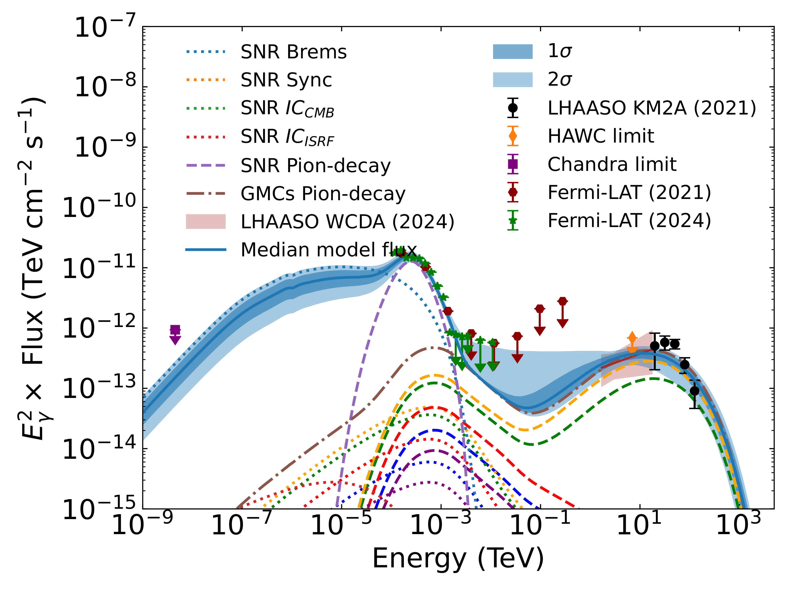<br />
图注：The multiwavelength modelling of the LHAASO source is presented under the assumption of a past SNR explosion as the origin of the $\gamma$-ray emissions. In the figure, the dashed curve represents the emission component arising from hadronic interactions, specifically $\gamma$-rays produced via neutral pion decay, while the dotted curve denotes the contribution from leptonic processes corresponding to the $\chi^2_{min}$. The $1\sigma\;\mathrm{and}\;2\sigma$ containment band is shown by the light and dark blue shaded region, where the solid line corresponds to the median emission curve of the model considered here. See Tab. \(\ref{tab:snr_model_parameters}\) for model parameters.<br />
对应解读：对应“建议重点查看主要数据、模型比较、参数约束”和“模型拟合”部分；这是过去 SNR 起源情景下的多波段谱能量分布拟合图。<br />
入选理由：该图直接展示论文核心结论：GeV–TeV 伽马射线可由 SNR 本体与逃逸宇宙线照亮分子云共同解释。图中包含强子与轻子分量、最佳拟合曲线以及 1σ/2σ 置信带，是判断模型是否能同时解释 Fermi-LAT 与 LHAASO 数据的最关键图。<br />
来源与置信度：\(arxiv_source\)；high；\(arxiv_source\) / \(aa_example.tex\):figure[7]</p>
<p><strong>Fig03</strong><br />
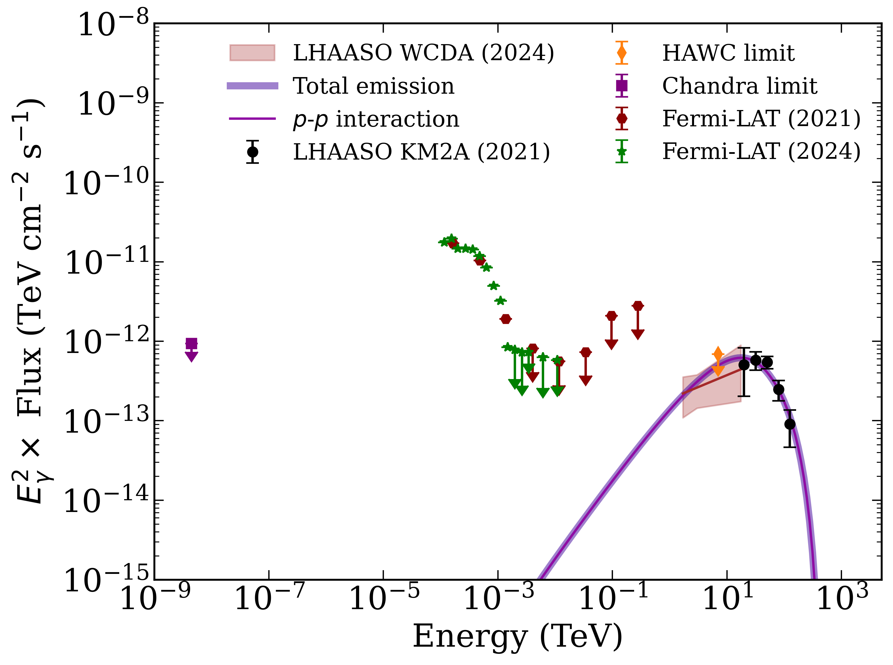<br />
图注：Spectral energy distribution fit using the source-independent illumination scenario, including multiwavelength observations of the emission region. Here we explain the UHE emission modelled via hadronic interactions originating from pion decay (thick solid line). A nuclear enhancement factor of 2.09 is applied to account for the contributions of heavier nuclei. (See Sec.\(\ref{subsec:MCillumination}\) for the model details)<br />
对应解读：对应“建议重点查看主要数据、模型比较”和源无关分子云照明模型的谱能量分布拟合。<br />
入选理由：该图给出源无关 hadronic illumination 场景下的 SED 拟合，用厚实线表示 π0 衰变产生的超高能伽马射线，是论文第一个主要模型框架的直接结果，可与 Fig07 的 SNR 解释形成核心对比。<br />
来源与置信度：\(arxiv_source\)；high；\(arxiv_source\) / \(aa_example.tex\):figure[3]</p>
<p><strong>Fig01</strong><br />
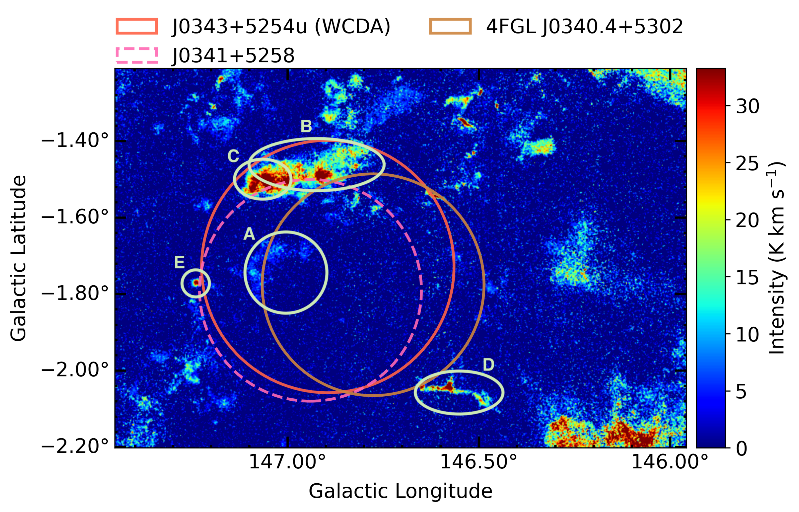<br />
图注：The $^{12}$CO (J=$1-0$) intensity map integrated over the velocity range $V_{\mathrm{LSR}} = -40$ to $10~\mathrm{km~s^{-1}}$, overlaid with the regions observed by the LHAASO and Fermi-LAT instruments toward the very-high-energy $\gamma$-ray source LHAASO J0341+5258, together with the five molecular clouds (shown by white circles), identified within this field of view by \(\cite{Tsuji25}.\)<br />
对应解读：对应“建议重点查看主要数据”和空间关联证据；展示 CO 分子气体、LHAASO/Fermi 区域及五个分子云的位置关系。<br />
入选理由：照明模型是否可信首先取决于 LHAASO J0341+5258 与周围分子云的空间重合或邻近关系。该图提供分子气体环境和观测区域的基础证据，是理解后续所有分子云相互作用建模的必要背景图。<br />
来源与置信度：\(arxiv_source\)；high；\(arxiv_source\) / \(aa_example.tex\):figure[1]</p>
<p><strong>Fig10</strong><br />
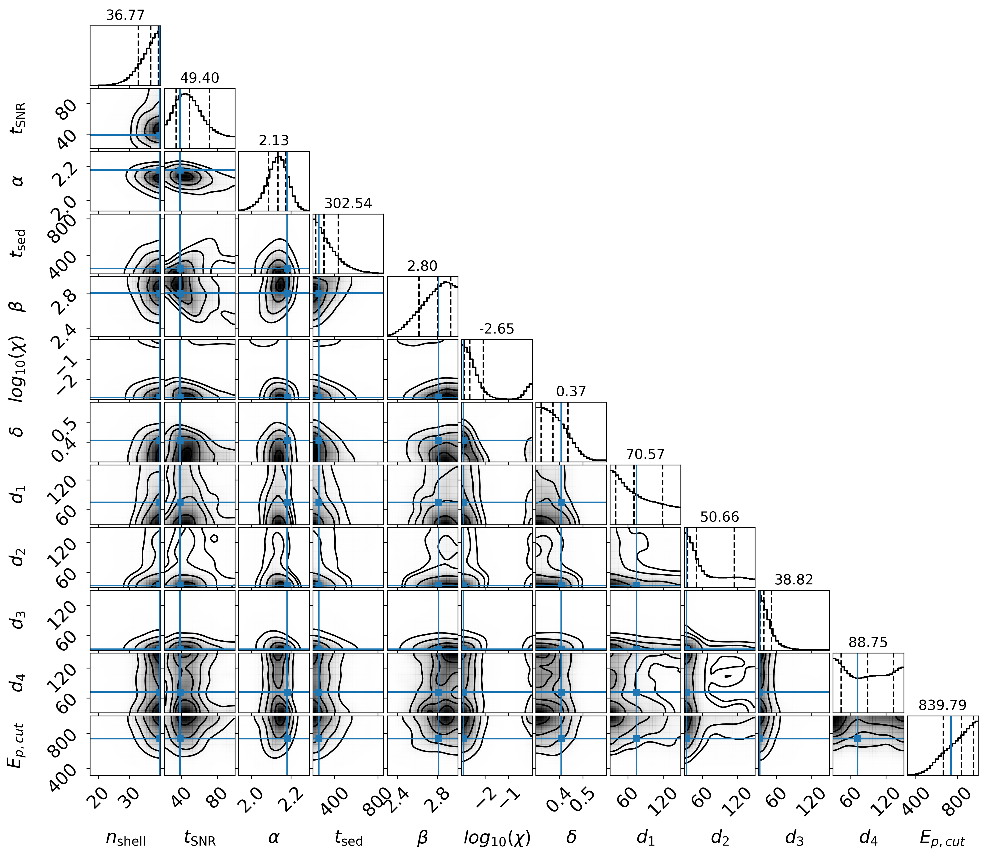<br />
图注：The correlations among the various parameters included in the fit are represented in a corner plot, where the dashed lines indicate the 68\% credible (containment) interval for each parameter, and the blue line denotes the corresponding best-fit parameter.<br />
对应解读：对应“参数约束、置信区间和模型拟合诊断”；展示拟合参数之间的相关性和 68% credible interval。<br />
入选理由：该图是候选图中最直接体现参数约束与不确定性的图。角图中的最佳拟合值和可信区间有助于判断 SNR-分子云模型参数是否存在退化，以及模型结论的稳健性。<br />
来源与置信度：\(arxiv_source\)；high；\(arxiv_source\) / \(aa_example.tex\):figure[10]</p>
<p><strong>Fig06</strong><br />
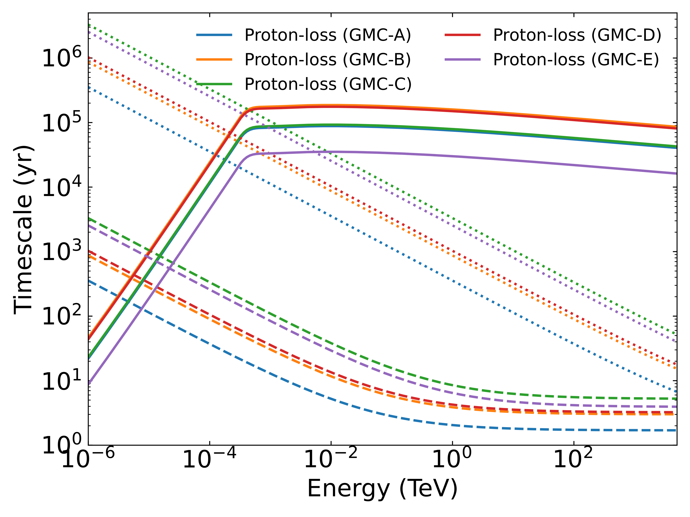<br />
图注：Cooling and propagation timescales of protons compared with the characteristic propagation time, defined as the sum of the diffusion and crossing times within the GMCs, for standard ($\chi = 1$) and suppressed ($\chi = 10^{-3}$) diffusion relative to the average Galactic value.<br />
对应解读：对应“模型拟合”中关于宇宙线传播、冷却和分子云内扩散假设的物理合理性检查。<br />
入选理由：论文核心解释依赖逃逸质子能否在合适时间尺度内到达并照亮 GMC。该图比较质子冷却与传播时间，并区分标准扩散和受抑制扩散，对验证 TeV 发射的传播条件非常关键。<br />
来源与置信度：\(arxiv_source\)；high；\(arxiv_source\) / \(aa_example.tex\):figure[6]</p>
<p><strong>Fig08</strong><br />
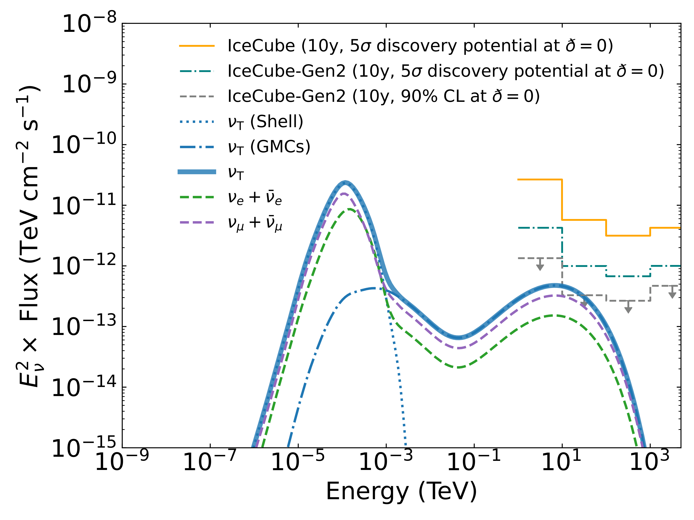<br />
图注：The electron, muonic and total neutrino flux from the interaction of cosmic rays near the source region is illustrated here along with the 10-year IceCube sensitivity curves.<br />
对应解读：对应“建议重点查看灵敏度预测”；展示源区宇宙线相互作用产生的中微子通量及 IceCube 10 年灵敏度。<br />
入选理由：虽然不是解释 LHAASO 伽马射线的主证据，但该图给出 hadronic 场景的可检验预言。中微子通量与 IceCube 灵敏度的比较能帮助评估未来多信使验证该模型的可能性。<br />
来源与置信度：\(arxiv_source\)；high；\(arxiv_source\) / \(aa_example.tex\):figure[8]</p>
<h4 id="_12">强相关工作</h4>
<p>这篇论文属于“LHAASO 暗源/未关联源 + 分子云照明 + SNR 逃逸宇宙线”的同类研究链条。直接相关的 same-source 工作应优先检索关键词“LHAASO J0341+5258”、“Tsuji 2025 molecular clouds J0341+5258”、“Fermi-LAT LHAASO J0341+5258”和“CO clouds LHAASO J0341+5258”。论文图注已引用 Tsuji25 识别该视场五个分子云，因此这是最接近的同源环境研究线索。公共检索入口可用本文 arXiv 页面 https://arxiv.org/abs/2607.13991 和 NASA ADS 以源名检索；若无法确认具体论文编号，不应在笔记中编造 arXiv ID。</p>
<p>同类和基础工作包括 SNR 与分子云相互作用产生 GeV—TeV 伽马射线的经典案例，例如 W28、W44、IC 443、W51C 等；这些源展示了逃逸宇宙线照亮邻近云、π0 衰变谱特征、以及 GeV/TeV 形态错位等现象。基础理论检索可使用关键词“cosmic ray illumination molecular clouds”, “escaped cosmic rays SNR gamma rays”, “Aharonian Atoyan molecular cloud cosmic rays”, “Gabici Aharonian Casanova 2009 cosmic rays molecular clouds”。这些工作可帮助判断本文采用的扩散参数、能量预算和云照明图像是否属于常规范围。</p>
<p>潜在张力或替代解释应从同类 LHAASO/PWN 研究中寻找。许多 TeV 暗源后来被解释为老年 PWN、偏移 PWN 或多个源混合；因此需要检索附近是否有 ATNF 脉冲星、Fermi 4FGL 源、SNRcat 中的壳层遗迹、HAWC/LHAASO 目录源或 X 射线弥散源。可用关键词“LHAASO unassociated source PWN”, “TeV halo molecular cloud ambiguity”, “hadronic leptonic degeneracy LHAASO”。</p>
<p>综述和目录层面，建议查 LHAASO 官方源表、Fermi-LAT 4FGL/4FHL 目录、SNRcat、ATNF pulsar catalogue、Dame CO survey 或相关 CO 巡天数据。若要构建 related-source context，应明确分类：本文是 same-source 候选解释论文；Tsuji25 属于 same-field/same-source 环境论文；W28/IC443/W44 等是 historical analogue/prototype；SNR—MC 宇宙线逃逸文献是 foundational work；PWN/TeV halo 解释是 same-class alternative。</p>
<p><strong>同一事件 / 同类源线索</strong>：</p>
<p>（未提供）</p>
<p><strong>相似工作</strong>：</p>
<p>（未提供）</p>
<p><strong>基础理论 / 方法工作</strong>：</p>
<p>（未提供）</p>
<p><strong>相反观点 / 张力线索</strong>：</p>
<p>（未提供）</p>
</details>
<h3 id="2-time-resolved-leptonic-modeling-of-the-prompt-emission-of-grb-211211a">2. Time-resolved leptonic modeling of the prompt emission of GRB 211211A</h3>
<ul>
<li>来源：arXiv / astro-ph.HE</li>
<li>链接：https://arxiv.org/abs/2607.13242v1</li>
<li>作者：Maria Petropoulou, Maria Gkoni, Konstantinos Xyloportas, Stamatios I. Stathopoulos, Georgios Vasilopoulos, Apostolos Mastichiadis</li>
<li>评分：novelty 7/10，importance 8/10，relevance 10/10，final 9.40/10</li>
<li>推荐理由：High-priority GRB/gamma-ray paper: time-resolved prompt-emission modeling of GRB 211211A with TeV SSC predictions and CTAO detectability, directly relevant to transient high-energy gamma-ray astronomy.</li>
</ul>
<p><strong>中文题目</strong>：Time-resolved leptonic modeling of the prompt emission of GRB 211211A</p>
<p><strong>做了什么</strong>：本文对 GRB 211211A 的 prompt emission 做 8 个时间区间的时间分辨轻子辐射建模，使用 LeHaMoC 计算包含同步辐射、同步自吸收、SSC、Klein--Nishina 冷却和 \(\gamma\gamma\) 成对产生的数值 SED，并用 MCMC 与 10 keV--10 MeV 观测光谱拟合。主要结论是：该能段 prompt 谱可由相对论电子同步辐射解释；前约 8 s 后验偏好快冷却，后期逐渐转向慢冷却；伴随 SSC 分量可延伸到 TeV，在类似事件且 CTAO 快速响应或源位于视场内时可能可探测。模型同时要求极高 Doppler factor, \(\delta\sim1000-2500\)，这与余辉建模推断的喷流尺度存在张力，可能需要 prompt 发射区在喷流内部具有额外相对论运动。</p>
<p><strong>为什么重要</strong>：重要性在于它把一个标志性同事件研究对象 GRB 211211A 的起源问题、prompt 辐射机制和 TeV 可探测性放进同一个定量框架。若同步辐射模型在 8 个时间段都能以合理残差解释 10 keV--10 MeV 光谱，并且冷却状态确实从快冷却转向慢冷却，那么这将对 GRB prompt 电子加速和磁场演化提供强约束。另一方面，所需 \(\delta\sim1000-2500\) 与 afterglow 喷流参数的张力也很重要，因为它可能指向磁重联 plasmoid、喷流内部小尺度相对论运动或更复杂的角结构。</p>
<p><strong>理论 / 观测 / 仪器方法价值</strong>：这篇论文的价值在于把 GRB 211211A 这一特殊并合起源长暴的 prompt 光谱从经验拟合推进到时间分辨物理建模。它不仅给出 keV--MeV 同步辐射解释，还把同一后验参数传播到 TeV SSC 预测、EBL 衰减和 CTAO 灵敏度比较，因此为未来快速响应高能观测提供了可检验预言。方法上，MCMC 数值 SED 拟合、小提琴后验、残差图、冷却指标直方图和变率时标敏感性测试构成了较完整的模型诊断链。</p>
<p><strong>为什么应该关注</strong>：如果你关心 GRB 分类、并合喷流、prompt 辐射机制或 CTAO 对瞬变源的科学回报，这篇论文都值得读。GRB 211211A 挑战了“长暴等于塌缩星”的简单分类，而本文进一步显示它的 prompt 辐射可能需要极高有效 Doppler factor 和随时间变化的电子冷却状态。它还把 Fermi-GBM prompt 数据与未来 TeV 观测直接连接起来，说明类似事件若被足够快地跟踪，可能在 TeV 能段检验 prompt SSC 模型。</p>
<details class="paper-detail">
<summary>展开详细解读：文章讲解、背景、理论、重点章节、图表与相关工作</summary>
<h4 id="_13">文章详细讲解</h4>
<p>本文的科学问题可以拆成三层。第一，GRB 211211A 的 10 keV--10 MeV 时间分辨 prompt 谱能否由单一轻子同步辐射框架解释，而不必在每个时间段引入经验 Band 函数的物理外插。第二，拟合得到的电子分布、磁场和 Doppler 因子是否随爆发演化呈现可解释的模式，特别是是否从快冷却转向慢冷却。第三，同一模型不可避免地产生的 SSC 高能分量是否可能被 CTAO 等 TeV 仪器看到，并且这种预测是否受 EBL、变率时标和内部吸收强烈影响。</p>
<p>方法上，作者没有只对时间平均光谱做一次拟合，而是把 burst 切成 8 个时间区间，对每个区间用 LeHaMoC 生成包含同步辐射、自吸收、逆康普顿、Klein--Nishina 冷却和 \(\gamma\gamma\) 成对产生的数值 SED。MCMC 的作用是探索参数后验，而图 2 显示的黑线和阴影不是任意调出的曲线，而是从后验样本中抽取模型后得到的中位数、68% 和 90% credible intervals。读这部分时要特别检查残差子图：如果残差在谱峰附近或高能端呈系统性偏差，则说明同步辐射解释虽然总体通过，但可能在局部谱形上缺少额外成分。</p>
<p>关键结果一是 GBM 覆盖的 10 keV--10 MeV prompt SED 可由相对论电子同步辐射成功重现。关键结果二是冷却状态随时间演化：摘要称前 8 s 的最佳拟合偏好快冷却，后续时间段逐渐转向慢冷却；图 8 用 \(\log_{10}(\gamma_{\rm cool}/\gamma_{\min})\) 的后验直方图支撑这一点。关键结果三是模型伴随的 SSC 分量可延伸到 TeV，并且在类似 GRB 211211A 的事件中，如果 CTAO 能足够快响应 Fermi-GBM trigger 或事件本来在视场内，预测通量可能超过相应曝光时间的灵敏度。</p>
<p>局限性集中在 prompt 区域动力学解释和参数退化。摘要指出观测短变率要求 \(\delta\sim1000--2500\)，这比很多余辉模型推断的喷流 Lorentz 因子更极端。论文用图 6 讨论一种可能：prompt 发射区或 plasmoid 相对于喷流等离子体本身还有相对论运动，从而有效 Doppler factor 可以高于全局喷流值。这里的限制是，SED 拟合得到的是辐射区有效参数，不直接告诉我们微观加速机制、磁重联几何或喷流角结构的唯一方案。</p>
<p>下一步阅读和可能修复方向包括：核查每个时间段的实际时间边界、观测点数、误差处理和背景扣除；检查 MCMC 先验是否对 \(\delta\)、\(B'\)、\(\gamma_{\min}\) 的后验造成边界效应；比较同步-only、同步+SSC、可能热光球或混合模型的统计优劣；对 TeV 预测进行不同 EBL 模型、不同变率时标和不同 CTAO 响应延迟的敏感性测试。若论文正文没有给出显式 Bayes factor 或信息准则，读者应把“成功拟合”理解为后验预测与数据兼容，而不是模型唯一性证明。</p>
<h4 id="_14">关键结果是怎么做出来的</h4>
<p>主结果的证据链从样本选择开始：本文只研究一个具名事件 GRB 211211A，但把 prompt emission 分成 8 个时间区间逐段拟合。这样的样本量不是“8 个 GRB”，而是同一 burst 的 8 个时间分辨光谱；因此统计独立性和物理解释都应按时间演化理解。已有图注显示 Fig. 2 对这 8 段分别给出观测 SED、后验中位模型、68%/90% credible intervals 和残差，这是判断同步辐射模型能否解释 10 keV--10 MeV 数据的第一证据。</p>
<p>对于“同步辐射可成功重现 prompt SED”这一结论，读者应看 Fig. 2 的三层信息：观测点是否落在 68% 或至少 90% 后验预测带内；残差是否大多位于 \(\pm10\%\) 或 \(\pm30\%\) 参考线内；以及不同时间段是否需要明显不同的参数才能维持拟合。若论文正文给出每段的拟合统计量、对数似然或 reduced \(\chi^2\)，应与残差图交叉检查。若没有显式模型比较指标，则结论应理解为“该轻子模型具有可接受后验预测”，而不是“同步辐射相对于所有替代模型显著胜出”。</p>
<p>第二个核心结果是冷却状态演化。作者根据后验参数计算 \(\gamma_{\rm cool}/\gamma_{\min}\)，并在 Fig. 8 中展示 \(\log_{10}\) 比值的直方图。前四个时间段主要位于负值，表示 \(\gamma_{\rm cool}<\gamma_{\min}\)，即快冷却；后期正值比例上升，表示电子群逐渐接近或进入慢冷却。这里的置信度不是传统“几 sigma 探测”，而是后验样本在零点两侧的概率质量；因此读者应在正文或图中核查每段快/慢冷却样本占比，而不仅引用摘要中的定性表述。</p>
<p>第三个结果是 TeV SSC 预测。Fig. 3 把每个时间段的模型延伸到高能端，给出 EBL 衰减前后曲线并叠加 CTAO 灵敏度。这个结果依赖两类统计/物理外推：一方面，GBM 能段主要约束同步辐射峰和电子分布，SSC TeV 分量受同一后验参数传播；另一方面，TeV 光子还受源内 \(\gamma\gamma\) 和 EBL 吸收影响。判断“可被 CTAO 探测”时应明确是对类似 GRB、快速响应或视场内触发条件下的预测，而不是已经观测到的 TeV 信号。</p>
<p>第四个结果是极高 Doppler factor 的需求及其张力。摘要给出 \(\delta\sim1000-2500\)，这主要由短变率、紧致度、谱峰位置和避免强内部吸收共同驱动。Fig. 6 将这种需求与 afterglow modeling 的观测视角约束联系起来，显示若 prompt 区域只是普通全局喷流的一部分，可能难以同时满足 prompt 和 afterglow 推断；若存在在喷流内部相对论运动的 plasmoid，则有效 Doppler factor 可被提高。这个结论的稳健性要结合 Fig. 11：当变率时标从 64 ms 改到 2 ms 时，参数后验如何变化。</p>
<p>系统误差主要包括时间分段选择、变率时标假设、背景扣除和光谱点误差、先验范围、EBL 模型、CTAO 灵敏度曲线对应的曝光时间，以及 LeHaMoC 模型中的几何和逃逸假设。对研究生读者而言，最重要的复核是：模型是否在所有 8 段都以相似质量拟合；关键物理结论是否由后验主体支持而非少数样本；TeV 可探测性是否在 EBL 衰减和合理响应延迟后仍成立；Doppler factor 张力是否只是某个固定 \(t_{\rm var}\) 假设造成的。</p>
<details class="paper-subdetail">
<summary>展开背景、理论、公式、模型、章节和图表导读</summary>
<h4 id="_15">背景知识</h4>
<p>GRB 211211A 的特殊性在于它把两个传统分类轴拉开了：按 prompt 持续时间它是长暴，约持续一分钟量级；按多波段余辉和伴随的红外/光学过剩解释，它又被广泛认为与致密双星并合及千新星有关，而不是典型大质量恒星塌缩长暴。这使它成为检验“长/短暴二分法”是否等同于“塌缩/并合起源二分法”的关键个例。本文不是重新判定其起源，而是在已知它可能是并合起源长持续 GRB 的背景下，追问 prompt 光谱本身能否由一个时间分辨的轻子辐射模型自洽解释。</p>
<p>prompt 辐射建模的难点长期存在：观测上 Fermi-GBM 等仪器给出的是若干时间段内 10 keV 到 MeV 能段的光子谱，常用 Band 函数、cutoff power law 等经验函数拟合；物理上需要把这些谱峰、低能斜率、高能尾和时间演化解释为同步辐射、逆康普顿、光球热辐射或磁重联/内激波过程的结果。本文选择轻子框架，重点考察相对论电子的同步辐射是否足以解释 10 keV--10 MeV prompt SED，并进一步预测同一电子群的 synchrotron self-Compton, SSC, 分量在 GeV--TeV 的可观测性。</p>
<p>这篇论文的研究对象是同一个 GRB 的多个时间区间，而不是一组 GRB 统计样本。已有图注显示作者研究了 8 个 time intervals，并对每个时间段进行数值 SED 模型的 MCMC 拟合。这样的设计很重要，因为 GRB prompt 的谱演化往往会被时间平均谱抹平；如果只看全时段平均谱，快冷却/慢冷却状态、磁场强度、电子注入参数和 Doppler 因子随时间的变化可能被错误地解释为单一稳定区域的性质。</p>
<p>常见误区有三点。第一，不应把“同步辐射能拟合 GBM 能段”理解为已经唯一排除了光球或混合模型；本文主要证明某个非热轻子方案在时间分辨层面可行，并用残差、后验和冷却诊断检验其自洽性。第二，不应把 TeV 可探测性看成对此次 GRB 211211A 的实际探测声明；摘要说的是类似事件在 CTAO 快速响应或落入视场时的预测通量可能可探测，图 3 还需结合 EBL 吸收和曝光时间读。第三，摘要中 Doppler factor 约 1000--2500 是 prompt 发射区建模需求，不等同于余辉建模得到的全局喷流 Lorentz 因子；论文正是指出二者存在张力，可能需要 prompt 区域相对于喷流等离子体还有额外相对论运动。</p>
<h4 id="_16">基础理论 / 方法脉络</h4>
<p>从物理图像看，本文假设 prompt 区域中有一群非热相对论电子，它们在磁场中作螺旋运动产生同步辐射；这些同步光子又可被同一批电子逆康普顿散射，形成 SSC 高能分量。观测到的 keV--MeV 谱峰主要对应同步辐射峰，而 GeV--TeV 预测主要来自 SSC。由于 GRB 发射区以高度相对论速度朝向观测者运动，所有频率、光度和时间尺度都要经过 Doppler boost 与宇宙学红移修正。</p>
<p>关键量包括发射区 Doppler 因子 \(\delta\)、共动磁场 \(B'\)、发射区半径或尺度 \(R'\)、电子最小 Lorentz 因子 \(\gamma_{\min}\)、最大或截止 Lorentz 因子、电子注入谱指数以及电子能量密度。观测的变率时间尺度约束发射区大小，通常有 \(R'\lesssim c\,t_{\rm var}\delta/(1+z)\)。因此，如果 burst 显示毫秒到几十毫秒级短变率，而同步辐射峰又位于 MeV 附近，模型会倾向要求很大的 \(\delta\)、较高的 \(\gamma\) 或较强磁场；这些参数之间存在明显退化。</p>
<p>快冷却与慢冷却是本文最核心的物理诊断之一。电子冷却 Lorentz 因子 \(\gamma_{\rm cool}\) 由辐射冷却时间与动力学时间相等定义；若 \(\gamma_{\rm cool}<\gamma_{\min}\)，注入电子很快损失能量，是快冷却；若 \(\gamma_{\rm cool}>\gamma_{\min}\)，低端注入电子在逃逸或膨胀前不能充分冷却，是慢冷却。图 8 的 \(\log_{10}(\gamma_{\rm cool}/\gamma_{\min})\) 直方图就是把 MCMC 后验样本转化为冷却状态概率的诊断。</p>
<p>逆康普顿部分还必须考虑 Klein--Nishina 效应和 \(\gamma\gamma\) 成对产生。TeV 光子不只是由 SSC 产生后直接逃逸：在源内可与低能光子发生 \(\gamma\gamma\to e^+e^-\)，在传播途中还会被 extragalactic background light, EBL, 吸收。本文图 3 对比无 EBL 衰减与采用 Finke 2022 EBL 模型后的 SED，并叠加 CTAO 灵敏度；因此读 TeV 结论时必须区分“源内产生的本征 SSC 通量”和“到达地球后的衰减通量”。</p>
<p>统计方法上，论文用 LeHaMoC 计算时间依赖非热辐射 SED，再用 MCMC 拟合每个时间段的观测 SED。读者应把模型理解为“数值前向模型 + 后验采样”，而不是简单的解析曲线拟合。图 2 的 68%/90% credible intervals 反映从后验抽取的模型族不确定性；图 4 的小提琴图显示参数边缘后验随时间的变化；图 11 则展示 assumed variability timescale 从 64 ms 改为 2 ms 后，后验如何系统移动。</p>
<h4 id="_17">公式与推导</h4>
<p>第一步是把观测变率与共动发射区尺度联系起来。若源红移为 \(z\)，观测最短变率为 \(t_{\rm var}\)，有效 Doppler 因子为 \(\delta\)，则</p>
<div class="math-display">\[R' \lesssim \frac{c\,t_{\rm var}\,\delta}{1+z} .\]</div>
<p>这里 \(R'\) 是共动尺度。该式说明短变率会迫使发射区很小，除非 \(\delta\) 很大；本文得到 \(\delta\sim1000-2500\) 的需求就与这一尺度约束密切相关。</p>
<p>第二步是同步辐射特征频率。共动系中 Lorentz 因子为 \(\gamma\) 的电子在磁场 \(B'\) 中辐射的典型观测频率为</p>
<div class="math-display">\[\nu_{\rm syn} \simeq \frac{\delta}{1+z}\frac{3eB'}{4\pi m_e c}\gamma^2 .\]</div>
<p>因此 MeV 附近的谱峰可由较大的 \(B'\)、较高的 \(\gamma\) 或较大的 \(\delta\) 共同产生。仅凭峰频不能唯一确定三者，需要结合冷却、通量归一化和 SSC 约束。</p>
<p>第三步是同步冷却时间。忽略逆康普顿时，共动系电子同步冷却时间为</p>
<div class="math-display">\[t'_{\rm syn}(\gamma)=\frac{6\pi m_e c}{\sigma_T B'^2\gamma} .\]</div>
<p>若逆康普顿也贡献冷却，可近似写为</p>
<div class="math-display">\[t'_{\rm cool}(\gamma)=\frac{6\pi m_e c}{\sigma_T B'^2\gamma\,[1+Y_{\rm eff}(\gamma)]} ,\]</div>
<p>其中 \(Y_{\rm eff}\) 是考虑 Klein--Nishina 抑制后的有效 Compton 参数。LeHaMoC 数值计算比这个近似更完整，但该式给出冷却状态的直观尺度。</p>
<p>第四步定义冷却 Lorentz 因子。令冷却时间等于动力学或逃逸时间 \(t'_{\rm dyn}\sim R'/c\)，有</p>
<div class="math-display">\[\gamma_{\rm cool}\simeq \frac{6\pi m_e c}{\sigma_T B'^2 t'_{\rm dyn}[1+Y_{\rm eff}(\gamma_{\rm cool})]} .\]</div>
<p>若</p>
<div class="math-display">\[\frac{\gamma_{\rm cool}}{\gamma_{\min}}<1\]</div>
<p>则为快冷却；若该比值大于 1，则为慢冷却。本文 Fig. 8 实际上就是对 MCMC 后验样本计算这一比值并统计其分布。</p>
<p>第五步是 SSC 能量尺度。在 Thomson 极限下，被同一电子散射后的光子频率约为</p>
<div class="math-display">\[\nu_{\rm SSC}\sim \frac{4}{3}\gamma^2\nu_{\rm syn} .\]</div>
<p>但当电子静止系中种子光子能量接近或超过 \(m_ec^2\) 时，进入 Klein--Nishina 区域，散射截面和能量增益都被压低。常用判据是</p>
<div class="math-display">\[4\gamma h\nu'_{\rm seed}\gtrsim m_e c^2 .\]</div>
<p>本文明确包含 Klein--Nishina 冷却，因此 TeV 外推不能用简单 Thomson 标度直接代替数值结果。</p>
<p>第六步是 \(\gamma\gamma\) 吸收。高能光子能量 \(E_\gamma\) 与靶光子能量 \(\epsilon\) 满足近似阈值</p>
<div class="math-display">\[E_\gamma\epsilon(1-\cos\theta)\gtrsim 2(m_ec^2)^2\]</div>
<p>时可产生正负电子对。源内光子场越强、区域越紧致，TeV 光子越容易被吸收；这也是 Doppler 因子很重要的原因，因为较大的 \(\delta\) 会降低共动紧致度。</p>
<p>第七步是从本征光度到观测通量。若数值模型给出共动谱光度 \(L'_{\nu'}\)，理想化各向同性 blob 的观测谱通量可写成标度关系</p>
<div class="math-display">\[F_\nu \simeq \frac{\delta^3}{4\pi d_L^2}\,L'_{\nu'} ,\qquad \nu=\frac{\delta}{1+z}\nu' ,\]</div>
<p>其中 \(d_L\) 为光度距离。不同几何会改变 \(\delta\) 幂次的细节，但强 Doppler 放大是 prompt SED 拟合的核心。</p>
<p>第八步是传播过程中的 EBL 衰减。到达地球的高能通量为</p>
<div class="math-display">\[F^{\rm obs}_{E}=F^{\rm int}_{E}\exp[-\tau_{\rm EBL}(E,z)] ,\]</div>
<p>\(\tau_{\rm EBL}\) 由 EBL 模型给出。本文 Fig. 3 对比衰减前后的模型，并采用 Finke 2022 EBL 模型；因此 CTAO 可探测性要用衰减后的曲线判断。</p>
<p>第九步是拟合统计量。若观测 SED 点为 \(D_i\)，误差为 \(\sigma_i\)，模型为 \(M_i(\boldsymbol\theta)\)，高斯近似下似然可写作</p>
<div class="math-display">\[\ln\mathcal{L}(\boldsymbol\theta)=-\frac{1}{2}\sum_i\left[\frac{D_i-M_i(\boldsymbol\theta)}{\sigma_i}\right]^2-\sum_i\ln(\sqrt{2\pi}\sigma_i) .\]</div>
<p>MCMC 采样的后验满足</p>
<div class="math-display">\[p(\boldsymbol\theta|D)\propto \mathcal{L}(D|\boldsymbol\theta)\,p(\boldsymbol\theta) .\]</div>
<p>图 2、图 4、图 8 和图 11 都应理解为从这个后验或其派生量得到的模型预测与参数约束。</p>
<h4 id="_18">模型拟合 / 应用方法</h4>
<p>拟合对象是 8 个时间区间的 prompt SED，主要覆盖 10 keV--10 MeV 的观测数据，并将同一物理模型外推到更高能段。自由参数应包括但不限于 Doppler factor、磁场、发射区尺度或由变率时标决定的尺度、电子分布的最小/最大 Lorentz 因子、谱指数和归一化。模型输出由 LeHaMoC 数值计算，包含同步辐射、自吸收、SSC、Klein--Nishina 冷却和 \(\gamma\gamma\) pair production，因此每次 MCMC 采样都对应一条完整 SED，而非解析 Band 曲线。</p>
<p>似然函数很可能基于观测 SED 点与模型 SED 的误差加权偏差；具体是否使用高斯误差、对数空间误差或包含系统误差项，需要读正文确认。图 2 的模型中位数来自 1000 个随机后验样本，阴影为 68% 和 90% credible intervals，说明作者强调后验预测分布而非单一 best-fit。读者应检查 MCMC 链是否收敛、有效样本量是否足够、先验是否宽于后验，以及每个时间段是否分别拟合还是共享某些参数。</p>
<p>残差诊断是本论文拟合可信度的核心。Fig. 2 下方相对残差与 \(\pm10\%\)、\(\pm30\%\) 参考线可用于快速判断模型偏差。如果残差在全部能段随机散布，说明同步辐射谱形足够；如果在低能端持续偏离，可能涉及同步低能谱斜率、电子冷却分布或未建模热成分；如果在高能端偏离，则可能影响 SSC 外推，因为高能电子分布和 KN 冷却约束不足。</p>
<p>主要退化包括 \(\nu_{\rm syn}\propto \delta B'\gamma^2\) 导致的 \(B'-\delta-\gamma\) 退化，通量归一化与电子数密度/发射区体积/\(\delta\) 的退化，以及冷却状态对 \(B'\)、\(R'\)、\(Y_{\rm eff}\) 的共同依赖。TeV 预测还会放大这些退化：GBM 数据直接约束同步分量，但 SSC 峰位置和强度可能受高能电子尾、KN 抑制和内部吸收控制。图 4 的小提琴图和任何参数相关图都应被用来判断这些退化是否导致多解。</p>
<p>系统误差方面，变率时标最关键。Fig. 11 比较 64 ms 与 2 ms 假设，说明作者意识到 \(t_{\rm var}\) 会改变发射区尺度、紧致度和所需 \(\delta\)。此外，EBL 模型影响 CTAO 能段通量，仪器灵敏度取决于响应延迟和曝光时间，时间分段影响谱演化解释，余辉建模给出的视角和 Lorentz factor 又影响对 prompt Doppler factor 的物理解读。若要进一步强化模型比较，应加入替代模型如光球+非热尾、不同电子注入形式或 hadronic 贡献，并报告信息准则或 posterior predictive checks。</p>
<h4 id="_19">重点章节 / 结果段落怎么读</h4>
<ol>
<li>
<p>引言与 GRB 211211A 背景：重点阅读作者如何界定 GRB 211211A 的“长持续但并合起源”身份，以及为何 prompt 光谱建模能补充千新星/余辉证据。注意区分本文直接研究的 prompt 辐射与前人关于宿主、千新星和 afterglow 的结论。</p>
</li>
<li>
<p>数据与时间分段：需要记录 8 个时间区间的边界、使用的仪器能段、光谱点构造方式、误差定义和背景处理。所有后续结论都建立在这些时间分辨 SED 上；若某段信噪比较低，其参数后验和 TeV 外推可能更宽。</p>
</li>
<li>
<p>LeHaMoC 辐射模型章节：重点看电子注入函数、磁场、发射区尺度、Doppler factor、逃逸或动力学时间、同步自吸收、逆康普顿、Klein--Nishina 和 \(\gamma\gamma\) 处理方式。读者应把每个自由参数与可观测谱形特征对应起来。</p>
</li>
<li>
<p>MCMC 拟合与先验：重点看自由参数列表、先验范围、采样收敛诊断、似然或误差模型。若论文提供角图或表格，应检查参数是否贴先验边界，以及 \(B'\)、\(\delta\)、\(\gamma_{\min}\) 和归一化之间的退化。</p>
</li>
<li>
<p>结果图组：Fig. 2 验证 GBM 能段拟合质量，Fig. 3 验证 TeV 外推和 CTAO 可探测性，Fig. 4 看参数时间演化，Fig. 8 看快/慢冷却转变，Fig. 6 看 Doppler factor 与 afterglow 视角张力，Fig. 11 看变率时标系统误差。这些图应作为一个闭环阅读，而不是孤立引用。</p>
</li>
<li>
<p>讨论与结论：重点评估作者如何解释极高 Doppler factor，是否提出 plasmoid 或喷流内部相对论运动，是否承认与 afterglow Lorentz factor 的张力，以及对未来 CTAO 快速响应、Fermi-GBM trigger 联动和类似并合起源长暴的预测是什么。</p>
</li>
</ol>
<h4 id="_20">建议重点查看的图表</h4>
<ol>
<li>
<p>时间分辨 SED 拟合图：重点看每个时间区间的观测点、黑色中位模型、68%/90% credible bands，以及低能端、谱峰附近和高能端是否有系统残差。已有 Fig. 2 正是核心证据。</p>
</li>
<li>
<p>残差子图或相对偏差诊断：检查残差是否随机围绕零分布，还是在某些能段连续偏正/偏负。图注说明水平线给出 \(\pm10\%\) 和 \(\pm30\%\) 相对偏差，这是判断物理模型而非经验函数是否足够的直接标尺。</p>
</li>
<li>
<p>EBL 衰减后的 TeV 外推图：看无 EBL 的灰色虚线与含 EBL 的黑色实线差距、CTAO 灵敏度曲线与模型 credible band 的交叉关系、以及不同时间段曝光时间对应的灵敏度变化。已有 Fig. 3 支撑可探测性讨论。</p>
</li>
<li>
<p>参数后验时间演化图：小提琴图应检查中位数、68%/90% 区间、分布是否多峰、是否贴近先验边界。已有 Fig. 4 用于判断物理条件是否真的随时间变化，而不是后验未约束导致的视觉波动。</p>
</li>
<li>
<p>冷却状态诊断图：重点看 \(\log_{10}(\gamma_{\rm cool}/\gamma_{\min})\) 的分布在零点两侧的概率质量。已有 Fig. 8 是验证“前 8 s 快冷却、后期慢冷却比例增加”的关键。</p>
</li>
<li>
<p>Doppler factor 几何热图：检查 afterglow 视角约束与 prompt 所需 \(\delta\) 是否有交集，以及 plasmoid 在喷流参考系中的运动方向如何改变有效 Doppler boost。已有 Fig. 6 是判断张力是否可由相对论子结构缓解的主要图。</p>
</li>
<li>
<p>变率时标系统误差图：比较 64 ms 与 2 ms 假设下参数后验如何移动，尤其是 \(R'\)、\(\delta\)、\(B'\)、电子能量密度和冷却指标。已有 Fig. 11 是检验短变率假设敏感性的关键。</p>
</li>
<li>
<p>若正文有角图、表格或先验表，应检查参数相关性和先验范围。没有这些图时，读者仍应从小提琴图和残差图推断是否存在 \(B'-\delta-\gamma_{\min}\) 退化，以及 TeV 预测是否主要由未被 GBM 数据直接约束的参数控制。</p>
</li>
</ol>
<h4 id="_21">关键图表逐图导读</h4>
<p>图 1：如果论文图 1 展示 GRB 211211A 的 prompt 光变曲线或时间分段，读者首先要看横轴时间零点如何定义、纵轴是计数率还是能量通量、不同能段是否分色，以及 8 个拟合时间区间的边界是否覆盖强峰、弱尾和谱演化阶段。陷阱是把时间分段当成任意技术细节；实际上每段的积分时间直接决定光谱信噪比、变率约束和后续 MCMC 参数不确定性。若图 1 还标出 64 ms 或 2 ms 变率时标，应与 Fig. 11 的系统误差测试一起读。</p>
<p>图 2：这是核心 SED 拟合图。每个 panel 对应一个时间区间，横轴通常是能量或频率，纵轴是 SED 形式的能量通量；深红点是观测数据，黑色实线是从 1000 个后验样本得到的中位模型，深/浅阴影分别为 68%/90% credible interval。下方残差子图给出观测与中位模型的相对偏差，并标出 \(\pm10\%\)、\(\pm30\%\) 水平线。读图时不要只看黑线穿过数据点，还要看残差是否在某些能段连续同号；若连续偏差出现在低能斜率或 MeV 高能尾，可能暗示同步谱形、电子分布或额外成分需要调整。</p>
<p>图 3：这是 TeV 预测和仪器可探测性的关键图。灰色虚线代表无 EBL 衰减的中位模型，黑色实线代表采用 Finke 2022 EBL 后的模型，阴影仍给出后验模型不确定性；棕色和粉色线是相应曝光时间的 CTAO 灵敏度，彩色条显示不同仪器频段。读图重点是黑色实线而不是灰色虚线是否高于或接近 CTAO 曲线，以及这种关系在哪些时间段成立。陷阱是把本征 SSC 亮度误读为地面可见通量，或者忽略响应延迟导致的曝光窗口变化。</p>
<p>图 4：小提琴图汇总拟合参数随 8 个时间段的后验。白点为中位数，粗/细条为 68%/90% 区间。读者应关注参数是否单调演化、是否在某些时间段突然跳变、后验是否变宽或多峰，以及是否贴近先验边界。若 \(B'\)、\(\gamma_{\min}\)、电子归一化和 \(\delta\) 同时变化，需要警惕它们只是共同补偿谱峰位置和通量的退化，而不一定代表唯一物理演化。</p>
<p>图 6：该热图展示不同 plasmoid 运动方向 \(\theta_{\rm co}\) 和观测视角 \(\theta_{\rm obs}\) 下的有效 Doppler factor，并叠加 afterglow modeling 给出的视角中值和 68% 区间。读图时要寻找 prompt SED 所需 \(\delta\sim1000-2500\) 是否能在余辉视角允许区域内实现。若只有很窄的角度或特殊 plasmoid 方向能达到所需 \(\delta\)，则模型在动力学解释上更精细调节。</p>
<p>图 8：该图把冷却诊断量 \(\log_{10}(\gamma_{\rm cool}/\gamma_{\min})\) 做成 8 个时间段的后验直方图。零点左侧表示快冷却，右侧表示慢冷却。论文摘要的“前 8 s 快冷却、后期转向慢冷却”应直接从这里验证：前四个时间段是否大多数后验样本为负，后面时间段正值比例是否确实增加。陷阱是只看中位数而忽略跨零的概率；如果分布很宽，冷却分类应表述为概率性偏好而非确定状态。</p>
<p>图 11：该图比较假设 64 ms 与 2 ms 变率时标时两个代表性时间段的参数后验。读者应检查哪些参数对 \(t_{\rm var}\) 最敏感：理论上 \(R'\)、紧致度、内部 \(\gamma\gamma\) 吸收、所需 \(\delta\) 和冷却状态都会受影响。若主结论在 2 ms 假设下仍成立，说明模型对短变率系统误差较稳健；若 TeV 预测或快/慢冷却分类显著改变，则需要把这些结论标为假设依赖。</p>
</details>
<h4 id="_22">论文原图 / 可嵌入图片</h4>
<p><strong>Fig02</strong><br />
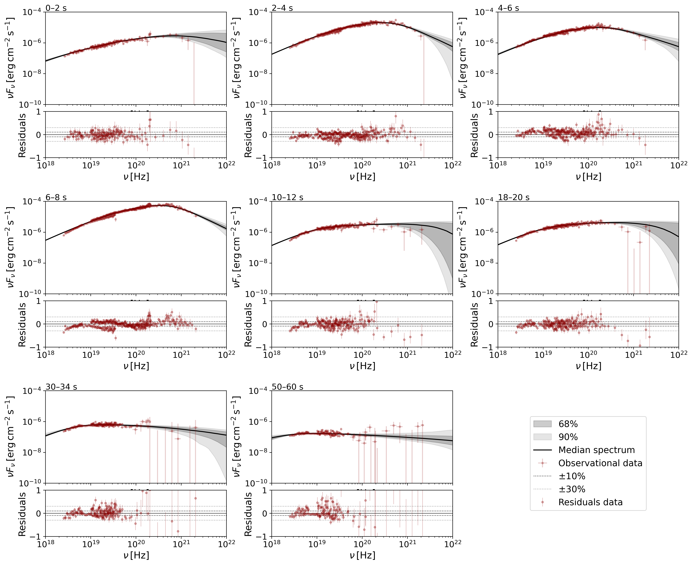<br />
图注：Observed and best-fitting numerical SEDs and residuals for the eight time intervals under study. In each panel, the observational data are shown as dark red markers, while the solid black line represents the median model, derived from 1000 randomly selected samples from the posterior distribution. The dark and light shaded regions represent the 68\% and 90\% credible intervals, respectively. The lower subpanels show the residuals between the observational data and the median model, as defined in \(\autoref{sec:results}.\) The horizontal lines indicate $\pm 10\%$ and $\pm 30\%$ relative deviations.<br />
对应解读：建议重点查看的主要数据、模型比较、残差和置信区间；对应时间分辨SED拟合结果。<br />
入选理由：这是论文核心结果图，直接展示8个时间区间的观测SED、最佳拟合数值模型、68%与90%后验可信区间以及残差子图，最能检验同步辐射模型是否能重现10 keV到10 MeV的 prompt 光谱。<br />
来源与置信度：\(arxiv_source\)；high；\(arxiv_source\) / paper-v1.tex:figure[2]</p>
<p><strong>Fig03</strong><br />
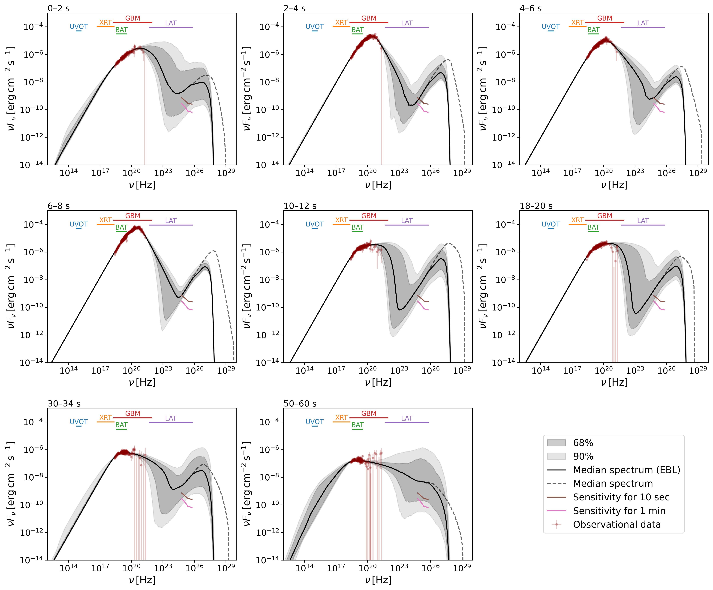<br />
图注：Observed and best-fitting numerical SEDs for the eight time intervals under study, taking into account EBL absorption effects. In each panel, the observational data are shown as dark red markers. The dashed gray line represents the median model derived from 1000 randomly selected samples from the posterior distribution without EBL attenuation, while the solid black line shows the corresponding median model after accounting for EBL absorption using the model of \(\cite{Finke_2022}.\) The dark and light shaded regions represent the 68\% and 90\% credible intervals, respectively. The brown and pink lines denote the CTAO sensitivity limits for the corresponding exposure times \(\citep{CTA_2019}.\) The colored bars indicate the frequency ranges covered by the instruments mentioned.<br />
对应解读：建议重点查看的模型外推、灵敏度预测和高能TeV可探测性。<br />
入选理由：该图把最佳拟合SED外推到高能端，并同时给出EBL吸收前后模型、可信区间、CTAO灵敏度曲线和仪器覆盖频段，直接支撑论文关于SSC TeV辐射及CTAO快速响应可探测性的结论。<br />
来源与置信度：\(arxiv_source\)；high；\(arxiv_source\) / paper-v1.tex:figure[3]</p>
<p><strong>Fig04</strong><br />
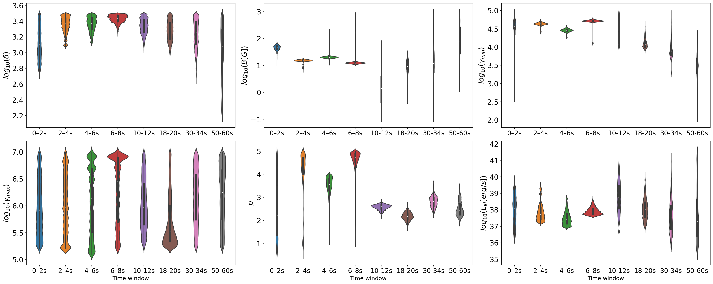<br />
图注：Violin plots showing the posterior distributions of the fitted model parameters during the burst evolution. White markers show the median values while thick (thin) bars indicate the 68\% (90\%) confidence intervals.<br />
对应解读：模型拟合参数约束与时间演化；对应MCMC后验分布和置信区间。<br />
入选理由：该图用小提琴图汇总拟合参数在爆发演化中的后验分布、中位数及68%/90%置信区间，是理解不同时间段物理条件变化、参数约束强弱和潜在退化关系的关键图。<br />
来源与置信度：\(arxiv_source\)；high；\(arxiv_source\) / paper-v1.tex:figure[4]</p>
<p><strong>Fig08</strong><br />
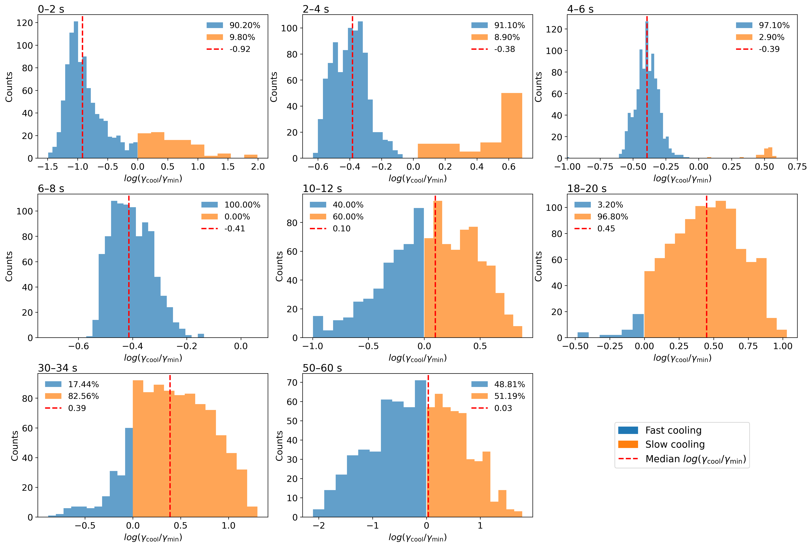<br />
图注：Histograms of $\log_{10}(\gamma_{\rm cool}/\gamma_{\min})$ for the eight time intervals under study. The values of $\log_{10}\left(\gamma_{\rm cool}/\gamma_{\rm min}\right)$ are predominantly negative throughout the first four time intervals, indicating that the system is in the fast cooling regime. In the later time intervals, an increase of the percentage of positive values indicates that the electron population progressively transitions towards the slow cooling regime.<br />
对应解读：关键物理诊断量：快冷却到慢冷却转变。<br />
入选理由：该图直接给出log10(\(gamma_cool/gamma_min\))在8个时间区间的分布，能够验证论文摘要中“前8秒偏快冷却、后期逐渐转向慢冷却”的核心物理结论，比一般参数图更直接对应冷却状态诊断。<br />
来源与置信度：\(arxiv_source\)；high；\(arxiv_source\) / paper-v1.tex:figure[8]</p>
<p><strong>Fig06</strong><br />
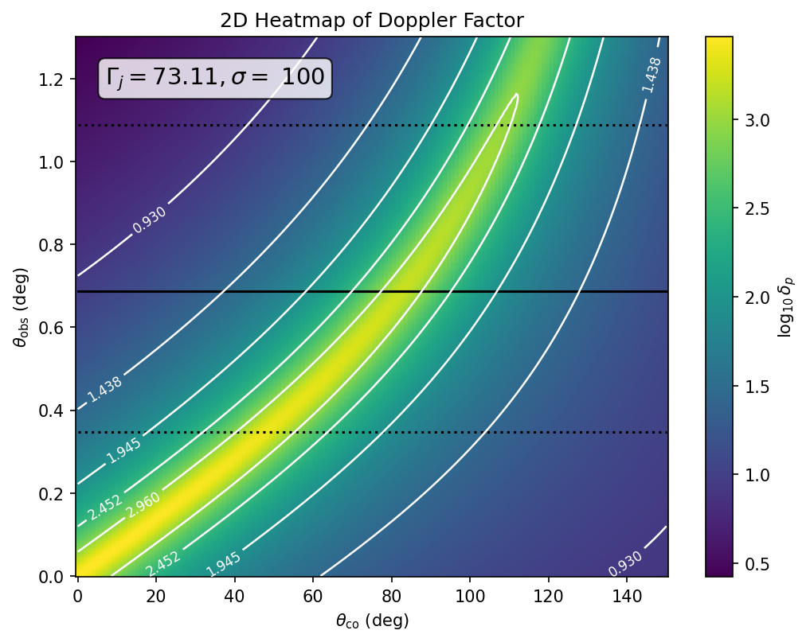<br />
图注：Heatmap of the plasmoid Doppler factor expected for different directions of motions (measured by the angle $\theta_{\rm co}$ in the jet reference frame) $\theta_{\rm co}$ and observer's viewing angles $\theta_{\rm obs}$. The best-fit value for the viewing angle and the 68\% confidence interval, as inferred from afterglow modeling \(\citep{Rastinejad_2022},\) are indicated with horizontal solid and dotted lines, respectively.<br />
对应解读：极高Doppler因子与afterglow视角约束之间的张力。<br />
入选理由：该热图展示不同共动系运动方向和观测视角下的plasmoid Doppler因子，并叠加afterglow建模给出的视角及68%置信区间，直接支撑论文关于prompt区需要极高Doppler因子且难以与常规喷流Lorentz因子协调的讨论。<br />
来源与置信度：\(arxiv_source\)；high；\(arxiv_source\) / paper-v1.tex:figure[6]</p>
<p><strong>Fig11</strong><br />
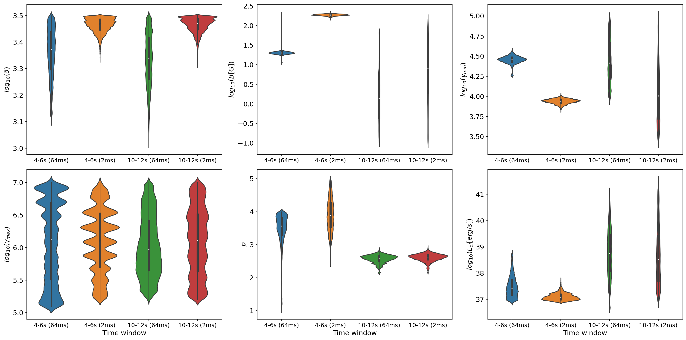<br />
图注：Violin plots comparing the posterior distributions of the fitted model parameters for two indicative time intervals obtained assuming variability timescale of 64~ms and 2~ms.<br />
对应解读：模型拟合的系统误差/假设敏感性：不同变率时间尺度对参数后验的影响。<br />
入选理由：该图比较64 ms与2 ms变率时间尺度假设下两个代表性时间段的参数后验分布，可用于评估短时标假设对发射区尺寸、Doppler因子和其他物理参数推断的系统影响。<br />
来源与置信度：\(arxiv_source\)；high；\(arxiv_source\) / paper-v1.tex:figure[11]</p>
<h4 id="_23">强相关工作</h4>
<p>同一事件的上下文非常重要。GRB 211211A 作为“长持续但并合起源”的代表事件，已有同事件多波段和千新星研究，例如 Rastinejad 等关于 long-duration GRB 伴随 kilonova 的工作，可从 https://arxiv.org/abs/2204.10864 检索；还应在 NASA ADS 或 arXiv 用关键词 “GRB 211211A kilonova long-duration merger afterglow” 查找 Troja、Gompertz、Mei、Yang 等团队的同事件论文。本文的 prompt 轻子建模应与这些同事件 afterglow/千新星论文对红移、视角、喷流 Lorentz factor、能量和环境密度的约束对照阅读。</p>
<p>同类和基础工作包括 GRB prompt 同步辐射模型、快冷却谱斜率问题、SSC TeV 预测、以及 GRB 190114C/GRB 180720B 等 TeV GRB 的 MAGIC/H.E.S.S. 观测论文。可检索 “GRB prompt synchrotron fast cooling problem”, “synchrotron self-Compton prompt GRB TeV”, “MAGIC GRB 190114C Nature 2019”, “HESS GRB 180720B” 来建立比较坐标。与本文最相关的张力线索是：prompt 所需极高 Doppler factor 是否能与 afterglow 推断的全局喷流 Lorentz factor 共存；以及同步辐射模型是否能同时满足低能谱斜率、冷却时间和 pair-opacity 限制。</p>
<p>方法论上，LeHaMoC 是时间依赖非热辐射代码，读者应查作者团队关于 LeHaMoC 或类似 leptonic/hadronic numerical SED modeling 的基础论文，关键词可用 “LeHaMoC time-dependent non-thermal radiation code Petropoulou Mastichiadis”。如果不确定具体论文编号，不要随意引用；建议以本文参考文献中 LeHaMoC 首次介绍条目为准。CTAO 灵敏度和 EBL 衰减相关背景可查 CTA Consortium performance papers 与 Finke EBL model，本文图注明确使用 Finke 2022 和 CTAO sensitivity limits。</p>
<p><strong>同一事件 / 同类源线索</strong>：</p>
<p>（未提供）</p>
<p><strong>相似工作</strong>：</p>
<p>（未提供）</p>
<p><strong>基础理论 / 方法工作</strong>：</p>
<p>（未提供）</p>
<p><strong>相反观点 / 张力线索</strong>：</p>
<p>（未提供）</p>
</details>
<h3 id="3-the-soft-volume-of-ultra-high-energy-neutrinos-experiments">3. The soft volume of ultra-high energy neutrinos experiments</h3>
<ul>
<li>来源：arXiv / astro-ph.HE</li>
<li>链接：https://arxiv.org/abs/2607.13143v1</li>
<li>作者：Stefano Palmisano, Diego Redigolo, Michele Tammaro, Andrea Tesi</li>
<li>评分：novelty 8/10，importance 8/10，relevance 9/10，final 9.35/10</li>
<li>推荐理由：Important high-energy neutrino astronomy/instrument-method paper: semi-analytical mapping from UHE neutrino fluxes to through-going muon event rates, with IceCube and KM3NeT implications.</li>
</ul>
<p><strong>中文题目</strong>：The soft volume of ultra-high energy neutrinos experiments</p>
<p><strong>做了什么</strong>：本文提出一个半解析框架，用 Boltzmann 输运方程描述超高能 \(\nu_\mu\) 相互作用后产生的 μ 子在水/冰中的传播，并把外部相互作用靶区自然转化为 through-going track 的“soft volume”。核心技术是利用软能损占优，将碰撞算符展开到二阶，得到由 \(b_\mu\) 和 \(d_\mu\) 控制的能量空间 drift-diffusion 方程，同时把稀有 hard scattering 作为系统修正检查。作者将该 master formula 用于 IceCube 9.5 年 through-going muon 数据，边缘化输运系数不确定性后得到与实验弥散通量结果兼容的拟合，并进一步比较 KM3NeT 超高能 track 事件与 IceCube 同能区非观测之间的张力。</p>
<p><strong>为什么重要</strong>：这项工作重要之处在于，它试图建立从微观 μ 子能损到宏观中微子望远镜事件率的第一性原理桥梁。若该 soft-volume 框架经实验响应校准后成立，它可以显著加速超高能通量模型、cosmogenic neutrino 预言、截面增强和 BSM 情景的可观测性评估。同时，它提醒读者：IceCube 与 KM3NeT 在超高能端的比较不能只看曝光或仪器体积，而必须同时纳入 μ 子输运、地球吸收、能量阈值、随机损失和系统误差边缘化。</p>
<p><strong>理论 / 观测 / 仪器方法价值</strong>：论文的主要价值在于把通常隐藏在全 Monte Carlo 中的 μ 子传播物理显式化：\(d\sigma/dy\)、\(b_\mu\)、\(d_\mu\)、soft volume 和事件率之间有清晰的公式链。对理论研究者，它提供了快速扫描弥散通量、截面增强或新物理模型对 track 事件影响的工具；对观测分析者，它提供了诊断 effective area 系统误差和 μ 子能损不确定性如何进入通量后验的方法。对 KM3NeT/IceCube 超高能事件讨论，它给出一种比简单几何体积或单事件直觉更严格的跨实验比较框架。</p>
<p><strong>为什么应该关注</strong>：值得关注这篇论文，是因为未来超高能中微子天文学很可能长期处于“小数事件统计”阶段：一个 10--100 PeV 级 track 就可能引发关于源类、宇宙线起源或新物理截面的讨论。在这种情况下，事件率转换中的系统误差与统计误差同样重要。本文直接处理“探测器外多远的相互作用仍算有效”“随机能损会如何改变可见率”“KM3NeT 一个事件与 IceCube 长期未见是否矛盾”这些实际问题，因此对解读下一代 UHE neutrino 候选事件很有用。</p>
<details class="paper-detail">
<summary>展开详细解读：文章讲解、背景、理论、重点章节、图表与相关工作</summary>
<h4 id="_24">文章详细讲解</h4>
<p>本文的科学问题可以概括为：能否用一个可控、半解析、保留微观能损物理的框架，把超高能 \(\nu_\mu\) 通量转换为 through-going μ 事件率？全 Monte Carlo 虽然精确，但不透明且计算代价高；简单连续能损模型又可能低估随机能损和外部靶区对事件率的影响。作者提出的“soft volume”语言，把探测器外部可贡献 track 的有效区域看成由 μ 子输运方程自然生成的体积权重。</p>
<p>方法上，论文从 μ 子分布函数的 Boltzmann 方程出发。碰撞项由不同能损过程的 \(d\sigma/dy\) 给出，其中小能损的软碰撞占主导。作者对碰撞算符做二阶矩展开：一阶矩对应漂移系数 \(b_\mu\)，二阶矩对应扩散系数 \(d_\mu\)。这种展开把原本非局域的能量跳跃过程化为能量空间的 drift-diffusion 方程；少量大 \(y\) hard scattering 不直接并入扩散近似，而是作为扰动或系统误差检查。</p>
<p>关键结果之一是事件率 master formula：它把入射中微子通量、中微子相互作用概率、μ 子传播 Green function 或存活概率、探测器曝光/接受度统一在一个积分表达式中。即使没有逐粒子 MC，也可以快速扫描 \((\phi_0,\gamma)\)、\(b_\mu,d_\mu\)、截面增强等参数对 through-going track 数量的影响。Fig.4 和 Fig.5 支撑输运系数的物理来源与不确定性建模；Fig.6 展示 IceCube 9.5 年数据下通量参数和输运 nuisance 参数的联合后验；Fig.7 则比较 IceCube 与 KM3NeT 事件解释在 \(\phi_0-\gamma\) 平面的约束区域。</p>
<p>论文的应用部分包含两个层次。第一，对 IceCube through-going muon 弥散数据进行拟合，比较 drift-only 与 diffusion 模型，并检验把 \(b_\mu,d_\mu\) 固定或边缘化后通量参数约束的变化。第二，重访 KM3NeT 超高能 track 的解释，评估如果该事件来自弥散通量或需要增强截面，那么 IceCube 9.5 年未见同能区事件会造成多强约束。Fig.8 给出达到 100 PeV 一个 μ 事件所需的中微子截面或相对标准模型增强，是连接事件率公式与新物理解释的关键诊断图。</p>
<p>局限性也很明确。半解析模型依赖软能损展开的有效性、\(y_{\rm cut}\) 的选择、photonuclear rate 的理论不确定性，以及对实验响应的简化描述。它不能替代合作组内部的触发和重建效率模拟，也不能单独决定某个 KM3NeT 事件的真实能量或天体来源。下一步最有价值的修复是：用公开或合作组级别的有效面积/响应矩阵校准 master formula；对不同地球入射角的吸收效应做一致处理；把 hard scattering 不确定性纳入联合 likelihood，而不只是作为外部系统误差带。</p>
<h4 id="_25">关键结果是怎么做出来的</h4>
<p>第一条结果链是从 μ 子能损微观物理到 soft volume 的构造。论文用 Fig.4 展示在 PeV 级 μ 子能量下，不同能损通道对 \(d\sigma/dy\)、\(b_\mu\) 和 \(d_\mu\) 的贡献，并突出 photonuclear rate 的不确定性。这个结果不是单纯的输入参数表，而是后续所有事件率预测的物理根基：若 \(b_\mu\) 改变，μ 子平均射程和有效靶区改变；若 \(d_\mu\) 改变，到达探测器的能量分布展宽改变，从而影响阈值附近的 through-going 事件数。</p>
<p>第二条结果链是 drift 模型与 diffusion 模型的比较。Fig.6 显示 IceCube 9.5 年 through-going muon 数据下，\(\gamma,\phi_0,b_\mu,d_\mu\) 的联合后验轮廓。橙色 diffusion 轮廓和蓝色 drift 轮廓若接近，说明连续能损近似在当前统计精度下尚可；若在 \(\phi_0\) 或 \(\gamma\) 上出现可见偏移，则说明随机软能损已对弥散通量拟合产生系统影响。点线固定 nuisance 的 95% 轮廓应被视为“忽略输运理论误差”的乐观基准，与实线/虚线的差异就是系统误差边缘化的代价。</p>
<p>第三条结果链是 IceCube 数据对弥散通量的拟合。论文摘要称边缘化输运系数后得到的 diffuse-flux fit 与实验结果兼容；读者应在正文中核查拟合使用的是 IceCube 9.5 年 through-going muon 数据的哪些能量区间、是否按能量 proxy 分箱、是否包含大气背景或只拟合已发表 unfolded/forward-folded 结果。统计上应关注 likelihood 的定义、\(\phi_0,\gamma\) 的先验范围、\(b_\mu,d_\mu\) 的 nuisance 先验，以及后验是否由数据还是先验主导。</p>
<p>第四条结果链是 KM3NeT 超高能 track 与 IceCube 非观测之间的兼容性。Fig.7 在同一 \(\phi_0-\gamma\) 平面比较 IceCube 9.5 年数据和 KM3NeT 事件对应的置信区域。核心证据不是“一个实验有一个事件、另一个没有事件”这种口头对比，而是两个实验在同一 diffusion response 下对通量参数给出的区域是否重合。若重合区域很小或只在极端参数处出现，则说明存在张力；若 95% 区域有自然重叠，则单事件解释仍可与 IceCube 暂时兼容。</p>
<p>第五条结果链涉及截面或新物理解释。Fig.8 计算了在 100 PeV 获得一个 μ 事件所需的中微子截面，并比较 KM3NeT full exposure、IceCube 1 年和 9.5 年曝光。若某种解释要求相对标准模型截面大幅增强，就必须同时检查 IceCube 长曝光为何没有产生相应事件；这使 Fig.8 成为连接“事件率异常”与“截面增强/BSM”解释的关键图。这里的稳健性取决于 \(\lambda\) 参数化、曝光定义和能量阈值选择。</p>
<p>第六条结果链是近似误差诊断。Fig.10 量化 hard scattering 处理方式和 \(y_{\rm cut}\) 对系统误差的影响，并显示不同谱指数 \(\gamma\) 下 hard 修正的大小。该图应被用作方法有效性检查：如果在拟合偏好的 \(\gamma\) 区域，hard 修正相对 leading drift 解较小，则 soft-volume master formula 是可控近似；反之，如果 hard 修正达到与统计误差相当，就应把 KM3NeT/IceCube 张力和截面需求解释为模型依赖结论。</p>
<details class="paper-subdetail">
<summary>展开背景、理论、公式、模型、章节和图表导读</summary>
<h4 id="_26">背景知识</h4>
<p>超高能宇宙中微子实验的核心困难，是把“到达地球的中微子通量”可靠地转换成“探测器中实际可见的事件数”。对于 IceCube、KM3NeT 这类水/冰切伦科夫望远镜，最干净、角分辨较好的通道之一是由 \(\nu_\mu\) 或 \(\bar\nu_\mu\) 带电流相互作用产生的 through-going muon track：中微子可以在仪器体积之外很远处相互作用，产生的高能 μ 子再穿过探测器。因此事件率不只由几何体积决定，而由中微子截面、地球吸收、μ 子传播距离、能量损失和触发阈值共同决定。</p>
<p>本文题目中的“soft volume”指的正是这种由 μ 子传播和软能损放大的有效靶体积。直觉上，仪器化体积只是“看见光”的区域，而真正的相互作用靶区包括探测器周围一大块岩石、水或冰；只要 μ 子在到达探测器时仍高于可重建阈值，它就可能贡献一个 track 事件。这个有效体积在 PeV 到 EeV 能区尤其重要，因为 μ 子射程很长，但其传播又不是简单的连续能量衰减，而是受到 pair production、photonuclear interaction、bremsstrahlung 等随机能损过程控制。</p>
<p>历史上，事件率和有效面积通常依赖实验合作组的全链条 Monte Carlo：从中微子相互作用、次级粒子传播、光子输运、触发、重建到选择效率。Monte Carlo 是最终实验分析不可替代的工具，但它不总能清楚揭示“某个微观能损过程如何改变通量参数约束”或“某个超高能单事例需要多大的截面/通量增强”。本文的目标不是替代实验完整模拟，而是建立一个半解析桥梁：用 Boltzmann 输运方程和能量空间 drift-diffusion 近似，把 μ 子能损物理直接接到 through-going track 事件率。</p>
<p>需要避免的常见误区有三个。第一，不应把 through-going track 的有效体积等同于仪器化体积；在超高能下，外部相互作用可主导事件率。第二，不应把 μ 子能损完全视为确定性的 \(dE/dx\)，因为随机硬散射会产生长尾和能量分布展宽；本文的“扩散项”和 hard scattering 修正就是为量化这点。第三，IceCube 未观测到某类 100 PeV 级事件并不自动排除 KM3NeT 一个高能 track 的所有解释；真正要比较的是同一通量、截面和曝光假设下的联合事件率、置信区间或 Bayes/likelihood 比较。</p>
<h4 id="_27">基础理论 / 方法脉络</h4>
<p>基础图像从中微子带电流相互作用开始：一个入射 \(\nu_\mu\) 在探测器附近介质中与核子散射，产生高能 μ 子和强子簇射。若 μ 子方向、能量和路径长度满足探测器选择条件，就形成 through-going track。事件率因此可以粗略写成“通量 × 截面 × 有效靶质量 × 存活/选择概率”的积分；本文的贡献是把“有效靶质量”拆解成由 μ 子输运决定的软体积，而不是把它作为黑箱有效面积。</p>
<p>μ 子在水或冰中的能损通常分为连续离子化项和辐射/强相互作用项。在 PeV 以上，pair production、photonuclear 和 bremsstrahlung 的贡献变得关键。若用 \(y\) 表示一次碰撞损失的能量分数，微分截面 \(d\sigma/dy\) 的小 \(y\) 部分给出频繁的软能损，大 \(y\) 部分给出少见但剧烈的硬能损。本文利用软能损占优这一事实，把完整碰撞算符按 \(y\) 的矩展开到二阶，得到能量空间中的漂移系数 \(b_\mu\) 和扩散系数 \(d_\mu\)。</p>
<p>在理论上，这相当于从 Boltzmann 方程过渡到 Fokker--Planck 或 drift-diffusion 方程。漂移项控制平均能量下降，扩散项控制同一初始能量 μ 子在传播一段距离后的能量展宽。若只保留漂移项，就接近传统连续损失近似；加入扩散项后，可以半解析地估计随机软能损对可见事件率、有效体积和通量拟合的影响。hard scattering 则作为对软展开的扰动修正，需要用 \(y_{\rm cut}\) 或类似分界参数检查近似稳定性。</p>
<p>观测量方面，本文把理论中微子通量参数，例如归一化 \(\phi_0\) 和谱指数 \(\gamma\)，映射到 IceCube 9.5 年 through-going muon 数据的预期事件分布，并对输运系数 \(b_\mu,d_\mu\) 的理论不确定性进行边缘化。这里的关键退化是：较硬的谱、更高的通量归一化、更大的中微子截面、更长的 μ 子有效射程或更乐观的能损模型，都可能提高超高能 track 数量。论文需要用后验轮廓、置信区间和系统误差传播来区分这些效应。</p>
<p>对于 KM3NeT 报告的超高能 track 事件，本文关心的不是单个事件本身的重建细节，而是若把它解释为弥散超高能中微子通量的一部分，该通量在 IceCube 曝光下应产生多少同类事件。换言之，比较的基本对象是不同实验在同一 flux-response 框架下的事件率预测，而不是直接比较两个探测器的几何体积或单次能量估计。</p>
<h4 id="_28">公式与推导</h4>
<p>可以从弥散 \(\nu_\mu\) 通量的常用参数化开始：</p>
<div class="math-display">\[\Phi_\nu(E_\nu)=\phi_0\left(\frac{E_\nu}{E_0}\right)^{-\gamma},\]</div>
<p>其中 \(\phi_0\) 是参考能量 \(E_0\) 处的归一化，\(\gamma\) 是谱指数。本文对 IceCube 和 KM3NeT 解释的比较，本质上就是考察这两个参数在不同事件率响应下的允许区域。</p>
<p>中微子在介质中产生 μ 子的微分源项可抽象写成</p>
<div class="math-display">\[Q_\mu(E_\mu,x,\Omega)=N_A\rho\int dE_\nu\,\Phi_\nu(E_\nu,\Omega)\,\frac{d\sigma_{\nu N}^{\rm CC}}{dE_\mu}(E_\nu,E_\mu)\,P_{\oplus}(E_\nu,\Omega),\]</div>
<p>这里 \(N_A\rho\) 给出单位长度靶核子数，\(P_{\oplus}\) 表示穿过地球后的中微子存活概率。该式说明事件率对通量、截面和入射方向吸收同时敏感。</p>
<p>μ 子分布 \(f(E,x)\) 的一维输运可写成 Boltzmann 形式</p>
<div class="math-display">\[\frac{\partial f(E,x)}{\partial x}=Q_\mu(E,x)+\int_0^1dy\,\left[W(E_y,y)f(E_y,x)\frac{dE_y}{dE}-W(E,y)f(E,x)\right],\]</div>
<p>其中 \(y\) 是一次碰撞损失的能量分数，\(E_y=E/(1-y)\)，\(W\) 与各能损过程的微分截面或相互作用率有关。括号中第一项是高能 μ 子损失能量后进入 \(E\) 的 gain 项，第二项是从 \(E\) 跳出的 loss 项。</p>
<p>若软能损 \(y\ll1\) 主导，可对碰撞算符做 Kramers--Moyal 展开，得到漂移和扩散矩</p>
<div class="math-display">\[b_\mu(E)=\int_0^{y_{\rm cut}}dy\,yE\,W(E,y),\qquad d_\mu(E)=\int_0^{y_{\rm cut}}dy\,(yE)^2\,W(E,y).\]</div>
<p>\(b_\mu\) 的量纲对应单位长度平均能量损失，\(d_\mu\) 对应单位长度能量方差增长；\(y_{\rm cut}\) 用来把频繁软碰撞和稀有硬碰撞分开。</p>
<p>保留到二阶后，输运方程变为能量空间 drift-diffusion 方程</p>
<div class="math-display">\[\frac{\partial f}{\partial x}=Q_\mu(E,x)+\frac{\partial}{\partial E}\left[b_\mu(E)f\right]+\frac{1}{2}\frac{\partial^2}{\partial E^2}\left[d_\mu(E)f\right]+\delta C_{\rm hard}[f].\]</div>
<p>若忽略 \(d_\mu\) 和 \(\delta C_{\rm hard}\)，就回到连续能损近似；本文的重点是保留扩散项，并把 hard scattering 作为可诊断修正。</p>
<p>从该方程可定义 μ 子从初始能量 \(E_i\) 传播距离 \(\ell\) 后以能量 \(E_f\) 到达探测器的 Green function \(G\)：</p>
<div class="math-display">\[f(E_f,\ell)=\int dE_i\,G(E_f,\ell\mid E_i,0)f(E_i,0).\]</div>
<p>这个 \(G\) 是 soft volume 的核心：它把探测器外部任一点产生的 μ 子与到达探测器时的能量分布连接起来。</p>
<p>通过阈值或探测效率 \(\epsilon(E_f,\Omega)\)，有效软体积可形式化写成</p>
<div class="math-display">\[V_{\rm soft}(E_i,\Omega)=\int_{\rm outside+inside}d^3r\int_{E_{\rm th}}^\infty dE_f\,G(E_f,\ell({\bf r},\Omega)\mid E_i)\,\epsilon(E_f,\Omega).\]</div>
<p>这说明有效体积可能远大于仪器体积；但其大小不是任意的，而受 μ 子射程、能量展宽、阈值和方向几何共同限制。</p>
<p>最终 through-going μ 事件期望数可写成 master-rate 结构</p>
<div class="math-display">\[\mu(\theta)=T\int d\Omega\int dE_\nu\,\Phi_\nu(E_\nu;\phi_0,\gamma)\,A_{\rm eff}^{\rm soft}(E_\nu,\Omega;b_\mu,d_\mu,\sigma_{\nu N},\eta),\]</div>
<p>其中 \(T\) 是曝光时间，\(\theta=\{\phi_0,\gamma,b_\mu,d_\mu,\eta\}\)，\(\eta\) 可代表截面增强或其他 nuisance。该式是把微观输运连接到观测事件数的桥梁。</p>
<p>若观测按能量或代理量分箱，Poisson likelihood 可写成</p>
<div class="math-display">\[\ln\mathcal{L}=\sum_i\left[n_i\ln\mu_i(\theta)-\mu_i(\theta)-\ln(n_i!)\right]+\ln\pi(b_\mu,d_\mu)+\ln\pi(\eta),\]</div>
<p>其中 \(n_i\) 是观测计数，\(\mu_i\) 是模型预期，\(\pi\) 是输运系数或系统误差先验。Fig.6 中的联合后验轮廓可理解为对该 likelihood 进行边缘化后的投影。</p>
<p>近似有效性的一个无量纲诊断是扩散相对漂移或 hard 修正相对 leading solution 的大小，例如</p>
<div class="math-display">\[\epsilon_{\rm diff}(E)\sim \frac{d_\mu(E)}{E\,b_\mu(E)},\qquad \epsilon_{\rm hard}\sim \frac{\Delta\phi_\mu^{\rm hard}}{\phi_\mu^{\rm drift}}.\]</div>
<p>这些量若随 \(y_{\rm cut}\) 或 \(\gamma\) 大幅变化，就说明事件率预测对软/硬分界敏感；Fig.10 正是应以这种方式阅读。</p>
<h4 id="_29">模型拟合 / 应用方法</h4>
<p>本文拟合的核心物理参数是弥散中微子通量的归一化 \(\phi_0\) 和谱指数 \(\gamma\)，核心 nuisance 参数是 μ 子输运系数 \(b_\mu\) 与 \(d_\mu\)，并在 KM3NeT/截面讨论中引入与中微子截面或 phenomenological 参数 \(\lambda\) 有关的变量。IceCube 9.5 年 through-going muon 数据为主要校准样本；模型通过 soft-volume master formula 预测各能量或能量代理区间的事件数，再与观测进行 likelihood 比较。</p>
<p>似然函数应近似是 Poisson 计数似然或基于已发表 IceCube likelihood/数据产品的等价形式。关键不是单点 best fit，而是对 \(b_\mu,d_\mu\) 理论不确定性进行边缘化后，\((\phi_0,\gamma)\) 后验如何变化。Fig.6 中 diffusion 模型、drift 模型和固定 nuisance 的轮廓提供了三种诊断：模型近似误差、随机能损影响、以及忽略输运不确定性时的过度自信程度。</p>
<p>残差诊断方面，读者应检查预测事件数是否在所有能量区间都与 IceCube 数据一致，而不是只看总事件数或二维后验。特别是在最高能区，Poisson 小数统计会使一个事件或零事件对 likelihood 产生很大影响；若模型在低能区拟合良好但在最高能区系统偏高，就会直接影响 KM3NeT 单事件与 IceCube 非观测的张力评估。若论文没有给出逐 bin 残差，应把这列为人工复核重点。</p>
<p>参数退化主要有三组。第一，\(\phi_0\) 与 \(\gamma\) 退化：较硬谱可在高能区产生更多事件，而归一化可补偿总率。第二，通量参数与 \(b_\mu,d_\mu\) 退化：更长的 μ 子有效射程或更宽的能量扩散可模拟更高通量。第三，通量与截面退化：更大的 \(\sigma_{\nu N}\) 增加相互作用率，但在穿地路径上也可能增加吸收，因此方向依赖不能忽略。</p>
<p>系统误差包括 photonuclear 能损率、软/硬分界 \(y_{\rm cut}\)、介质性质、实验有效面积或效率近似、能量重建不确定性、地球吸收模型以及背景处理。Fig.10 是最重要的近似误差诊断：若 hard scattering 修正对 \(\gamma\) 或 \(y_{\rm cut}\) 敏感，应在最终后验中传播，而不是只在附录中展示。对于 KM3NeT 单事件，额外还要考虑事件能量与方向重建、曝光定义和选择效率差异。</p>
<p>模型可能失败的情形也应明确：若真实能损由少数大 \(y\) 事件主导，二阶 drift-diffusion 展开会低估长尾；若实验响应强烈依赖复杂重建质量变量，半解析 effective volume 可能无法复现实验 effective area；若超高能通量不是单幂律而有 cutoff、bump 或源类混合，\((\phi_0,\gamma)\) 拟合会把谱形复杂性错误压缩到输运或截面参数中。</p>
<h4 id="_30">重点章节 / 结果段落怎么读</h4>
<ol>
<li>
<p>Introduction：重点寻找作者如何定义“soft volume”，以及他们认为现有 effective area/Monte Carlo 方法缺少什么。不要只读动机句，要标出 through-going track、外部靶区、μ 子能损随机性和超高能单事件解释之间的逻辑链。</p>
</li>
<li>
<p>Boltzmann/transport formalism：这是论文最重要的方法章节。阅读时应逐项对应分布函数、碰撞算符、能损变量 \(y\)、软/硬分界、漂移系数 \(b_\mu\)、扩散系数 \(d_\mu\)。特别要检查二阶展开的适用条件，以及 hard scattering 是如何从主方程中分离并再加入误差预算的。</p>
</li>
<li>
<p>Muon energy-loss coefficients and uncertainties：结合 Fig.4、Fig.5 阅读。应确认系数是在水、冰还是其他介质中计算，photonuclear 不确定性如何建模，MC 分布如何转化为拟合中的 nuisance 先验。这里决定了后续通量参数误差是否可信。</p>
</li>
<li>
<p>Event-rate master formula / soft effective volume：这一节应逐符号阅读，因为它是从理论输运到观测事件数的接口。要核查中微子通量、带电流截面、地球吸收、几何路径长度、探测效率和曝光是否都被纳入；若某些实验响应被简化，应记录其可能偏差方向。</p>
</li>
<li>
<p>IceCube fit：重点读 likelihood、数据选择、分箱、先验和后验图。Fig.6 是核心图，应比较 diffusion、drift 和固定 nuisance 三种情形，判断随机能损和理论系统误差对 \(\phi_0,\gamma\) 的实际影响。</p>
</li>
<li>
<p>KM3NeT event and cross-section interpretation：结合 Fig.7、Fig.8 和 Fig.10 阅读。需要区分三类问题：弥散通量能否解释单事件、IceCube 非观测是否造成张力、是否需要标准模型截面以外的增强。任何一个问题的答案都依赖曝光、能量阈值和系统误差处理。</p>
</li>
</ol>
<h4 id="_31">建议重点查看的图表</h4>
<ol>
<li>
<p>μ 子能损微分分布图：重点看 \(d\sigma/dy\) 在小 \(y\) 与大 \(y\) 区域的相对权重，区分 pair production、photonuclear、bremsstrahlung。若小 \(y\) 区域确实主导，drift-diffusion 展开才有物理基础；若大 \(y\) 长尾贡献显著，就要警惕二阶展开失效。</p>
</li>
<li>
<p>漂移/扩散系数随能量变化图：检查 \(b_\mu(E)\) 与 \(d_\mu(E)\) 的能量依赖，以及 photonuclear 不确定性带是否主导总误差。应特别注意这些系数是按什么介质（水、冰、岩石）和什么能损模型计算的。</p>
</li>
<li>
<p>输运系数 MC 或先验分布图：看 \(b_\mu\) 的 68% 区间、\((b_\mu,d_\mu)\) 的联合最高密度区域，以及二者相关性。若后验强烈受先验支配，说明 IceCube 数据本身对输运 nuisance 的约束有限。</p>
</li>
<li>
<p>IceCube 通量参数后验轮廓图：在 \((\gamma,\phi_0,b_\mu,d_\mu)\) 投影中比较 diffusion 模型、drift 模型和固定 nuisance 的轮廓。重点看边缘化是否显著放宽 \(\phi_0\) 或 \(\gamma\) 的区间，以及 diffusion 相比 drift 是否引入系统偏移。</p>
</li>
<li>
<p>IceCube 与 KM3NeT 解释比较图：在 \(\phi_0-\gamma\) 平面看两者 68%/95% 区域是否重叠、重叠是否只发生在极端硬谱或高归一化区域，以及图注中 BF 或置信度的定义。</p>
</li>
<li>
<p>截面增强/单事件需求图：检查“产生一个 100 PeV μ 事件”所需截面随曝光的变化。左图若给 \(\lambda\) 分布，要看该参数如何进入事件率；右图的相对 SM 增强应与 IceCube 1 年、9.5 年和 KM3NeT full exposure 分别比较。</p>
</li>
<li>
<p>hard scattering 系统误差图：看误差随 \(y_{\rm cut}\) 和谱指数 \(\gamma\) 的变化。理想情况下，物理结论不应强依赖任意分界；若某一区间内紫色 hard-scattering 修正接近或超过统计误差，应把相关结论降级为模型依赖。</p>
</li>
</ol>
<h4 id="_32">关键图表逐图导读</h4>
<p>图 4：上半部分应是 \(E_\mu=1\) PeV μ 子在水中传播时的能损分布 \(d\sigma/dy\)，横轴通常是能量损失分数 \(y\)，纵轴是微分截面或相互作用强度；不同线型分别表示 pair production、photonuclear 和 bremsstrahlung，总和用黑线表示。读图时不要只看峰值，还要看大 \(y\) 尾部，因为尾部虽少见，却决定 hard scattering 对 through-going 事件率的修正。下半部分给出 \(b_\mu(E)\) 和 \(d_\mu(E)\)，应关注 photonuclear 紫色不确定性带如何传递到黑色总系数；这直接影响后续后验轮廓的系统误差宽度。</p>
<p>图 5：左图是 MC 得到的 \(b_\mu\) 分布，竖线标出最高密度 68% 区间；右图是 \((b_\mu,d_\mu)\) 联合分布的 68% 和 95% 最高密度区域。坐标轴若采用归一化系数或相对标度，需要确认其参考能量和单位。关键读法是看 \(b_\mu\) 与 \(d_\mu\) 是否相关：若强相关，后续只报告单参数误差会低估通量参数的不确定性。陷阱是把这些区域当成数据后验；它们更可能是输运模型/MC 不确定性输入。</p>
<p>图 6：这是 IceCube 9.5 年 through-going muon 数据拟合的核心后验图，显示 \(\gamma,\phi_0,b_\mu,d_\mu\) 的联合投影。橙色实线表示 diffusion 模型，蓝色虚线表示 drift 模型，点线表示把 nuisance 参数固定为表中数值时的 95% 轮廓。应逐个投影看三件事：扩散项是否移动最佳拟合点，边缘化 \(b_\mu,d_\mu\) 是否扩大 \(\phi_0-\gamma\) 区域，固定 nuisance 是否给出过度乐观约束。不要把 68%/95% 轮廓误读为单参数误差；它们是联合后验的二维投影。</p>
<p>图 7：该图比较 IceCube 9.5 年数据与 KM3NeT 超高能 track 事件在 \((\phi_0,\gamma)\) 平面的拟合区域，橙色和紫色分别代表两组数据，深/浅区域代表 68%/95% 置信区域。重点看两组区域是否实质重叠，以及重叠对应的是软谱还是硬谱、高通量还是低通量。图注提到两者均在 diffusion 模型下得到并给出 BF=18，阅读正文时必须核查 BF 的定义：是 Bayes factor、best fit statistic 还是其他量；不同定义对应完全不同的张力解释。</p>
<p>图 8：该图把事件率公式转换为“若要在 100 PeV 达到一个 μ 事件，需要怎样的中微子截面”。左图给 phenomenological 参数 \(\lambda\) 的分布，右图在 \(\lambda=0.4\) 下给相对标准模型截面的增强因子；颜色区分 KM3NeT full exposure、IceCube 1 年和 IceCube 9.5 年。读图时应把曝光时间和有效面积差异与截面增强分开：如果 IceCube 9.5 年所需增强远低于或高于 KM3NeT 情形，就会直接影响“KM3NeT 单事件为何未在 IceCube 中重复出现”的解释。</p>
<p>图 10：该图是近似有效性诊断，横轴为 \(y_{\rm cut}\)，纵轴为系统不确定性或相对修正。橙色三角表示碰撞积分展开误差的估计，紫色线表示 hard scattering 相对 soft drift 解的贡献，并按不同 \(\gamma\) 区分。理想读法是寻找一个 \(y_{\rm cut}\) 区间，使 soft 展开误差和 hard 修正都受控；若结论只在非常窄的 \(y_{\rm cut}\) 下成立，就说明方法学系统误差可能被低估。</p>
</details>
<h4 id="_33">论文原图 / 可嵌入图片</h4>
<p><strong>Fig06</strong><br />
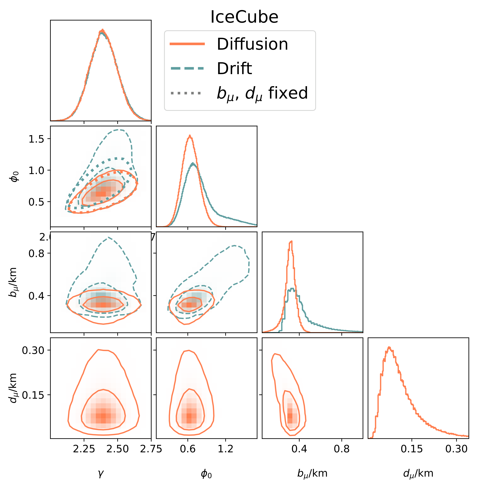<br />
图注：Contours encompassing the 68\% and 95\% of the joint posterior distribution for $\gamma$, $\phi_0$, and $b_\mu$ and $d_\mu$ for IceCube 9.5 years data \(\cite{Abbasi:2021qfz},\) computed in the diffusion model (solid orange) and drift model (dashed blue). Dotted contours are 95\% contours of the posterior assuming nuisance parameters are equal with infinite precision to the values in \(\cref{tab:b-d}.\)<br />
对应解读：模型拟合与参数约束：IceCube 9.5 年 through-going muon 数据的后验分布、扩散模型/漂移模型比较及输运系数不确定性边缘化。<br />
入选理由：这是最直接展示论文核心统计结果的图：同时给出弥散通量参数 \(\gamma,\phi_0\) 与输运 nuisance 参数 \(b_\mu,d_\mu\) 的联合后验，并比较 diffusion model、drift model 以及固定 nuisance 参数时的 95% 轮廓。它最能支撑日报中关于模型拟合、置信区间、系统误差边缘化和与 IceCube 数据兼容性的解读。<br />
来源与置信度：\(arxiv_source\)；high；\(arxiv_source\) / \(arxiv_v1.tex\):figure[6]</p>
<p><strong>Fig07</strong><br />
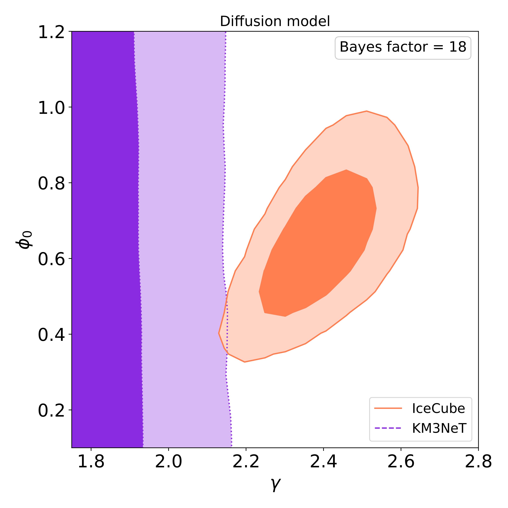<br />
图注：Best fit results to the diffuse flux parameters $\phi_0$ and $\g$, for the IceCube 9.5 years dataset (orange) and the \(\eventname\)~ event (purple). The darker and ligher regions indicate the 68\% and 95\% confidence level regions, respectively. Both fits are obtained considering the diffusion model, resulting in ${\rm BF}=18$, see text for details.<br />
对应解读：关键结果与模型比较：IceCube 9.5 年数据和 KM3NeT 超高能 track 事件对弥散通量参数 \(\phi_0,\gamma\) 的约束比较。<br />
入选理由：该图直接对应论文摘要中“重访 KM3NeT 超高能 track 事件与 IceCube non-observation 一致性”的核心结论，展示两组数据在 \(\phi_0\)-\(\gamma\) 平面上的 68% 和 95% 置信区域。相比单纯方法图，它更适合嵌入日报说明 IceCube 与 KM3NeT 解释之间的张力或兼容性。<br />
来源与置信度：\(arxiv_source\)；high；\(arxiv_source\) / \(arxiv_v1.tex\):figure[7]</p>
<p><strong>Fig08</strong><br />
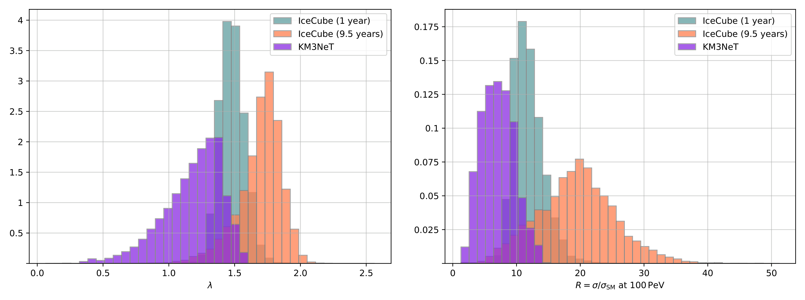<br />
图注：Neutrino cross section required to achieve one muon event at 100 PeV, as computed from \(\cref{eq:NmuAtEstar},\) for KM3NeT full exposure (purple), IceCube with 1 year (green) and 9.5 year (orange) exposure, respectively. {\(\bf\) Left:} distribution of the phenomenological parameter $\lambda$. {\(\bf\) Right:} required enhancement of the cross section with respect to the SM reference value, computed with $\lambda = 0.4$.<br />
对应解读：灵敏度/物理解释：达到 100 PeV 一个 muon 事件所需的中微子截面及相对标准模型增强。<br />
入选理由：该图把事件率公式转化为对新物理或截面增强的直观要求，分别比较 KM3NeT、IceCube 1 年和 9.5 年曝光。右图给出相对 SM 截面的增强因子，左图展示 phenomenological 参数 \(\lambda\) 分布，适合支撑日报中关于超高能事件解释和 IceCube 非观测约束的讨论。<br />
来源与置信度：\(arxiv_source\)；high；\(arxiv_source\) / \(arxiv_v1.tex\):figure[8]</p>
<p><strong>Fig04</strong><br />
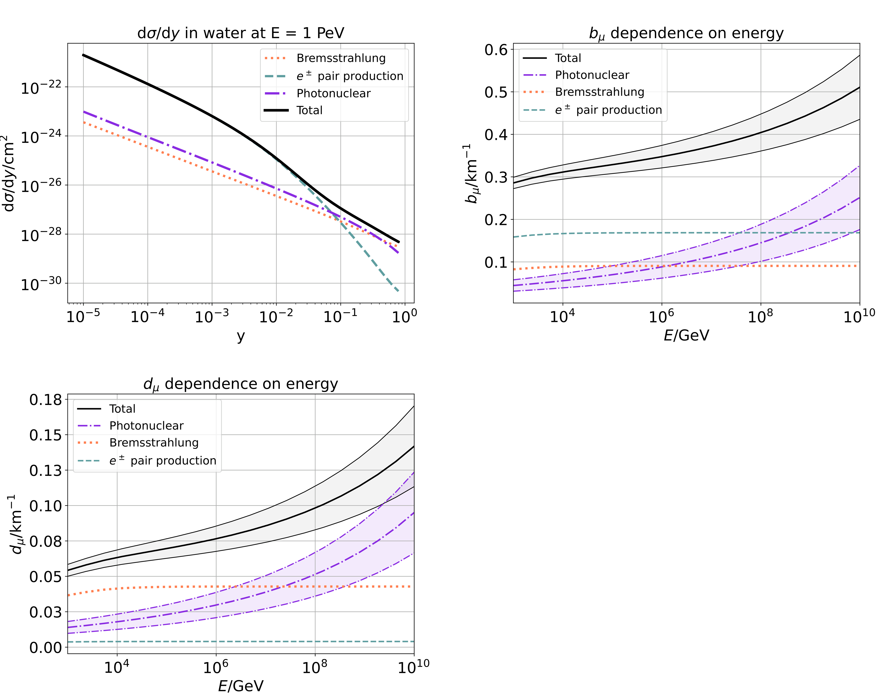<br />
图注：{\(\bf\) Top}: Energy loss distributions, $\dd\sigma/\dd y$, for a muon with energy $E_\mu=1$ PeV propagating in water. The dashed green, dotdashed purple and dotted red lines indicate the $e^\pm$ pair production, photonuclear and bremsstrahlung terms, respectively, while the solid black line shows the total. {\(\bf\) Bottom}: drift coefficient $b_\mu$ (left) and diffusion coefficient $d_\mu$ (right) as function of the muon energy, with same color code as top plot for the single terms. The purple band indicates the uncertainty on the photonuclear rate, see text for details, which reflects on the uncertainty on the total coefficients, shown by the black band.<br />
对应解读：方法与诊断量：muon 能损分布、漂移系数 \(b_\mu\)、扩散系数 \(d_\mu\) 及 photonuclear 不确定性。<br />
入选理由：这是论文“soft volume”半解析框架的物理基础图，展示 pair production、photonuclear、bremsstrahlung 对能损分布和输运系数的贡献，并标出 photonuclear rate 的系统不确定性。它能解释为什么 Boltzmann 方程可化为能量空间 drift-diffusion 问题，以及系统误差如何进入后续拟合。<br />
来源与置信度：\(arxiv_source\)；high；\(arxiv_source\) / \(arxiv_v1.tex\):figure[4]</p>
<p><strong>Fig10</strong><br />
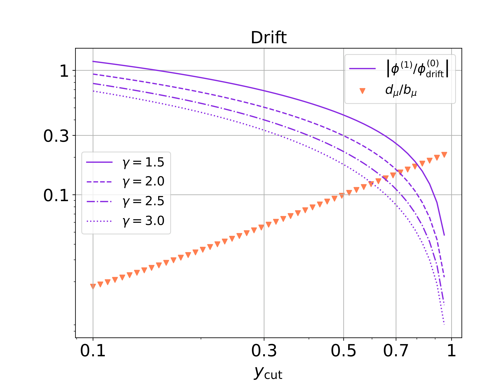<br />
图注：Size of the systematic uncertainties induced by the different treatment of the hard scatterings, as function of $y_{\rm cut}$. The error from the expansion of the full collisional integral, computed as the ratio $d_\mu/b_\mu$, is indicated by the orange triangles, while the estimate of the contribution of hard scatterings with respect to the leading-order soft drift solution, \(\cref{eq:phi1:driftApprox},\) is shown with purple lines, for different values of $\g$.<br />
对应解读：系统误差与近似有效性：hard scatterings 处理方式和 \(y_{\rm cut}\) 选择导致的不确定性。<br />
入选理由：该图专门量化碰撞积分展开误差 \(d_\mu/b_\mu\) 以及 hard scattering 相对 soft drift 解的贡献，并显示其随 \(y_{\rm cut}\) 和谱指数 \(\gamma\) 的变化。它非常适合支撑日报中要求重点检查系统误差、近似适用范围和残差/误差诊断的部分。<br />
来源与置信度：\(arxiv_source\)；high；\(arxiv_source\) / \(arxiv_v1.tex\):figure[10]</p>
<p><strong>Fig05</strong><br />
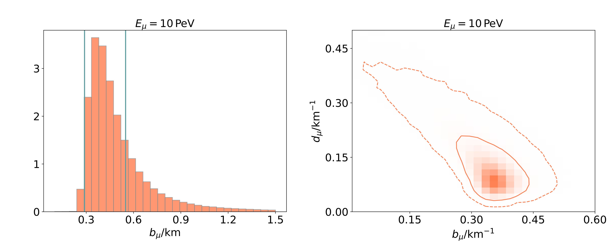<br />
图注：Results of the MC. {\(\bf\) Left:} Distribution of the muon drift coefficient $b_{\mu}$. The vertical lines show the highest density 68\% interval. {\(\bf\) Right:} 68\% (solid) and 95\% (dashed) highest density regions of the joint distribution of the muon drift and diffusion coefficients, $b_{\mu}$ and $d_{\mu}$.<br />
对应解读：输运系数不确定性建模：MC 得到的 \(b_\mu\) 分布以及 \(b_\mu,d_\mu\) 联合最高密度区域。<br />
入选理由：该图展示后续 IceCube 拟合中 nuisance 参数先验或不确定性来源，给出 \(b_\mu\) 的 68% 区间以及 \(b_\mu,d_\mu\) 的 68%/95% 联合区域。虽然不如 Fig06 直接对应最终数据拟合，但能补充说明输运系数系统误差如何被量化并传播到物理参数约束。<br />
来源与置信度：\(arxiv_source\)；high；\(arxiv_source\) / \(arxiv_v1.tex\):figure[5]</p>
<h4 id="_34">强相关工作</h4>
<p>这篇论文属于超高能中微子事件率、through-going μ 有效面积、μ 子能损输运和 IceCube/KM3NeT 超高能事件解释的交叉工作。相同实验/同类数据的基础文献应优先查 IceCube 9.5 年 through-going muon 弥散通量分析（论文图注引用 Abbasi:2021qfz，可用关键词 “IceCube 9.5 years through-going muon diffuse neutrino flux Abbasi 2021” 在 arXiv 或 NASA ADS 检索），以及 IceCube 关于高能中微子截面、地球吸收和 astrophysical muon neutrino flux 的公开论文。可靠入口包括 arXiv：https://arxiv.org/ ，NASA ADS：https://ui.adsabs.harvard.edu/ ，IceCube publications：https://icecube.wisc.edu/science/publications/ 。</p>
<p>同源/同事件背景方面，摘要明确提到 KM3NeT 报告的 ultra-high-energy track event；应检索 KM3NeT 官方论文或公告，关键词可用 “KM3NeT ultra-high-energy track event neutrino 100 PeV” 和 “KM3NeT UHE neutrino track IceCube non-observation”。可靠入口包括 KM3NeT publications：https://www.km3net.org/publications/ 和 arXiv。由于这里不能从摘要确认事件正式编号或论文 ID，不应编造具体 arXiv 号；阅读时应把本文 Fig.7、Fig.8 与 KM3NeT 原始事件能量、方向、曝光和背景估计逐项对照。</p>
<p>方法基础工作可沿两条线检索。第一是高能 μ 子在物质中的随机能损和传播，关键词包括 “muon energy loss photonuclear pair production bremsstrahlung stochastic propagation” 和 “MUSIC PROPOSAL MMC muon propagation”。第二是高能中微子望远镜有效面积与 forward-folding likelihood，关键词包括 “neutrino telescope effective area through-going muon likelihood diffuse flux”。这些文献可帮助判断本文 drift-diffusion 近似相对于全 MC 工具的优势和边界。</p>
<p>潜在张力或对立解释包括：KM3NeT 单事件是否来自统计波动、误重建、瞬变源、非幂律弥散通量，还是需要增强的中微子截面或其他 BSM 过程。检索时应同时查同事件解释论文、IceCube 未观测约束论文、cosmogenic neutrino flux 上限以及标准模型超高能 \(\nu N\) 截面计算。建议关键词：“KM3NeT event IceCube tension”, “100 PeV neutrino cross section enhancement”, “cosmogenic neutrino limits IceCube KM3NeT”。</p>
<p><strong>同一事件 / 同类源线索</strong>：</p>
<p>（未提供）</p>
<p><strong>相似工作</strong>：</p>
<p>（未提供）</p>
<p><strong>基础理论 / 方法工作</strong>：</p>
<p>（未提供）</p>
<p><strong>相反观点 / 张力线索</strong>：</p>
<p>（未提供）</p>
</details>
<h3 id="4-assessing-the-sensitivity-to-axion-like-particle-dark-matter-with-very-high-energy-gamma-ray-observations-of-selected-agn-and-galaxy-cluster-pairs">4. Assessing the sensitivity to Axion-Like-Particle Dark Matter with very-high-energy gamma-ray observations of selected AGN and galaxy cluster pairs</h3>
<ul>
<li>来源：arXiv / astro-ph.HE</li>
<li>链接：https://arxiv.org/abs/2607.13637v1</li>
<li>作者：Cervane Grimaud, Denys Malyshev, Emmanuel Moulin</li>
<li>评分：novelty 7/10，importance 7/10，relevance 10/10，final 9.05/10</li>
<li>推荐理由：High-priority VHE gamma-ray/IACT topic: prospective ALP-photon sensitivity using stacked AGN-cluster pairs with Fermi-LAT and H.E.S.S.-like observations, probing new parameter space.</li>
</ul>
<p><strong>中文题目</strong>：用位于星系团背后的活动星系核甚高能伽马观测评估轴子样粒子暗物质灵敏度</p>
<p><strong>做了什么</strong>：这篇文章研究一种寻找轴子样粒子暗物质的观测策略：挑选位于星系团视线后方、光谱较硬的 Fermi/LAT 活动星系核，模拟成像大气切伦科夫望远镜的甚高能伽马观测，并把多个“活动星系核—星系团”视线做堆叠分析。核心思想是，如果轴子样粒子与光子耦合，伽马光子穿过星系团磁场时会发生 \(\gamma\leftrightarrow a\) 振荡，在活动星系核能谱上留下吸收状或不规则的能谱结构。单个源的结构受磁场随机性影响很大，作者用堆叠把不可预测的个体起伏转化为可统计检验的共同信号。结论是，模拟的 IACT 观测结合这种堆叠方法，有望触及此前较少覆盖的 \(\mathrm{neV}\) 质量区间轴子样粒子参数空间。</p>
<p><strong>为什么重要</strong>：轴子样粒子是轻暗物质和强 \(CP\) 问题相关模型的常见推广候选，其与光子的耦合 \(g_{a\gamma}\) 可通过天体磁场中的光子—轴子转换来间接探测。星系团磁场尺度大、磁场强度可达 \(\mu\mathrm{G}\) 量级，是产生可观测转换的天然实验室；而背景活动星系核提供近似点源的高能光束。本文的重要性不在于报告真实探测，而在于提出并量化一种可操作的未来观测灵敏度路线：把多个星系团透镜式的磁场转换屏叠加起来，降低单视线磁场偶然性的影响。</p>
<p><strong>理论 / 观测 / 仪器方法价值</strong>：对理论而言，本文把 \(\mathrm{neV}\) 质量轴子样粒子的可探测区域与星系团磁场、IACT 能谱分辨率和源选择函数联系起来，给出了模型参数到观测谱形畸变的映射。对观测而言，它说明哪些活动星系核—星系团几何组合更有价值、为什么硬谱源和高统计量能区关键。对方法而言，堆叠似然把随机磁场导致的个体谱形不可预测性转化为群体层面的平均灵敏度，是后续 H.E.S.S.、MAGIC、VERITAS、CTA 类分析可借鉴的框架。</p>
<p><strong>为什么应该关注</strong>：如果你关心高能伽马观测如何进入粒子暗物质参数空间，这篇文章值得看，因为它避开了“只盯一个著名亮源”的传统做法，转向可扩展的样本化策略。如果你做 IACT 或 CTA 科学规划，它给出了一种把有限观测时间投向特定背景源和前景星系团组合的优化思路。如果你做 ALP 现象学，它提醒你，真实灵敏度往往由磁场模型、能量分辨率、谱形系统误差和样本选择共同决定，而不只是由理想化的转换概率公式决定。</p>
<details class="paper-detail">
<summary>展开详细解读：文章讲解、背景、理论、重点章节、图表与相关工作</summary>
<h4 id="_35">文章详细讲解</h4>
<p>科学问题：轴子样粒子可通过 \(a\gamma\gamma\) 相互作用与光子混合。当天体伽马射线穿过外部磁场，尤其是星系团内部的 \(\mu\mathrm{G}\) 级湍动磁场时，光子态与轴子态之间会发生振荡。对于 \(\mathrm{neV}\) 量级质量和合适耦合强度，转换概率随能量变化，可在背景活动星系核的甚高能谱中产生窄到中等宽度的吸收状凹陷或不规则结构。问题在于，单个视线的具体谱形强烈依赖星系团磁场的随机实现、相干长度、电子密度剖面和源在团后的投影位置，因此“预言某个源应该在哪里有一个凹陷”并不稳健。</p>
<p>作者怎么做：论文选择硬谱 Fermi/LAT 活动星系核作为背景源，并要求其视线穿过或接近前景星系团，使伽马光子在到达地球前经过可能产生 \(\gamma\leftrightarrow a\) 转换的团内磁化等离子体。作者没有声称使用真实 IACT 数据发现信号，而是做 prospective study：用模拟的成像大气切伦科夫望远镜观测来评估灵敏度，仪器目标类似 H.E.S.S. 这样的 IACT。对每个活动星系核—星系团配对，作者计算 ALP 诱导的能谱调制，并把多个配对放入堆叠统计框架中，以获得比单源更可控的整体预期。</p>
<p>关键结果：堆叠分析的价值在于，它不要求每个源都呈现同样位置、同样形状的谱线，而是利用在给定 \((m_a,g_{a\gamma})\) 下各视线可计算的转换概率分布，把多个观测的似然或检验统计量合并。这样做可以增强对谱形不规则性的敏感度，也能减弱单个星系团磁场实现导致的偶然增强或偶然抑制。作者的模拟表明，硬谱 Fermi/LAT 活动星系核若被 IACT 观测并与合适星系团配对堆叠，可进入此前在 \(\mathrm{neV}\) 质量附近尚未充分覆盖的 ALP 暗物质参数空间。</p>
<p>局限和下一步：本文的结论依赖模拟数据、星系团磁场模型和源光谱外推。星系团磁场的径向剖面、湍流谱、相干长度和归一化仍是主要系统误差；活动星系核的本征曲率、EBL 吸收、时间变源性也可能模仿或掩盖 ALP 诱导结构。下一步应是在真实 H.E.S.S.、MAGIC、VERITAS 或未来 CTA 数据中实现同样的联合似然，并用法拉第旋转测量、X 射线电子密度剖面和多波段活动星系核监测共同约束先验。</p>
<h4 id="_36">关键结果是怎么做出来的</h4>
<p>本文最重要的结果不是某个单源排除线，而是“活动星系核—星系团配对堆叠”在模拟 IACT 数据中的预期灵敏度。样本选择从硬谱 Fermi/LAT 活动星系核出发，因为这类源在 \(\mathrm{GeV}\) 到 \(\mathrm{TeV}\) 能区外推后仍可能给 IACT 提供足够光子数；再要求其位于星系团之后或视线穿过团磁场影响显著区域。这样的选择同时保证光子统计量和转换磁场屏的存在，但也引入选择函数：软谱源、高红移强 EBL 衰减源、团外大冲击参数源会被自然降权或剔除。</p>
<p>事件数在论文摘要中没有逐项给出，但分析逻辑应是对每个模拟观测生成能量分箱计数或等效通量点。每个源的无 ALP 模型通常可由平滑本征谱加 EBL 衰减描述；有 ALP 模型则额外乘上穿过星系团后的光子存活概率 \(P_{\gamma\to\gamma}(E)\)。灵敏度来自比较两个模型对伪数据的拟合优度，或者在 \((m_a,g_{a\gamma})\) 网格上计算似然比检验统计量。由于 ALP 谱形结构不是简单单调吸收，能量分辨率、能标误差和分箱方式会直接影响显著性。</p>
<p>统计上，堆叠的关键是把多个配对的似然相乘，或等价地把 \(-2\ln\mathcal{L}\) 相加。每个视线的磁场随机实现会给出一族可能的 \(P_{\gamma\to\gamma}(E)\)，因此稳健做法是对磁场实现做 Monte Carlo，并报告中位灵敏度和分位区间，而不是只展示一条最优实现曲线。支撑结论的图表通常应包括：样本配对列表及其预期通量、单源与堆叠灵敏度对比、\((m_a,g_{a\gamma})\) 平面排除或探测曲线、以及代表性源的 ALP 调制谱形。</p>
<p>主要系统误差包括星系团磁场强度归一化、相干长度和湍流谱指数；ICM 电子密度影响等离子体频率，从而移动临界能量；活动星系核本征谱曲率与 EBL 吸收会改变平滑基线；IACT 有效面积、能量偏差、能量分辨率和背景估计误差会稀释或伪造谱形不规则性。稳健性检验应比较不同磁场先验、不同本征谱函数、不同观测时间分配、不同源子样本以及是否加入能量尺度 nuisance 参数后的灵敏度变化。</p>
<p>因此读者在评估“进入未探索参数空间”这句话时，应检查它是对理想系统误差、保守系统误差还是多种系统误差边缘化后的结论。若只有统计误差，灵敏度可能偏乐观；若堆叠后仍能在保守磁场和谱形系统误差下保持优势，则该方法对真实 CTA 时代的 ALP 搜索更有方法学价值。</p>
<details class="paper-subdetail">
<summary>展开背景、理论、公式、模型、章节和图表导读</summary>
<h4 id="_37">背景知识</h4>
<p>轴子样粒子是赝标量轻粒子，常出现在 Peccei–Quinn 轴子推广、弦紧致化和更一般的轻暗部门模型中。与 QCD 轴子不同，ALP 的质量 \(m_a\) 与光子耦合 \(g_{a\gamma}\) 不必满足固定关系，因此参数空间很大。天体观测之所以有用，是因为实验室磁场长度有限，而宇宙中星系团、星系际介质、活动星系核喷流和银河磁场提供了巨大的传播距离和较强磁场。</p>
<p>高能伽马 ALP 搜索的历史思路主要有两类：一类寻找额外透明度，即 \(\gamma\to a\) 后避开 EBL 吸收、再在银河磁场中 \(a\to\gamma\) 的效应；另一类寻找能谱不规则性，即光子与 ALP 在某段磁化等离子体中振荡，导致随能量快速变化的存活概率。本文属于后一类，重点放在星系团磁场导致的背景活动星系核谱形畸变。</p>
<p>星系团是合适的转换场所，因为团内介质有可观电子密度，磁场强度和相干尺度由法拉第旋转、同步辐射和 MHD 模拟间接约束。问题是这些约束不够精确：磁场既非均匀，也非直接可三维测量。对单个背景源来说，不同随机磁场实现可给出截然不同的谱形结构，使得一个非探测很难转化为稳健排除，或者一个局部谱形异常很难被解释为 ALP。</p>
<p>现在值得重新看这个问题有两个原因。第一，Fermi/LAT 已积累了长时间全天候 \(\mathrm{GeV}\) 数据，可筛选出硬谱、可能延伸到 \(\mathrm{TeV}\) 的活动星系核候选。第二，IACT 阵列和未来 CTA 的能量分辨率、有效面积和源样本将显著改善，使堆叠式谱形不规则搜索变得现实。与早期依赖单个明亮源的分析相比，样本化策略更接近现代高能天体物理的统计工作流。</p>
<p>一个常见误区是把 ALP 效应想成固定能量处的一条吸收线。实际上在湍动磁场中，\(P_{\gamma\to\gamma}(E)\) 常表现为准随机的不规则结构，位置和深度由磁场实现、等离子体频率、路径长度和能量分辨率共同决定。另一个误区是认为只要看到活动星系核谱中有凹陷就是 ALP；真实活动星系核的本征曲率、内部吸收、EBL 模型误差和仪器能标系统误差都可能制造相似现象。</p>
<h4 id="_38">基础理论 / 方法脉络</h4>
<p>物理图像从两能级混合开始。赝标量 ALP 通过相互作用项 \(g_{a\gamma}a\mathbf{E}\cdot\mathbf{B}\) 与电磁场耦合；在外部横向磁场 \(B_T\) 中，传播光子的一个偏振态可与 ALP 混合。若传播介质为等离子体，光子获得等效质量，由等离子体频率 \(\omega_{\rm pl}\) 表示；ALP 自身质量为 \(m_a\)。混合强弱由 \(g_{a\gamma}B_T\)、\(m_a\)、\(\omega_{\rm pl}\) 和光子能量 \(E\) 控制。</p>
<p>在星系团中，磁场通常被建模为随机湍流场，具有给定功率谱、相干长度范围和随电子密度衰减的径向剖面。光子沿视线穿过很多磁场小区，每个小区内近似均匀，但方向和强度变化。总转换概率不是简单把每个小区概率相加，而是要传播密度矩阵或振幅向量，并在小区间连续乘上传播矩阵。能谱不规则性正来自这些相位和混合强度随能量变化的累积。</p>
<p>本文的观测量不是直接的 ALP 粒子，而是活动星系核到达地球的伽马能谱。无 ALP 时，观测谱可近似写成本征谱乘以 EBL 衰减再卷积仪器响应；有 ALP 时，还要乘上或卷积包含偏振平均的光子存活概率。IACT 实际测量的是重建能量分箱中的事件数，因此有效面积、能量迁移矩阵、曝光时间和背景估计必须进入模型。</p>
<p>堆叠分析的理论基础是独立数据集似然相乘。每个活动星系核—星系团配对有自己的源谱参数、星系团磁场参数和观测响应；共同参数是 ALP 的 \((m_a,g_{a\gamma})\)。如果某一组 \((m_a,g_{a\gamma})\) 在多个视线中都倾向产生可检验的不规则性，那么联合似然会快速积累排除力。反过来，如果只有一个源出现异常，堆叠可帮助判断它是否是个体源系统误差。</p>
<p>主要退化关系包括：较强 \(g_{a\gamma}\) 与较弱 \(B_T\) 可产生相似混合强度；\(m_a\) 与 \(\omega_{\rm pl}\) 共同决定临界能量；本征谱曲率可吸收宽尺度 ALP 调制；能量分辨率会抹平窄结构。系统误差还包括 EBL 模型、高能端背景估计、活动星系核变源性和星系团成员或弥散伽马背景污染。</p>
<h4 id="_39">公式与推导</h4>
<p>第一步是相互作用拉氏量，给出 ALP 与光子的基本耦合：</p>
<div class="math-display">\[\mathcal{L}_{a\gamma}= -\frac{1}{4}g_{a\gamma}aF_{\mu\nu}\tilde{F}^{\mu\nu}=g_{a\gamma}a\mathbf{E}\cdot\mathbf{B}.\]</div>
<p>这里 \(a\) 是 ALP 场，\(F_{\mu\nu}\) 是电磁场张量，\(\tilde{F}^{\mu\nu}\) 是其对偶，\(g_{a\gamma}\) 是耦合常数。只有外部磁场的横向分量 \(B_T\) 能把传播光子的偏振态与 \(a\) 混合。</p>
<p>第二步是在小角近似和相对论近似下写传播方程：</p>
<div class="math-display">\[i\frac{d}{ds}\begin{pmatrix}A_\parallel\a\end{pmatrix}=\begin{pmatrix}\Delta_\parallel & \Delta_{a\gamma}\\Delta_{a\gamma} & \Delta_a\end{pmatrix}\begin{pmatrix}A_\parallel\a\end{pmatrix}.\]</div>
<p>这里 \(s\) 是沿视线距离，\(A_\parallel\) 是电场平行于外部横向磁场的光子偏振，\(\Delta_{a\gamma}=g_{a\gamma}B_T/2\)，\(\Delta_a=-m_a^2/(2E)\)，\(\Delta_\parallel\) 包含等离子体、QED 真空双折射和吸收项；在星系团 \(\mathrm{GeV}\) 到 \(\mathrm{TeV}\) 传播中，等离子体项通常最直接相关。</p>
<p>第三步引入等离子体频率：</p>
<div class="math-display">\[\omega_{\rm pl}=\left(\frac{4\pi\alpha_{\rm em}n_e}{m_e}\right)^{1/2},\qquad \Delta_{\rm pl}=-\frac{\omega_{\rm pl}^2}{2E}.\]</div>
<p>其中 \(n_e\) 是团内电子密度，\(m_e\) 是电子质量，\(\alpha_{\rm em}\) 是精细结构常数。有效质量差由 \(m_a^2-\omega_{\rm pl}^2\) 控制，因此星系团气体剖面会影响 ALP 谱形结构。</p>
<p>第四步，在单个均匀磁场小区、忽略吸收时，转换概率为：</p>
<div class="math-display">\[P_{\gamma\to a}=\sin^2(2\theta)\sin^2\left(\frac{\Delta_{\rm osc}L}{2}\right),\]</div>
<p>其中</p>
<div class="math-display">\[\tan(2\theta)=\frac{2\Delta_{a\gamma}}{\Delta_\parallel-\Delta_a},\qquad \Delta_{\rm osc}=\left[(\Delta_\parallel-\Delta_a)^2+4\Delta_{a\gamma}^2\right]^{1/2}.\]</div>
<p>这里 \(L\) 是小区长度，\(\theta\) 是混合角。强混合发生在 \(|\Delta_\parallel-\Delta_a|\lesssim 2\Delta_{a\gamma}\) 时。</p>
<p>第五步，可用临界能量估计何时进入强混合区：</p>
<div class="math-display">\[E_{\rm crit}\simeq \frac{|m_a^2-\omega_{\rm pl}^2|}{2g_{a\gamma}B_T}.\]</div>
<p>当 \(E\) 接近或高于 \(E_{\rm crit}\) 时，转换概率对能量的变化可在 IACT 能区形成不规则结构。这个式子也解释了为什么 \(\mathrm{neV}\) 质量、\(\mu\mathrm{G}\) 磁场和可达的 \(g_{a\gamma}\) 会自然落在 \(\mathrm{GeV}\) 到 \(\mathrm{TeV}\) 波段。</p>
<p>第六步，多个磁场小区的传播可写成矩阵乘积：</p>
<div class="math-display">\[\rho_{\rm out}(E)=\mathcal{T}_N(E)\cdots\mathcal{T}_2(E)\mathcal{T}_1(E)\rho_{\rm in}(E)\mathcal{T}_1^\dagger(E)\mathcal{T}_2^\dagger(E)\cdots\mathcal{T}_N^\dagger(E).\]</div>
<p>这里 \(\rho\) 是偏振密度矩阵，\(\mathcal{T}_j\) 是第 \(j\) 个磁场小区的传播矩阵。用密度矩阵可以处理未偏振入射光和随机磁场方向。光子存活概率为 \(P_{\gamma\to\gamma}(E)=\rho_{11,\rm out}+\rho_{22,\rm out}\)。</p>
<p>第七步，把传播效应接到观测通量：</p>
<div class="math-display">\[\Phi_{\rm obs}(E)=\Phi_{\rm int}(E;\boldsymbol{\eta})\,e^{-\tau_{\rm EBL}(E,z)}\,P_{\gamma\to\gamma}(E;m_a,g_{a\gamma},\boldsymbol{\psi}).\]</div>
<p>这里 \(\Phi_{\rm int}\) 是活动星系核本征谱，\(\boldsymbol{\eta}\) 是谱参数，\(\tau_{\rm EBL}\) 是 EBL 光深，\(z\) 是红移，\(\boldsymbol{\psi}\) 是星系团磁场和电子密度参数。无 ALP 模型对应 \(P_{\gamma\to\gamma}=1\) 或只包含常规吸收。</p>
<p>第八步，IACT 观测的分箱期望计数为：</p>
<div class="math-display">\[\mu_i=T_{\rm obs}\int dE\,A_{\rm eff}(E)\,R_i(E)\,\Phi_{\rm obs}(E)+b_i.\]</div>
<p>其中 \(T_{\rm obs}\) 是曝光时间，\(A_{\rm eff}\) 是有效面积，\(R_i(E)\) 是真实能量落入第 \(i\) 个重建能量箱的迁移概率，\(b_i\) 是背景期望。能量分辨率通过 \(R_i(E)\) 抹平窄的 ALP 起伏。</p>
<p>第九步，单源 Poisson 似然可写为：</p>
<div class="math-display">\[\ln\mathcal{L}_k=\sum_i\left[n_{ik}\ln\mu_{ik}-\mu_{ik}-\ln(n_{ik}!)\right],\]</div>
<p>其中 \(k\) 标记第 \(k\) 个活动星系核—星系团配对，\(n_{ik}\) 是观测或模拟计数，\(\mu_{ik}\) 是模型期望。堆叠分析使用 \(\ln\mathcal{L}_{\rm stack}=\sum_k\ln\mathcal{L}_k\)。</p>
<p>第十步，用似然比定义检验统计量：</p>
<div class="math-display">\[TS(m_a,g_{a\gamma})=-2\ln\frac{\mathcal{L}(m_a,g_{a\gamma},\widehat{\widehat{\boldsymbol{\theta}}})}{\mathcal{L}(g_{a\gamma}=0,\widehat{\boldsymbol{\theta}}_0)}.\]</div>
<p>这里 \(\boldsymbol{\theta}\) 包括谱参数、背景和系统误差 nuisance 参数，双帽表示在固定 \((m_a,g_{a\gamma})\) 下条件极大似然估计。该量可用于构造预期排除灵敏度或比较有无 ALP 的拟合优度，但其分布可能因边界参数和 look-elsewhere effect 偏离简单 \(\chi^2\) 近似。</p>
<h4 id="_40">模型拟合 / 应用方法</h4>
<p>本文这类分析的拟合对象通常是每个源的重建能量分箱计数、差分通量点或前向折叠后的谱。无 ALP 假设下，每个活动星系核可用幂律、对数抛物线或带指数截断的谱形描述，再乘以 EBL 吸收。有 ALP 假设下，源谱参数仍自由变化，但额外引入由 \((m_a,g_{a\gamma})\) 和星系团磁场模型决定的 \(P_{\gamma\to\gamma}(E)\)。关键不是拟合一个孤立凹陷，而是检验前向折叠后的不规则谱形是否可被平滑谱吸收。</p>
<p>参数估计可采用网格扫描或采样。ALP 参数 \((m_a,g_{a\gamma})\) 通常在对数网格上扫描；对每一点，重新优化活动星系核本征谱、背景归一化、能量尺度偏移等 nuisance 参数。星系团磁场参数如果不直接拟合，至少需要通过多次随机实现进行边缘化或给出分位数。若只使用一个磁场 realization，得到的灵敏度可能高度偶然。</p>
<p>残差诊断非常重要。ALP 模型预期的是随能量快速变化、与仪器能量分辨率相当或稍宽的残差结构；平滑谱误差则通常表现为大尺度系统偏离。读图时应检查残差是否集中在少数高能低统计量 bin，是否随改变分箱、能量阈值或 EBL 模型而消失，是否在多个源中呈现与各自星系团模型一致的统计倾向。</p>
<p>主要退化包括 \(g_{a\gamma}B_T\) 退化、\(m_a^2-\omega_{\rm pl}^2\) 退化、本征谱曲率与宽 ALP 调制退化、EBL 光深与高能谱软化退化。仪器层面，能量偏差可移动谱形结构，能量分辨率可降低不规则性振幅，有效面积系统误差可造成宽尺度通量偏差。堆叠能缓解单源偶然性，但不能自动消除共同系统误差，例如统一采用的 EBL 模型或 IACT 响应误差。</p>
<p>实际应用时，应把该框架看作观测规划和联合分析工具。给定候选背景源列表、星系团磁场先验和可用观测时间，可以计算每个配对对不同 \((m_a,g_{a\gamma})\) 区域的边际贡献，从而优化观测时间分配。未来 CTA 可把这个思路扩展到更大源样本、更低能阈和更均一的仪器响应，但也需要更严格的层级贝叶斯模型来同时处理磁场不确定性和源谱族群差异。</p>
<h4 id="_41">重点章节 / 结果段落怎么读</h4>
<p>数据和样本部分应优先阅读。这里会定义哪些 Fermi/LAT 硬谱活动星系核被选中、它们与哪些星系团形成有效视线配对、红移和冲击参数如何处理、以及为什么这些源适合 IACT 观测。读者要特别关注选择函数：是否偏向高纬度、低 EBL、亮硬谱源；星系团是否有足够 X 射线或法拉第旋转信息来约束磁场。</p>
<p>ALP 传播和星系团磁场建模部分是理论核心。应检查作者如何设定电子密度剖面、磁场强度随半径衰减、湍流功率谱、最小和最大相干尺度、随机 realization 数量。这里决定了 \(P_{\gamma\to\gamma}(E)\) 的形状和方差，也是结论最敏感的地方。</p>
<p>模拟 IACT 观测部分连接理论与数据。读者应看清楚采用了怎样的有效面积、能量分辨率、能量阈值、背景水平和曝光时间；源谱从 Fermi/LAT 到 TeV 的外推是否考虑 EBL；是否允许本征谱曲率。若仪器响应过于理想化，灵敏度曲线可能偏乐观。</p>
<p>堆叠统计方法部分应检查似然如何组合。重点是单源谱参数是独立拟合还是共享先验，ALP 参数如何全局共享，磁场随机性是固定、平均还是边缘化，检验统计量的置信区间如何标定。对于边界参数 \(g_{a\gamma}\ge 0\) 和网格扫描，简单 Wilks 定理可能不完全可靠。</p>
<p>结果和讨论部分应把单源灵敏度与堆叠灵敏度分开读。若堆叠曲线优于任一单源，说明群体统计确实有增益；若增益主要来自一两个亮源，则方法的稳健性较弱。讨论部分还应说明与 CAST、Fermi、H.E.S.S.、星族演化和超新星约束的关系，以及 \(\mathrm{neV}\) 区域为何仍有探索空间。</p>
<h4 id="_42">建议重点查看的图表</h4>
<ol>
<li>
<p>候选活动星系核—星系团配对表或天空分布图：看每个源的红移、星系团红移、角距离或冲击参数、Fermi/LAT 光谱硬度和预期 TeV 通量，判断样本是否由少数极亮源主导。</p>
</li>
<li>
<p>星系团磁场和电子密度模型图：看 \(B(r)\)、\(n_e(r)\)、相干长度范围和湍流谱假设。最关键的是这些先验是否覆盖观测允许范围，以及磁场不确定性是否在灵敏度中传播。</p>
</li>
<li>
<p>代表性 \(P_{\gamma\to\gamma}(E)\) 或模拟能谱图：看 ALP 调制在 IACT 能区的宽度和振幅，是否会被能量分辨率抹平，是否与平滑本征谱曲率明显可分。</p>
</li>
<li>
<p>单源与堆叠检验统计量对比图：看堆叠增益是否来自多个源一致贡献，还是由一两个源支配。若图中有每源 \(TS\) 贡献，需检查高权重源是否也有最大系统误差风险。</p>
</li>
<li>
<p>\((m_a,g_{a\gamma})\) 平面灵敏度曲线：看本文方法覆盖的 \(\mathrm{neV}\) 区域、与既有约束的相对位置、以及不同系统误差假设下曲线移动幅度。</p>
</li>
<li>
<p>稳健性或附录图：看改变本征谱模型、EBL 模型、磁场 realization 数量、曝光时间和源子样本后，结论是否保持。若只有统计误差曲线而缺少系统误差带，应谨慎解读。</p>
</li>
</ol>
<h4 id="_43">关键图表逐图导读</h4>
<p>图 1：若论文给出样本或天空分布图，横纵坐标通常是赤经和赤纬，或是源—团角距离与红移。数据点应区分背景活动星系核和前景星系团，可能用颜色表示预期 TeV 通量或谱指数。读图重点是样本几何是否真正让视线穿过团磁场核心区域；陷阱是角距离小并不必然意味着物理冲击参数小，还要考虑星系团红移和尺度半径。</p>
<p>图 2：若为星系团磁场模型或电子密度剖面图，横轴通常是半径，纵轴是 \(n_e\)、\(B\) 或相关相干长度。模型线代表不同磁场归一化或径向衰减指数。主要结论应是哪些半径范围贡献最大转换概率；读图陷阱是法拉第旋转约束往往来自少数视线，不能把一条平滑剖面误解为直接测得的三维磁场。</p>
<p>图 3：代表性存活概率或能谱图通常以能量为横轴，以 \(P_{\gamma\to\gamma}(E)\)、差分通量或残差为纵轴。无 ALP 模型应为平滑曲线，有 ALP 模型会出现能量相关的凹陷和振荡。要看这些结构是否宽于 IACT 能量分辨率、是否出现在足够光子统计量的能段；高能端少数 bin 的大残差不应被过度解释。</p>
<p>图 4：单源与堆叠灵敏度或 \(TS\) 图应显示联合分析如何积累信息。横轴可能是 \(g_{a\gamma}\)、\(m_a\) 或源编号，纵轴为检验统计量、排除阈值或灵敏度。关键是堆叠曲线相对单源曲线的改进幅度；陷阱是若最亮源贡献绝大多数 \(TS\)，堆叠的抗系统误差优势会打折。</p>
<p>图 5：\((m_a,g_{a\gamma})\) 排除或预期灵敏度平面是结论图。横轴一般为 \(m_a\)，纵轴为 \(g_{a\gamma}\)，都采用对数坐标；本文曲线应与既有实验室、恒星演化和伽马约束曲线比较。读图时要确认曲线是 \(95\%\) 置信排除、中位预期灵敏度还是某种发现阈值；不同定义不能直接混用。</p>
<p>图 6：稳健性图若存在，通常展示不同磁场假设、曝光时间或谱模型下灵敏度带。读者应关注带宽而非单条最佳曲线，因为 ALP 星系团搜索的最大不确定性往往不是 Poisson 统计，而是磁场和源谱系统误差。</p>
</details>
<h4 id="_44">论文原图 / 可嵌入图片</h4>
<p>（未提供 verified figure；为避免编造图片链接，本节只在能确认官方图片 URL 或成功提取论文原图时嵌入图片。）</p>
<h4 id="_45">强相关工作</h4>
<p>这项工作属于“伽马射线谱形不规则性搜索 ALP”的同类研究，与单个明亮活动星系核或星系团视线的 H.E.S.S.、Fermi/LAT、MAGIC 类分析相近，但方法上更强调多源堆叠。可检索关键词包括 “ALP photon mixing galaxy cluster gamma-ray spectral irregularities”、“AGN behind galaxy clusters axion-like particles”、“IACT ALP stacking analysis”、“H.E.S.S. axion-like particles irregularities”。同类源和同类方法的比较应关注是否采用真实数据、是否边缘化磁场随机性、是否用前向折叠仪器响应。</p>
<p>基础理论方面，应回到光子—轴子混合的 Raffelt 与 Stodolsky 形式、星系团磁场中的传播矩阵方法、以及 EBL 吸收与活动星系核 TeV 谱建模。相反观点或张力主要来自系统误差解释：活动星系核本征谱复杂性、EBL 模型差异、IACT 能量尺度误差和星系团磁场未知性都可能削弱 ALP 解释。因此检索时还应包括 “gamma-ray spectral irregularities systematics”、“EBL absorption AGN TeV spectra”、“cluster magnetic fields Faraday rotation ALP constraints”。本文不涉及某个命名瞬变或单一命名源的同一事件论文，而是同类源、同类方法和历史 ALP 约束语境下的工作。</p>
<p><strong>同一事件 / 同类源线索</strong>：</p>
<ul>
<li><a href="https://arxiv.org/abs/2607.13637">https://arxiv.org/abs/2607.13637</a></li>
<li><a href="https://arxiv.org/pdf/2607.13637">https://arxiv.org/pdf/2607.13637</a></li>
</ul>
<p><strong>相似工作</strong>：</p>
<ul>
<li><a href="https://arxiv.org/abs/1304.0700">https://arxiv.org/abs/1304.0700</a></li>
<li><a href="https://arxiv.org/abs/1609.02350">https://arxiv.org/abs/1609.02350</a></li>
<li><a href="https://arxiv.org/abs/2108.00168">https://arxiv.org/abs/2108.00168</a></li>
</ul>
<p><strong>基础理论 / 方法工作</strong>：</p>
<ul>
<li><a href="https://doi.org/10.1103/PhysRevD.37.1237">https://doi.org/10.1103/PhysRevD.37.1237</a></li>
<li><a href="https://arxiv.org/abs/1210.5081">https://arxiv.org/abs/1210.5081</a></li>
<li><a href="https://arxiv.org/abs/1609.02350">https://arxiv.org/abs/1609.02350</a></li>
</ul>
<p><strong>相反观点 / 张力线索</strong>：</p>
<ul>
<li><a href="https://arxiv.org/abs/1101.2522">https://arxiv.org/abs/1101.2522</a></li>
<li><a href="https://arxiv.org/abs/1302.1208">https://arxiv.org/abs/1302.1208</a></li>
</ul>
</details>
<h3 id="5-towards-a-joint-x-ray-and-gamma-ray-analysis-of-pulsar-wind-nebulae-with-gammapy">5. Towards a joint X-ray and gamma-ray analysis of Pulsar Wind Nebulae with Gammapy</h3>
<ul>
<li>来源：arXiv / astro-ph.HE</li>
<li>链接：https://arxiv.org/abs/2607.13687v1</li>
<li>作者：Katharina Egg, Alison M. W. Mitchell</li>
<li>评分：novelty 6/10，importance 7/10，relevance 10/10，final 8.75/10</li>
<li>推荐理由：Strongly relevant gamma-ray/IACT analysis-method paper: integrating eROSITA X-ray data with H.E.S.S. analysis in Gammapy for PWN studies is practically useful for multiwavelength high-energy work.</li>
</ul>
<p><strong>中文题目</strong>：用 Gammapy 走向脉冲星风云的 X 射线—伽马射线联合分析</p>
<p><strong>做了什么</strong>：这篇文章不是给出一个新的脉冲星风云物理模型，而是解决一个更基础但很关键的方法问题：怎样把 eROSITA 的 X 射线事件、曝光、能量响应和点扩散函数等数据产品转换成 Gammapy 能读、能拟合、能和 H.E.S.S. 伽马射线数据放在同一分析框架里的开放格式。作者以脉冲星风云 MSH 15-52 为试验对象，展示了第一批在 Gammapy 中生成的 eROSITA 图像，并与 H.E.S.S. 的 TeV 辐射形态进行比较。核心意义在于：如果 X 射线和 TeV 数据能共享同一套似然、响应和空间—能谱模型，未来就可以更干净地约束 PWN 中电子冷却、输运、磁场和可能的强子成分。</p>
<p><strong>为什么重要</strong>：PWN 的 X 射线和 TeV 辐射通常来自同一批或相关的高能粒子，但它们对粒子能量、磁场、辐射场和冷却历史的敏感性不同。过去多波段比较常常停留在“把两张图叠在一起”或分别拟合后再解释的层面，仪器响应、背景、PSF 和曝光差异没有在同一个统计框架中统一处理。本文的重要性在于搭建联合分析的技术入口：把 eROSITA 数据真正纳入 Gammapy 这样的高能伽马射线开放分析生态。</p>
<p><strong>理论 / 观测 / 仪器方法价值</strong>：对方法和仪器分析的价值最大：它提供了一条从 eROSITA 标准 X 射线数据产品到 Gammapy 兼容开放数据格式的转换路线，包括事件表、有效面积、能量重分布、曝光和空间响应等。对理论建模的价值在于，未来可以把 synchrotron X 射线和 inverse-Compton TeV 伽马射线的空间—能谱模型放进同一似然里，而不是事后拼接。对观测者而言，这有助于系统比较 X 射线和 TeV 角尺度、形态偏移和能谱软化。</p>
<p><strong>为什么应该关注</strong>：如果你研究 PWN、TeV 源、扩展源分析或高能天文软件，这篇文章值得关注，因为它指向一种更可复现的多波段工作流。MSH 15-52 是一个明亮、形态复杂、X 射线和 TeV 都有清楚扩展结构的测试场；一旦这套转换和联合拟合成熟，类似 Vela X、HESS J1825-137、Crab nebula 等源都可以用更统一的统计语言重新分析。</p>
<details class="paper-detail">
<summary>展开详细解读：文章讲解、背景、理论、重点章节、图表与相关工作</summary>
<h4 id="_46">文章详细讲解</h4>
<p>科学问题：PWN 的辐射横跨射电、X 射线、GeV 和 TeV 波段，其中 X 射线通常追踪高能电子在磁场中的同步辐射，TeV 伽马射线通常追踪相同或较低能电子对背景光子的逆康普顿散射。问题在于，多波段数据来自完全不同的仪器：eROSITA 属于成像 X 射线望远镜，H.E.S.S. 属于地面大气切伦科夫阵列。二者的事件格式、有效面积、能量响应、点扩散函数、背景处理和统计习惯都不同。若只在图像层面比较，很难区分真实物理差异与仪器响应差异。</p>
<p>作者怎么做：本文的目标是把 eROSITA 数据改造成 Gammapy 可直接处理的数据结构。Gammapy 原本主要服务于伽马射线天文学，尤其是 IACT 和高能空间望远镜数据的开放格式分析。作者开发 Python 转换函数，把 eROSITA 的 photon event list、响应矩阵、有效面积、PSF、曝光和相关元数据转换为 Gammapy 兼容的开放数据格式。这样，X 射线数据就可以进入与 H.E.S.S. 数据类似的 map-based 或 event-based 工作流。</p>
<p>关键结果：文章展示了 PWN MSH 15-52 的第一批 eROSITA-Gammapy 图像，并把它们与 H.E.S.S. 的 TeV 辐射进行比较。这里的重点不是宣称发现新的结构，而是验证转换后的 eROSITA 数据可以在 Gammapy 中成图、投影、平滑、叠加和进一步建模。MSH 15-52 是很合适的验证对象，因为它有明亮的 X 射线 PWN、与 PSR B1509-58 相关的复杂形态，也有 H.E.S.S. 探测到的扩展 TeV 发射。</p>
<p>局限和下一步：从摘要看，本文仍处于“towards a joint analysis”的阶段，即主要是格式转换和初步图像比较，还不是完整的联合似然拟合论文。关键的后续工作包括：验证 eROSITA 响应转换在不同能段、离轴角和扩展源情形下的准确性；建立 X 射线背景模型；把 H.E.S.S. 和 eROSITA 的空间—能谱模型真正放入同一 likelihood；并测试联合拟合能否比单独拟合更好地约束磁场、电子谱、扩散或平流输运。</p>
<h4 id="_47">关键结果是怎么做出来的</h4>
<p>本文最重要的结果链条从数据接口开始，而不是从天体物理结论开始。样本选择上，作者选取 MSH 15-52 作为示范源，因为它同时有 eROSITA 可成像的 X 射线扩展结构和 H.E.S.S. 已知的 TeV 扩展发射；这使它适合作为跨仪器形态比较的测试样本。文章没有声称建立大样本统计，也没有把多个 PWN 做 population analysis，因此读者应把它理解为单源方法验证。</p>
<p>数据处理的核心是把 eROSITA 原生数据产品转换为 Gammapy 的开放格式。需要处理的不只是事件列表中的 photon arrival time、sky coordinate 和 reconstructed energy，还包括仪器响应：有效面积、能量重分布、点扩散函数和曝光等。如果这些响应没有正确转换，图像能看并不意味着可以做严肃的联合拟合。因此，本文的“结果”首先是软件层面的：转换后的 eROSITA 数据能在 Gammapy 中生成 MSH 15-52 的 X 射线 map，并能与 H.E.S.S. map 对齐比较。</p>
<p>统计显著性方面，摘要没有给出新的源探测显著性、事件数或联合拟合的 likelihood ratio。读者不应误读为作者已经完成了 X 射线与 TeV 的统一参数估计。更应该关注的是：他们是否展示了转换前后坐标、能量轴、曝光归一化和响应维度的一致性；是否给出图像残差、源区/背景区计数、或者与 eROSITA 标准软件产品的交叉验证。如果论文正文或会议稿中有验证图，这些比漂亮的多波段叠图更关键。</p>
<p>支撑结论的图表应主要包括 eROSITA 在 Gammapy 中生成的 MSH 15-52 计数图、曝光校正图或 flux-like map，以及与 H.E.S.S. TeV 发射轮廓或等值线的叠加图。读图时应检查 X 射线峰值是否与脉冲星位置一致，扩展结构是否沿已知 PWN 轴向延伸，TeV 发射是否比 X 射线更宽或更偏移。若能看到 radial profile 或 projected profile，则应重点比较 X 射线和 TeV 的角尺度，而非只看颜色图。</p>
<p>主要系统误差来自仪器响应转换和背景处理。eROSITA 的低能背景、散射光、粒子背景、能带选择和曝光非均匀性会影响扩展源形态；H.E.S.S. 的背景估计、能阈、PSF 和视场接受度也会影响 TeV 形态。稳健性检查应包括不同能段成图、不同平滑核、不同 ROI、不同背景模型以及与原生 eROSITA 工具结果的比较。只有这些检查通过，后续联合物理拟合才有可信基础。</p>
<details class="paper-subdetail">
<summary>展开背景、理论、公式、模型、章节和图表导读</summary>
<h4 id="_48">背景知识</h4>
<p>脉冲星风云是年轻脉冲星把自转能通过相对论性风注入周围环境后形成的非热辐射星云。终止激波附近的电子和正电子被加速到很高能量，在磁场中产生 synchrotron X 射线，在宇宙微波背景、红外和星光场中通过 inverse-Compton 过程产生 GeV–TeV 伽马射线。MSH 15-52 与 PSR B1509-58 相关，是南天研究 PWN 结构和输运的经典目标之一。</p>
<p>历史上，PWN 多波段研究常依赖不同仪器分别分析后再做物理解释。例如 X 射线观测能看到靠近脉冲星的高能电子和喷流/环状结构，TeV 观测则常显示更大、更弥散的电子遗迹。这种尺度差异通常被解释为 synchrotron 冷却快、TeV 电子寿命较长，但真实情况还受磁场空间分布、平流、扩散、反冲激波和环境密度影响。</p>
<p>为什么现在值得重新看？一方面，eROSITA 提供了大视场、均匀巡天的 X 射线数据，适合研究扩展源和低表面亮度结构；另一方面，H.E.S.S.、MAGIC、VERITAS 以及未来 CTA 的 TeV 数据分析正在走向开放格式和统一软件框架。Gammapy 已成为高能伽马射线开放分析的重要工具，把 X 射线数据也接入这个框架会降低跨波段联合拟合的技术门槛。</p>
<p>该领域常见误区之一是把 X 射线和 TeV 图像的大小差异直接等同于电子扩散系数差异。事实上，X 射线亮度还强烈依赖磁场强度，TeV 亮度依赖辐射场密度和 Klein-Nishina 效应，二者的角尺度比较必须经过仪器 PSF、能带、曝光和背景模型校正。另一个误区是认为“同源电子族”必然意味着 X 射线和 TeV 形态完全一致；实际上不同能量电子的冷却时间和输运长度不同，形态不一致反而常包含关键物理信息。</p>
<h4 id="_49">基础理论 / 方法脉络</h4>
<p>最基本的物理图像是：脉冲星损失的自转能以相对论性风形式流出，在与周围介质压力平衡处形成终止激波；粒子在激波或湍流中被加速，随后在 PWN 内平流或扩散。高能电子在磁场中辐射 X 射线，同一电子谱的较低能部分可通过逆康普顿散射产生 TeV 伽马射线。因此，X 射线和 TeV 的联合分析本质上是在比较电子谱、磁场和输运历史的不同投影。</p>
<p>观测上，X 射线望远镜和 IACT 的数据模型很不一样。eROSITA 记录的是聚焦望远镜的 X 射线事件，角分辨率、能量分辨率和背景成分与 H.E.S.S. 完全不同；H.E.S.S. 通过大气簇射重建入射方向和能量，PSF、有效面积和背景接受度随能量和观测条件变化。把二者放入 Gammapy，需要把每个仪器的响应写成统一的 IRF，并在模型预测阶段做 forward folding。</p>
<p>本文所需的关键量包括计数图、曝光、有效面积、能量重分布矩阵、PSF、背景模型和源模型。对扩展源而言，不能只把观测计数除以曝光就当作真实形态，因为 PSF 会把紧致结构抹宽，能量重分布会在能带边界处移动事件，背景模型会改变低表面亮度外延。Gammapy 的优势在于这些因素可以进入统一的 map dataset 和 likelihood。</p>
<p>常见 degeneracy 包括磁场强度与电子归一化的退化、电子谱 cutoff 与冷却年龄的退化、扩散系数与注入历史的退化，以及源形态与 PSF/背景模型的退化。对于 MSH 15-52 这类复杂 PWN，X 射线细结构可能由局部磁场或喷流控制，而 TeV 结构可能追踪更老的电子群；联合分析要避免用过度简单的单区模型解释所有空间差异。</p>
<p>从方法角度看，这篇文章的基础逻辑是 forward modeling：给定一个天空亮度和能谱模型，先经过仪器响应卷积，得到每个像素和能量 bin 的预期计数，再与观测计数比较。把 eROSITA 接入 Gammapy 的真正价值就在这里：同一类统计目标函数可以同时处理 X 射线和 TeV 的计数数据，而不是分别生成 flux point 后再近似拟合。</p>
<h4 id="_50">公式与推导</h4>
<p>第一步从脉冲星能量注入开始。脉冲星自转能损失率可写为</p>
<div class="math-display">\[\dot{E}=4\pi^2 I \frac{\dot{P}}{P^3},\]</div>
<p>其中 \(I\) 是中子星转动惯量，\(P\) 是周期，\(\dot{P}\) 是周期导数。这个量给出 PWN 可用的总能量预算，但并不直接等于某个波段的辐射光度。</p>
<p>第二步描述电子分布。常用近似是注入或稳态电子谱</p>
<div class="math-display">\[\(N_e(E_e)=K\) E_e^{-p}\exp\left(-\frac{E_e}{E_{\rm cut}}\
ight),\]</div>
<p>其中 \(N_e(E_e)\) 是单位能量电子数，\(K\) 是归一化，\(p\) 是谱指数，\(E_{\rm cut}\) 是高能截止。X 射线和 TeV 数据联合后，目标就是更好地约束这些电子谱参数及其空间变化。</p>
<p>第三步给出同步辐射的特征频率。单个电子在磁场 \(B\) 中的典型 synchrotron 频率近似为</p>
<div class="math-display">\[\
u_{\rm syn}\simeq \frac{3eB}{4\pi m_e c}\gamma^2,\]</div>
<p>其中 \(e\) 是元电荷，\(m_e\) 是电子质量，\(c\) 是光速，\(\gamma\) 是电子洛伦兹因子。该式说明 X 射线选择的是很高能的电子，并且对 \(B\) 很敏感。</p>
<p>第四步给出逆康普顿散射的典型能量。在 Thomson 极限下，散射后光子能量约为</p>
<div class="math-display">\[E_{\gamma}\simeq \frac{4}{3}\gamma^2 \epsilon_{\rm ph},\]</div>
<p>其中 \(\epsilon_{\rm ph}\) 是种子光子能量。该式只在 \(4\gamma\epsilon_{\rm ph}\ll m_e c^2\) 时成立；进入 Klein-Nishina 区后，TeV 谱会变软，不能再用简单比例解释。</p>
<p>第五步比较冷却。电子辐射损失率可写为</p>
<div class="math-display">\[\(\frac{dE_e}{dt}=-\frac{4}{3}\sigma_T\) c \gamma^2\left(U_B+U_{\rm rad}\
ight),\]</div>
<p>其中 \(\sigma_T\) 是 Thomson 截面，\(U_B=B^2/(8\pi)\) 是磁场能量密度，\(U_{\rm rad}\) 是辐射场能量密度。由此得到冷却时间</p>
<div class="math-display">\[t_{\rm cool}\simeq \frac{E_e}{|dE_e/dt|},\]</div>
<p>它决定不同能量电子能传播多远，也解释为什么 X 射线结构常比 TeV 结构更紧致。</p>
<p>第六步把天体模型变成观测计数。对仪器 \(k\) 和像素/能量 bin \(i\)，预期计数可写成</p>
<div class="math-display">\[\mu_{ik}=\int dE\\,d\Omega\\, R_{ik}(E,\Omega)\\,\Phi_k(E,\Omega)+b_{ik},\]</div>
<p>其中 \(R_{ik}\) 表示有效面积、曝光、PSF 和能量重分布的组合响应，\(\Phi_k(E,\Omega)\) 是源通量模型，\(b_{ik}\) 是背景计数。本文的转换工作本质上就是让 eROSITA 的 \(R_{ik}\) 能被 Gammapy 正确读取。</p>
<p>第七步是 Poisson 似然。计数型数据常用</p>
<div class="math-display">\[\(\ln\mathcal{L}=\sum_{i,k}\left\)[n_{ik}\ln\mu_{ik}-\mu_{ik}-\ln(n_{ik}!)\
ight],\]</div>
<p>其中 \(n_{ik}\) 是观测计数。联合分析时，\(k\) 可同时包含 eROSITA 和 H.E.S.S. 数据集；共享参数可以是电子谱、源形态或物理输运参数，非共享参数可以是每个仪器的背景和 nuisance 参数。</p>
<p>第八步用似然比衡量模型改进。若比较模型 \(M_0\) 和 \(M_1\)，常用统计量</p>
<div class="math-display">\[\(TS=2\left\)[\ln\mathcal{L}(M_1)-\ln\mathcal{L}(M_0)\
ight].\]</div>
<p>在满足渐近条件时，\(TS\) 可近似转化为显著性或模型偏好；但对扩展源、边界参数和低计数 X 射线 bin，需要用模拟或更保守的检验确认。</p>
<h4 id="_51">模型拟合 / 应用方法</h4>
<p>这类工作的最终拟合对象通常不是“图像上的亮斑”，而是每个仪器、每个空间像素、每个能量 bin 中的计数。模型参数可以分为三类：天体物理参数，例如电子谱归一化、谱指数、截止能量、磁场、源空间宽度；仪器或数据参数，例如曝光、PSF、能量重分布；背景参数，例如 X 射线粒子背景、天体弥散背景和 IACT 残余 hadron 背景。</p>
<p>在 Gammapy 框架中，推荐的方式是 forward folding。给定一个 sky model，先与 IRF 卷积得到预期计数，再用 Poisson likelihood 或 Cash statistic 与观测计数比较。这样可以避免先把计数反卷积成 flux map 再拟合所带来的偏差。对于 eROSITA 数据，转换函数必须保证坐标系统、能量轴、单位、GTI、曝光和响应矩阵与 Gammapy 的 Dataset 语义一致。</p>
<p>参数退化是联合拟合的核心难点。同步辐射亮度近似随电子数和磁场增强而增加，因此 \(K\) 与 \(B\) 常退化；逆康普顿亮度依赖 \(K\) 和 \(U_{\rm rad}\)，可帮助打破部分退化。空间尺度方面，扩散系数、年龄、能量损失和 PSF 都会改变 apparent size；如果不同时拟合 PSF 和背景，可能把仪器效应误认为物理输运。</p>
<p>残差诊断应包括计数残差图、径向或轴向 profile 残差、能谱残差和不同能段的形态残差。对 MSH 15-52 这样的复杂源，单个对称 Gaussian 或 template 往往不足以描述 X 射线细节；但过多自由模板又会掩盖物理解释。比较模型时应同时看 likelihood、AIC/BIC 或交叉验证式检验，并检查参数是否受某个能段或某个背景假设强烈驱动。</p>
<p>系统误差方面，eROSITA 的低能校准、背景时间变化、扫描曝光不均匀和附近点源遮罩会影响 X 射线形态；H.E.S.S. 的能量阈值、接受度模型、背景区域选择和平滑尺度会影响 TeV 外延。实际应用中，联合分析应把这些 nuisance 参数显式纳入，或至少通过替代响应、替代背景、替代能带和替代 ROI 做稳健性检验。</p>
<h4 id="_52">重点章节 / 结果段落怎么读</h4>
<ol>
<li>
<p>引言和科学动机：读者应关注作者为什么特别强调 X 射线与伽马射线的联合分析。这里的关键不是泛泛说多波段重要，而是 X 射线角尺度、TeV 角尺度和能谱差异如何约束 PWN 的输运机制、冷却和潜在强子贡献。</p>
</li>
<li>
<p>数据与目标源 MSH 15-52：这一部分应说明 eROSITA 数据和 H.E.S.S. 数据的基本性质，以及为什么选择 MSH 15-52。读者要检查是否给出能带、ROI、坐标系统、源位置、背景处理和数据筛选标准。</p>
</li>
<li>
<p>eROSITA 到 Gammapy 的转换方法：这是本文最值得细读的技术核心。重点看事件列表如何转换，ARF/RMF/PSF/曝光如何映射到 Gammapy 数据结构，单位和坐标如何处理，以及转换函数是否具有通用性而非只对 MSH 15-52 手工调参。</p>
</li>
<li>
<p>Gammapy 中的 eROSITA 图像与 H.E.S.S. 比较：这一部分展示方法是否跑通。读者应看 X 射线 map、TeV map 或等值线叠加，判断二者的峰值、延展方向和角尺度是否与既有观测一致。</p>
</li>
<li>
<p>讨论和下一步：应重点看作者如何界定当前工作的边界。若只是图像比较，就不能过度解读为物理联合拟合；真正的下一步应是联合 likelihood、统一背景模型、空间—能谱模型以及对电子输运参数的约束。</p>
</li>
</ol>
<h4 id="_53">建议重点查看的图表</h4>
<ol>
<li>
<p>eROSITA 计数图或曝光校正图：检查 MSH 15-52 的 X 射线形态是否清楚，脉冲星位置和扩展方向是否标出，是否有点源遮罩或背景区域说明。</p>
</li>
<li>
<p>eROSITA 响应或数据格式转换流程图：看事件、曝光、PSF、有效面积和能量响应分别如何进入 Gammapy；这决定方法是否可复用。</p>
</li>
<li>
<p>eROSITA 与 H.E.S.S. 叠加图：重点看坐标对齐、平滑核、能带和等值线级别。不要把不同 PSF 下的表观宽度直接当物理宽度。</p>
</li>
<li>
<p>径向或轴向 profile：若有，应比较 X 射线和 TeV 在同一方向上的半高宽、尾部延伸和峰值偏移，这是判断冷却与输运的直接诊断。</p>
</li>
<li>
<p>转换验证表或诊断量：应检查总计数、曝光积分、能量 bin、WCS、单位和响应归一化是否与 eROSITA 原生分析一致。</p>
</li>
<li>
<p>残差图或模型比较图：如果论文展示初步模型，应看残差是否集中在源边缘、脉冲星附近或背景梯度区域，这些位置最容易暴露响应或背景问题。</p>
</li>
</ol>
<h4 id="_54">关键图表逐图导读</h4>
<p>图 1：若为目标区域示意或 MSH 15-52 的 eROSITA 图像，横纵轴通常是赤经和赤纬或 Galactic longitude 与 Galactic latitude，颜色表示计数、计数率或曝光校正强度。读者应确认图上是否标出 PSR B1509-58、MSH 15-52 的主要 X 射线结构和 ROI。陷阱是颜色图可能经过平滑，不能直接读出真实角尺度。</p>
<p>图 2：若为数据转换流程图，应把它当作本文核心图之一。它应展示 eROSITA event list、response functions 和 metadata 如何变成 Gammapy Dataset。关键不是箭头好不好看，而是每个响应分量是否保留了能量依赖、空间依赖和单位信息。若流程中只转换计数图而没有响应，后续就不能称为严格联合分析。</p>
<p>图 3：若为 eROSITA map 与 H.E.S.S. TeV 等值线叠加，坐标轴应一致，H.E.S.S. 轮廓通常表现为较大尺度的扩展发射。读者应检查 X 射线峰值与 TeV 峰值是否重合、TeV 外延是否更宽、以及叠加时是否把两套数据平滑到可比 angular resolution。读图陷阱是不同仪器的 PSF 和能带不同，不能只凭轮廓大小下结论。</p>
<p>图 4：若为 profile 或投影图，横轴可能是距脉冲星角距离或沿某一形态轴的偏移，纵轴是归一化强度或计数率。模型线或多波段曲线若显示 X 射线更集中、TeV 更延展，这将支持能量依赖冷却/输运的图像。但要注意背景扣除和归一化方式，不同归一化会改变尾部视觉印象。</p>
<p>图 5：若为转换验证或残差诊断，横轴可能是能量、像素编号或半径，纵轴是残差、比值或计数差。理想情况下，转换后的 Gammapy 产品应能复现 eROSITA 原生软件的总计数和曝光趋势。若残差随能量或离轴角系统变化，说明响应转换仍需校正。</p>
</details>
<h4 id="_55">论文原图 / 可嵌入图片</h4>
<p><strong>Fig03</strong><br />
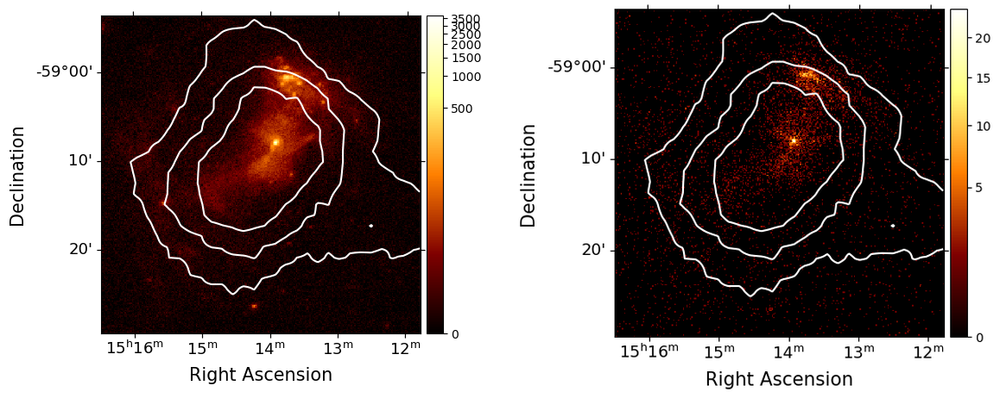<br />
图注：\(\footnotesize\) EDR (left) and DR1 (right) eROSITA maps in Gammapy with H.E.S.S. contours (4, 8, and 12 $\sigma$ significance)<br />
对应解读：对应“建议重点查看的图表”第3项以及“关键图表逐图导读”图3：eROSITA 与 H.E.S.S. TeV 等值线叠加图。<br />
入选理由：这是最直接支撑论文核心目标的图：在 Gammapy 中生成的 eROSITA MSH 15-52 图像与 H.E.S.S. 4、8、12σ 显著性等值线叠加，可用于检查 X 射线与 TeV 形态、峰值位置和外延差异。相比单独的事件图或响应矩阵，它最能体现联合 X 射线/伽马射线分析的科学动机和当前成果。<br />
来源与置信度：\(arxiv_source\)；high；\(arxiv_source\) / \(mem_demo.tex\):figure[3]</p>
<p><strong>Fig01</strong><br />
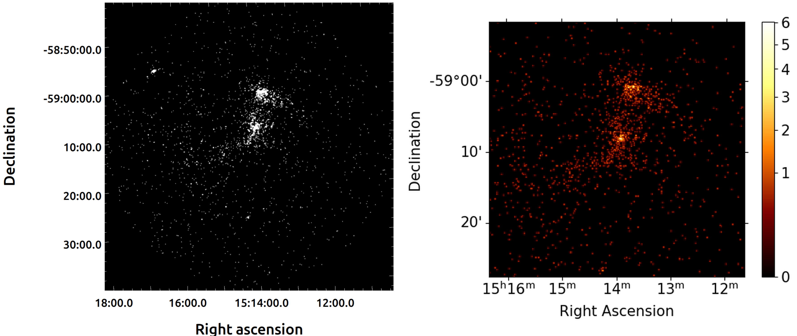<br />
图注：\(\footnotesize\) eROSITA DR1 TM1 eventfile of MSH 15-52 in ds9 (top) and Gammapy (bottom).<br />
对应解读：对应“建议重点查看的图表”第1项和第5项，以及“关键图表逐图导读”图1：eROSITA 事件图与 Gammapy 转换结果对照。<br />
入选理由：该图把 eROSITA DR1 TM1 eventfile 在 ds9 与 Gammapy 中的显示结果上下对照，是验证格式转换是否保留源区形态、坐标和事件分布的关键诊断图。它直接支撑日报中关于检查 MSH 15-52 X 射线形态、ROI 和转换一致性的讨论。<br />
来源与置信度：\(arxiv_source\)；high；\(arxiv_source\) / \(mem_demo.tex\):figure[1]</p>
<p><strong>Fig02</strong><br />
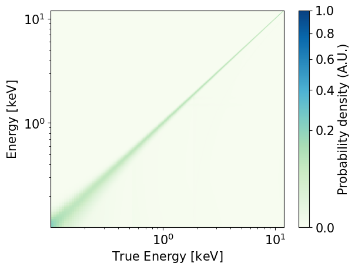<br />
图注：\(\footnotesize\) eROSITA RMF/energy dispersion matrix plotted in Gammapy.<br />
对应解读：对应“建议重点查看的图表”第2项和第5项，以及模型拟合段落中关于响应函数、能量重分布和 forward folding 的说明。<br />
入选理由：该图展示 eROSITA RMF/energy dispersion matrix 已在 Gammapy 中绘制，说明转换不只停留在图像层面，而涉及能量响应这一联合似然分析所必需的 IRF 分量。虽然它不是完整流程图或残差验证图，但对判断方法是否可复用、是否能进行严格 forward-folding 拟合非常重要。<br />
来源与置信度：\(arxiv_source\)；high；\(arxiv_source\) / \(mem_demo.tex\):figure[2]</p>
<h4 id="_56">强相关工作</h4>
<p>同一源背景方面，应把本文放在 MSH 15-52 和 PSR B1509-58 的长期多波段研究中阅读。H.E.S.S. 早已报告该区域的扩展 TeV 发射，X 射线观测也显示复杂的 PWN 结构。可检索关键词包括 “MSH 15-52 H.E.S.S.”、“PSR B1509-58 Chandra PWN”、“MSH 15-52 eROSITA” 和 “PWN multiwavelength morphology”。这些是同一源和同类源的直接上下文。</p>
<p>方法背景方面，Gammapy 的开放分析路线与 CTA 时代的数据模型密切相关，而 eROSITA 的巡天数据则提供了统一 X 射线视角。可检索关键词包括 “Gammapy open gamma-ray analysis”、“GADF gamma-ray data formats”、“eROSITA instrument response”、“joint likelihood multiwavelength PWN”。相反或需要警惕的观点不是某篇论文简单反对联合分析，而是多波段拟合中常见的过度单区化：用一个电子谱、一个磁场和一个空间模板解释所有波段，可能会低估真实输运和环境复杂性。</p>
<p><strong>同一事件 / 同类源线索</strong>：</p>
<ul>
<li><a href="https://arxiv.org/abs/2607.13687">https://arxiv.org/abs/2607.13687</a></li>
<li><a href="https://arxiv.org/abs/astro-ph/0504120">https://arxiv.org/abs/astro-ph/0504120</a></li>
</ul>
<p><strong>相似工作</strong>：</p>
<ul>
<li><a href="https://arxiv.org/abs/1709.01751">https://arxiv.org/abs/1709.01751</a></li>
<li><a href="https://arxiv.org/abs/2010.03477">https://arxiv.org/abs/2010.03477</a></li>
</ul>
<p><strong>基础理论 / 方法工作</strong>：</p>
<ul>
<li><a href="https://arxiv.org/abs/astro-ph/0504120">https://arxiv.org/abs/astro-ph/0504120</a></li>
<li><a href="https://arxiv.org/abs/1709.01751">https://arxiv.org/abs/1709.01751</a></li>
</ul>
<p><strong>相反观点 / 张力线索</strong>：</p>
<p>（未提供）</p>
</details>
<h3 id="6-combined-km3netarca-and-antares-search-for-compact-neutrino-sources">6. Combined KM3NeT/ARCA and ANTARES search for compact neutrino sources</h3>
<ul>
<li>来源：arXiv / astro-ph.HE</li>
<li>链接：https://arxiv.org/abs/2607.13625v1</li>
<li>作者：V. Kulikovskiy, B. Caiffi, S. Alves Garre, J. Aublin, M. de Jong, A. Heijboer, G. Illuminati, R. Muller</li>
<li>评分：novelty 6/10，importance 7/10，relevance 10/10，final 8.75/10</li>
<li>推荐理由：Direct high-energy neutrino astronomy result/method combining KM3NeT/ARCA and ANTARES for compact source searches; abstract is brief but the source-search context is highly relevant.</li>
</ul>
<p><strong>中文题目</strong>：KM3NeT/ARCA 与 ANTARES 联合搜寻紧致中微子源</p>
<p><strong>做了什么</strong>：这篇文章把地中海两代切伦科夫中微子望远镜的数据放到同一个点源搜寻框架里：成熟运行多年的 ANTARES 与正在建设、有效体积更大的 KM3NeT/ARCA。作者用分箱似然方法寻找天空中角尺度很小的高能中微子源，核心目的不是宣布某个强信号，而是展示两套探测器的数据如何在统一统计量下合并，并评估联合分析相对单独分析的灵敏度收益。它的重要性在于，南天区尤其是银河中心方向对北半球水下探测器很关键，而紧致源信号通常很弱，必须靠多年曝光和跨实验合并来提高发现概率。</p>
<p><strong>为什么重要</strong>：高能中微子点源搜寻长期受限于事件数少、角分辨率有限和大气中微子背景强。ANTARES 已经给出过南天区点源约束，但有效面积有限；KM3NeT/ARCA 的规模更大，却仍处在数据积累阶段。把两者合并，可以在不等待单一实验长期运行的情况下获得更好的天空覆盖和能量响应，也为未来多探测器联合似然分析建立技术模板。</p>
<p><strong>理论 / 观测 / 仪器方法价值</strong>：对观测而言，本文的价值是给出一个可复用的联合点源搜寻管线：如何把不同探测器、不同运行时期、不同角分辨率和能量响应的数据映射到同一分箱似然。对方法而言，它展示了在事件统计还不充分时，灵敏度、发现势和显著性应怎样用模拟背景与信号注入来评估。对仪器而言，它量化了 ARCA 新数据在 ANTARES 历史曝光基础上的边际贡献。</p>
<p><strong>为什么应该关注</strong>：如果你关心银河系 PeVatron、活动星系核、瞬变源遗迹或 IceCube 弥散中微子背景的源分解，这类工作直接决定了哪些天空位置已经被有效排除、哪些候选源仍有空间。即使没有发现，联合上限也会反馈到源模型的中微子光度、质子加速效率和源族贡献估计中。更现实地说，它告诉我们 KM3NeT 进入科学产出阶段后，早期数据怎样与 ANTARES 遗产数据连接，而不是从零开始。</p>
<details class="paper-detail">
<summary>展开详细解读：文章讲解、背景、理论、重点章节、图表与相关工作</summary>
<h4 id="_57">文章详细讲解</h4>
<p>科学问题：高能天体中微子的弥散通量已经由 IceCube 确认，但单个紧致源的贡献仍然难以拆分。点源搜寻试图在天空上寻找与背景相比显著聚集的中微子候选事件。地中海探测器对南天尤其有优势，因为来自南天的中微子可作为穿地上行事例被筛选，从而压低大气μ子背景；这包括银河中心、银道面和若干 TeV 伽马射线源密集区域。本文的问题是：把 ANTARES 的长期数据与 KM3NeT/ARCA 已有数据合并后，是否能以统一、稳健的统计框架改善紧致源搜索能力。</p>
<p>作者怎么做：文章采用分箱似然而非只依赖非分箱事件级似然。基本思路是把天空划分为角像素或搜索窗口，对每个位置比较观测计数与背景期望，再加入信号模板。ANTARES 与 ARCA 的数据不能简单相加，因为二者的有效面积、角分辨率、能量阈值、运行时间、事件选择和背景组成都不同；联合分析需要为每个探测器建立自己的响应与背景模型，然后在同一源位置假设下把似然相乘，或等价地把对数似然相加。文章的核心贡献在于展示这种组合在实际数据上的可行性，并用模拟或伪实验估计灵敏度与发现势。</p>
<p>关键结果：从摘要可判断，本文主要是方法展示和组合数据集的点源搜寻，而不是报告一个达到天体物理发现标准的源。读者应重点看联合分析相对 ANTARES-only 与 ARCA-only 的改进：例如在不同赤纬处的通量上限、发现势曲线，以及最显著热点的试验因子校正后显著性。真正有意义的结果不是局部最大过量本身，而是过量在全天天空扫描后的全局概率、候选源列表中各源的似然比、以及联合灵敏度是否按预期优于单一实验。若论文给出了热点图、赤纬依赖灵敏度和候选源表，这三类结果共同构成证据链。</p>
<p>局限和下一步：这类分析的主要限制包括 ARCA 当前曝光尚短、两实验能量估计和角误差标定不完全一致、背景模型依赖大气中微子和误重建大气μ子模拟、以及全天扫描的 trials factor 会显著降低局部显著性。分箱似然的优点是稳健、便于组合，但会牺牲部分事件级能量和角误差信息；未来更强的版本应采用联合非分箱似然、加入事件能量代理量、对不同源谱指数同时拟合，并与伽马射线源表或瞬变触发实现时间相关联合搜索。随着 ARCA 线阵增多和曝光增长，这个框架的价值会快速上升。</p>
<h4 id="_58">关键结果是怎么做出来的</h4>
<p>数据与样本选择方面，本文合并的是 ANTARES 历史数据与截至论文时可用的 KM3NeT/ARCA 数据。ANTARES 提供长时间基线和已充分理解的探测器系统atics；ARCA 提供更大的设计有效体积和在高能端更好的增长潜力。样本通常会经过重建质量、上行/近水平事件选择、角误差或拟合质量筛选，以压低大气μ子污染；文章题目和摘要没有给出具体事件数，因此读者需要在数据样本表中检查每个探测器、每个运行期、每类事件拓扑的保留事件数和 livetime。</p>
<p>统计证据链的中心是分箱似然。对每个搜索方向，作者会比较观测计数图与背景图，并注入一个由点扩散函数扩展后的源模板。联合似然应当由 ANTARES 与 ARCA 两部分组成，二者共享同一源位置和源强参数，或者共享一个物理通量归一化但通过各自有效面积转换成期望事件数。关键诊断量通常是似然比检验统计量、局部 \(p\) 值、全局 \(p\) 值、灵敏度和发现势。读者要确认显著性是否来自真实天空 scrambled 背景、蒙特卡洛伪实验，还是解析近似；在低计数区，Wilks 定理未必总是可靠。</p>
<p>图表支撑方面，应优先查看全天显著性图、赤纬依赖的灵敏度曲线、候选源列表和最显著热点附近的事件分布。全天图告诉你过量是否集中在某个天体物理上有意义的位置，还是扫描后常见的随机热点；灵敏度曲线告诉你联合分析在哪些赤纬真正优于单探测器；候选源表则显示预定义源列表是否比盲扫更有希望。若论文包含 ANTARES-only、ARCA-only 与 combined 的对比曲线，这就是判断联合分析价值的主图。</p>
<p>系统误差和稳健性检验应包括角分辨率不确定性、有效面积不确定性、水光学性质、探测器时间稳定性、背景赤纬分布建模、事件选择阈值变化，以及源谱假设变化。尤其要注意信号谱指数：硬谱源在高能端更受 ARCA 帮助，软谱源更依赖低能阈值和长期曝光。若只给出 \(E^{-2}\) 假设下的结果，读者应谨慎外推到 \(E^{-2.5}\) 或带截止的银河源模型。</p>
<p>稳健性方面，最有说服力的是用大量 scrambled sky 或伪实验得到背景下最大检验统计量分布，然后把实际最大热点放进去比较；其次是对候选源列表进行预先定义，避免事后挑选。若文章展示了不同 binning、不同质量 cut、不同背景估计方式下上限变化不大，则说明方法可靠。若没有发现显著源，主要结论应解读为联合框架和通量上限，而不是“源不存在”。</p>
<details class="paper-subdetail">
<summary>展开背景、理论、公式、模型、章节和图表导读</summary>
<h4 id="_59">背景知识</h4>
<p>研究对象是高能宇宙中微子的紧致源，也就是在探测器角分辨率内近似为点状的源。可能候选包括活动星系核喷流、伽马射线暴余辉、潮汐瓦解事件、微类星体、超新星遗迹、脉冲星风云、银河中心附近的 PeVatron 候选体和星暴星系核区。中微子几乎不受磁场偏转，也不像高能伽马射线那样容易被背景光吸收，因此一旦点源被确认，将是强子加速和介子产生的直接证据。</p>
<p>历史上，IceCube 先确认了弥散天体中微子通量，但点源识别一直困难。TXS 0506+056 是最著名的多信使候选，但总体上单源显著性、重复性和源族贡献仍有争议。ANTARES 虽然规模小于 IceCube，却位于北半球，向下看南天时可利用地球屏蔽大气μ子，因此对银河中心和南天 TeV 源有独特价值。KM3NeT/ARCA 是 ANTARES 的后继大型阵列，目标就是在地中海提供更高有效面积和更好角分辨率的高能中微子观测。</p>
<p>为什么现在值得重新看：ARCA 正在从建设阶段进入可产出科学数据的阶段，而 ANTARES 已经形成一套成熟的数据处理和系统误差理解。早期 ARCA 数据单独看可能还不足以超越旧约束，但与 ANTARES 遗产数据联合可以立即产生更强限制，并检验跨代探测器联合分析所需的统计和响应模型。对未来十年而言，多实验联合不再是可选项，而是源搜寻接近灵敏度瓶颈后的必需路径。</p>
<p>常见误区之一是把“没有点源发现”理解为“没有天体源”。弥散通量可以来自许多低亮度源、瞬变源、宽扩展源或时间占空比很低的源，点源分析只对特定角尺度、时间假设和谱形最敏感。另一个误区是直接比较不同实验的事件数；真正可比的是在给定赤纬、能谱和置信度下的通量灵敏度，因为有效面积、背景、角分辨率和曝光都不同。第三个误区是只看局部显著性，忽略全天扫描和候选源列表带来的试验因子。</p>
<h4 id="_60">基础理论 / 方法脉络</h4>
<p>物理图像从强子加速开始：若天体源把质子或核加速到 TeV–PeV 甚至更高能量，它们与气体或辐射场相互作用产生π介子。带电π介子衰变产生中微子，零电荷π介子衰变产生伽马射线。因此，高能中微子点源是强子过程的相对干净示踪；但源内吸收、传播吸收和宇宙线逃逸会让中微子与伽马射线的对应关系并不一一对应。</p>
<p>探测原理是水下光学阵列记录带电二次粒子在海水中的切伦科夫光。对点源最有用的是μ子径迹事例：(<br />
\(u_{\mu}\)) 或 (ar{<br />
u}_{\mu}) 发生带电流相互作用后产生长程μ子，方向重建精度通常优于级联事例。背景主要来自大气中微子和误重建的大气μ子。上行事例选择利用地球屏蔽大气μ子，但在最高能处地球也会吸收中微子，因此有效面积随赤纬和能量强烈变化。</p>
<p>本文采用的关键统计假设是：若天空某方向存在紧致源，观测到的事件空间分布应等于平滑背景加上一个由点扩散函数卷积后的局域信号峰。分箱似然把天空像素中的计数作为泊松变量处理；每个探测器有自己的背景期望、曝光和响应，但在同一源假设下可共享源通量参数。分箱方法对公开展示和跨实验组合很方便，因为它把复杂事件级信息压缩成计数图、背景图和信号模板。</p>
<p>主要退化关系来自源通量归一化、谱指数、角扩展、角分辨率和背景归一化之间的耦合。硬谱源在高能端更突出，背景少但事件数也少；软谱源事件多却更接近大气背景。若只用空间信息，弱源很容易被背景涨落淹没；加入能量代理量可增强硬谱源的可分辨性，但要求两探测器能量响应标定一致。系统误差还包括海水光学性质、光传感器效率、触发变化、重建偏差和模拟的中微子截面或大气通量模型。</p>
<h4 id="_61">公式与推导</h4>
<p>第一步，把天体中微子源的微分通量写成常用幂律形式：</p>
<div class="math-display">\[\Phi_{\nu}(E,\Omega)=\Phi_{0}\left(\frac{E}{E_{0}}\right)^{-\gamma}\delta(\Omega-\Omega_{s}) .\]</div>
<p>这里 \(\Phi_{0}\) 是参考能量 \(E_{0}\) 处的通量归一化，\(\gamma\) 是谱指数，\(\Omega_{s}\) 是源方向。紧致源假设意味着真实角分布可近似为 \(\delta(\Omega-\Omega_{s})\)，实际观测角分布由探测器点扩散函数展宽。</p>
<p>第二步，通量通过探测器响应转化为期望信号事件数：</p>
<div class="math-display">\[\mu_{s,d}=T_{d}\int dE\, A_{\mathrm{eff},d}(E,\delta_{s})\,\Phi_{0}\left(\frac{E}{E_{0}}\right)^{-\gamma} .\]</div>
<p>下标 \(d\) 表示 ANTARES 或 ARCA，\(T_{d}\) 是有效观测时间，\(A_{\mathrm{eff},d}\) 是有效面积，\(\delta_{s}\) 是源赤纬。这个式子说明联合分析不能简单加事件数，而要通过各自响应把同一个物理通量映射为不同的 \(\mu_{s,d}\)。</p>
<p>第三步，在天空像素 \(i\) 中，信号模板由点扩散函数 \(P_{d}(\Omega_{i}|\Omega_{s})\) 给出：</p>
<div class="math-display">\[\mu_{i,d}(\Phi_{0},\gamma)=b_{i,d}+\mu_{s,d}\,P_{d}(\Omega_{i}|\Omega_{s}) .\]</div>
<p>其中 \(b_{i,d}\) 是背景期望计数。若 \(P_{d}\) 已归一化满足 \(\sum_{i}P_{d}(\Omega_{i}|\Omega_{s})=1\)，则 \(\mu_{s,d}\) 是该探测器对源的总期望信号数。</p>
<p>第四步，分箱计数的基本似然是泊松乘积：</p>
<div class="math-display">\[\mathcal{L}_{d}(\Phi_{0},\gamma)=\prod_{i}\frac{\mu_{i,d}^{\,n_{i,d}}e^{-\mu_{i,d}}}{n_{i,d}!} .\]</div>
<p>这里 \(n_{i,d}\) 是像素 \(i\) 中观测计数。分箱似然的适用条件是像素计数可近似独立，且背景图与响应模板已包含探测器曝光和选择效应。</p>
<p>第五步，两个探测器的联合似然通常写成乘积：</p>
<div class="math-display">\[\mathcal{L}_{\mathrm{joint}}(\Phi_{0},\gamma)=\mathcal{L}_{\mathrm{ANTARES}}(\Phi_{0},\gamma)\,\mathcal{L}_{\mathrm{ARCA}}(\Phi_{0},\gamma) .\]</div>
<p>等价地，\(\ln\mathcal{L}_{\mathrm{joint}}=\ln\mathcal{L}_{\mathrm{ANTARES}}+\ln\mathcal{L}_{\mathrm{ARCA}}\)。这一步是本文方法的核心：不同实验通过共享源通量参数实现物理合并。</p>
<p>第六步，点源显著性可由似然比检验统计量表示：</p>
<div class="math-display">\[\mathrm{TS}=2\left[\ln\mathcal{L}_{\mathrm{joint}}(\widehat{\Phi}_{0},\widehat{\gamma})-\ln\mathcal{L}_{\mathrm{joint}}(\Phi_{0}=0)\right] .\]</div>
<p>其中 \(\widehat{\Phi}_{0}\) 和 \(\widehat{\gamma}\) 是最大似然估计。若 \(\gamma\) 固定，则只拟合 \(\Phi_{0}\)；若 \(\gamma\) 自由，显著性和上限会受到谱形退化影响。</p>
<p>第七步，局部 \(p\) 值由背景假设下检验统计量尾概率给出：</p>
<div class="math-display">\[p_{\mathrm{local}}=\int_{\mathrm{TS}_{\mathrm{obs}}}^{\infty} f_{0}(\mathrm{TS})\,d\mathrm{TS} .\]</div>
<p>这里 \(f_{0}(\mathrm{TS})\) 是无源背景伪实验得到的分布。由于 \(\Phi_{0}\ge 0\) 是边界参数，且计数可能很低，实际分析往往应使用 scrambled sky 或蒙特卡洛来标定 \(f_{0}\)，而不完全依赖渐近 \(\chi^{2}\) 近似。</p>
<p>第八步，全天扫描后的全局概率需要考虑试验因子：</p>
<div class="math-display">\[p_{\mathrm{global}}=P\left(\mathrm{TS}_{\max}^{0}\ge \mathrm{TS}_{\max}^{\mathrm{obs}}\right) .\]</div>
<p>这里 \(\mathrm{TS}_{\max}^{0}\) 是每次背景伪实验在全扫描区域中最大的检验统计量。这个式子解释了为什么局部看起来有趣的热点，经过全天扫描后常常并不显著。</p>
<p>第九步，常用的置信上限可通过轮廓似然给出：</p>
<div class="math-display">\[-2\ln\frac{\mathcal{L}_{\mathrm{joint}}(\Phi_{0}^{90})}{\mathcal{L}_{\mathrm{joint}}(\widehat{\Phi}_{0})}=\Delta_{90} .\]</div>
<p>\(\Phi_{0}^{90}\) 是 \(90\%\) 置信水平上限，\(\Delta_{90}=2.71\) 是单参数高斯近似下的常用取值；低计数或边界情况下应以 Neyman 构造或伪实验校准。这个上限最终可转化为源模型的中微子光度或强子功率约束。</p>
<h4 id="_62">模型拟合 / 应用方法</h4>
<p>本文这类点源分析的拟合量通常包括源通量归一化 \(\Phi_{0}\)，有时包括谱指数 \(\gamma\)，以及在盲扫中逐点变化的源位置 \(\Omega_{s}\)。若做候选源列表搜索，\(\Omega_{s}\) 固定在预定义天体位置，试验因子较小；若做全天盲扫，\(\Omega_{s}\) 在网格上扫描，需要用最大背景涨落分布计算全局显著性。</p>
<p>似然构造的重点是各探测器的响应一致性。ANTARES 与 ARCA 的 \(A_{\mathrm{eff}}\)、点扩散函数和背景图不同，因此每个探测器有独立的 \(b_{i,d}\) 与 \(P_{d}\)。共同拟合时，物理通量参数共享，但事件期望通过各自响应计算。若加入 nuisance parameters，可让有效面积归一化、角分辨率展宽或背景归一化在先验约束下浮动；这会降低名义显著性，但更真实。</p>
<p>残差诊断应看两个层面：第一是最显著热点附近，观测计数相对于背景的空间残差是否呈现与点扩散函数一致的集中峰；第二是全天空或赤纬带残差是否存在系统偏移。如果某个赤纬带整体偏高，可能是背景建模或曝光处理问题，而不是点源。若 ARCA 和 ANTARES 对同一候选方向给出的贡献方向相反，也应谨慎解释联合过量。</p>
<p>参数退化主要体现在 \(\Phi_{0}\) 与 \(\gamma\) 之间。硬谱假设会把权重放在高能事件和高能有效面积上，通常使背景更低；软谱假设更容易受大气中微子背景影响。分箱空间似然若没有能量维度，对 \(\gamma\) 的约束很弱，因此许多分析会固定 \(\gamma=2\) 或给出多个谱指数下的上限。源角扩展也是潜在退化：真实扩展源若被点源模板拟合，峰值显著性和通量估计都会偏低。</p>
<p>模型可能失败的场景包括：源是瞬变而不是稳态，源在角尺度上扩展，背景估计未捕捉季节性或探测器配置变化，或者事件重建质量 cut 在两个实验间引入不同能量选择。实际应用时，读者不应只引用单个最强上限，而应按目标源赤纬、假设谱形和时间行为选择对应的灵敏度或上限曲线。</p>
<h4 id="_63">重点章节 / 结果段落怎么读</h4>
<ol>
<li>
<p>数据样本与探测器响应：先读 ANTARES 与 KM3NeT/ARCA 数据集的 livetime、事件选择、重建质量 cut 和保留事件数。重点确认两套数据在能区和天空覆盖上的互补性，而不是只看总事件数。</p>
</li>
<li>
<p>分箱似然方法：这是全文方法核心。应检查像素化方式、背景图如何构造、信号模板如何由点扩散函数生成、联合似然如何把两个实验合并，以及是否包含能量信息或只使用方向计数。</p>
</li>
<li>
<p>灵敏度与发现势：这一节决定本文的实际价值。读者应比较 combined、ANTARES-only 和 ARCA-only 曲线，特别看赤纬依赖；如果联合曲线在南天或银河中心方向明显改善，就说明 ARCA 早期数据已经对遗产数据产生增益。</p>
</li>
<li>
<p>盲扫与候选源结果：若有全天扫描，重点看最显著热点的局部和全局显著性；若有源表搜索，重点看候选源的预定义方式、每个源的最佳拟合信号数或通量上限，以及列表试验因子的处理。</p>
</li>
<li>
<p>系统误差与稳健性：最后读探测器响应、背景建模、谱指数假设和 binning 选择对结果的影响。对没有显著发现的论文，上限的可信度很大程度取决于这些稳健性检查。</p>
</li>
</ol>
<h4 id="_64">建议重点查看的图表</h4>
<ol>
<li>
<p>数据样本表：看 ANTARES 与 ARCA 的 livetime、保留事件数、事件类型和重建质量阈值，确认联合数据的相对权重。</p>
</li>
<li>
<p>有效面积或接受度随能量和赤纬的图：看 ARCA 在高能端相对 ANTARES 的增益，以及地球吸收导致的高能赤纬依赖。</p>
</li>
<li>
<p>角分辨率或点扩散函数图：看两个探测器的中位角误差和尾部，尾部过宽会显著影响点源灵敏度。</p>
</li>
<li>
<p>全天显著性或 \(\mathrm{TS}\) 热点图：看最强过量的位置、是否靠近已知源或银道面，以及是否存在赤纬带状系统残差。</p>
</li>
<li>
<p>灵敏度和发现势曲线：看 combined 曲线是否稳定优于单实验曲线，以及改善在哪些赤纬最明显。</p>
</li>
<li>
<p>候选源结果表：看每个源的局部 \(p\) 值、全局校正、最佳拟合信号数和通量上限，不要只挑最小 \(p\) 值。</p>
</li>
<li>
<p>系统误差表或附录诊断：看有效面积、角分辨率、背景归一化和谱指数变化对上限的影响幅度。</p>
</li>
</ol>
<h4 id="_65">关键图表逐图导读</h4>
<p>图 1：建议首先读数据样本或天空事件分布图。若横轴为赤经、纵轴为赤纬，数据点或像素颜色表示事件密度，应检查事件分布是否主要受探测器曝光和赤纬接受度控制，而不是出现未解释的大尺度结构。读图陷阱是把曝光导致的赤纬梯度误认为天体信号。</p>
<p>图 2：若论文给出有效面积随能量的曲线，横轴通常是中微子能量，纵轴是 \(A_{\mathrm{eff}}\)，不同颜色代表 ANTARES、ARCA 或不同赤纬。重点看高能端 ARCA 是否迅速超过 ANTARES，以及低能端是否仍由 ANTARES 长曝光提供贡献。陷阱是忽略谱指数；对软谱源，高能有效面积优势不一定直接转化为更多事件。</p>
<p>图 3：角分辨率或点扩散函数图通常给出重建方向与真实方向夹角的累积分布或中位数随能量变化。应看中位角误差和长尾，而不是只看最佳值。点源似然对 PSF 尾部很敏感，因为少数误重建事件可能制造假热点或稀释真信号。</p>
<p>图 4：全天 \(\mathrm{TS}\) 或 \(-\log_{10}p\) 图是最直观但也最容易误读的结果图。坐标轴为空间坐标，颜色代表局部显著性。应同时查表中的全局 \(p\) 值；若图上热点很多但没有通过全局校正，这通常符合背景涨落预期。</p>
<p>图 5：灵敏度或通量上限随赤纬曲线是判断联合分析价值的关键图。横轴为赤纬，纵轴为给定谱假设下的 \(\Phi_{0}\) 上限或发现势，曲线分别为 ANTARES、ARCA 和 combined。真正有力的结论应表现为 combined 曲线在大部分目标赤纬低于单实验曲线。</p>
<p>图 6：候选源表或源列表扫描图应关注预定义源的局部 \(p\) 值、试验校正后概率、最佳拟合 \(\widehat{\Phi}_{0}\) 或 \(\widehat{n}_{s}\)。读图陷阱是事后把最小 \(p\) 值对应源解释为物理关联；没有独立多信使证据时，它首先是统计候选。</p>
</details>
<h4 id="_66">论文原图 / 可嵌入图片</h4>
<p><strong>Fig01</strong><br />
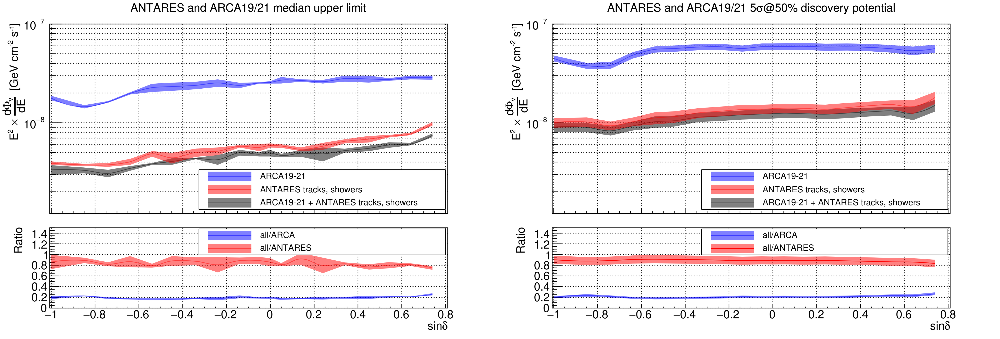<br />
图注：Left: 90\% CL median upper limits on the one-flavour neutrino flux as a function of declination. \ Right: 50\% 5$\sigma$ discovery flux on the one-flavour neutrino flux as a function of declination.<br />
对应解读：建议重点查看的图表第5项；关键图表逐图导读图5；模型拟合段落中关于联合灵敏度、发现势和赤纬依赖的讨论。<br />
入选理由：这张图直接给出90% CL中微子通量上限中位数和50% 5σ发现势随赤纬的曲线，是判断ANTARES与KM3NeT/ARCA联合分析是否带来实际增益的核心结果图。它对应日报中最强调的灵敏度/发现势诊断，可用于检查不同赤纬处的搜索能力、南北天差异以及联合数据集的科学价值，比单个源上限点更能支撑全文方法展示的主结论。<br />
来源与置信度：\(arxiv_source\)；high；\(arxiv_source\) / blois.tex:figure[1]</p>
<p><strong>Fig02</strong><br />
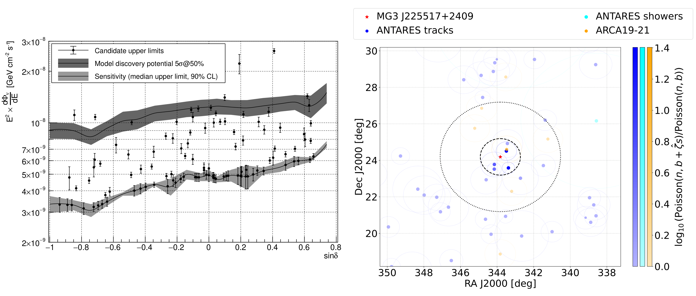<br />
图注：90\% CL upper limits (dots) on the one-flavour neutrino flux normalisation for the investigated astrophysical candidates as a function of the source declination, assuming an $E^{-2.0}$ spectrum.<br />
对应解读：建议重点查看的图表第6项；关键图表逐图导读图6；候选源列表搜索和通量上限结果讨论。<br />
入选理由：这张图展示预定义天体候选源的90% CL一味中微子通量归一化上限，并按源赤纬排列，能支撑日报中关于候选源结果不要只看最小p值、而应结合通量上限和赤纬接受度理解的提醒。虽然它没有给出局部/全局p值或最佳拟合信号数，但在现有候选图中是唯一直接对应候选源结果与上限约束的图。<br />
来源与置信度：\(arxiv_source\)；high；\(arxiv_source\) / blois.tex:figure[2]</p>
<h4 id="_67">强相关工作</h4>
<p>这篇工作属于同类源和同类方法的延续，而不是某个单一命名瞬变事件的跟进。应把它放在三条文献线索中阅读：ANTARES 过去的点源和银河中心搜索、IceCube 的长期点源/源表搜索、以及 KM3NeT/ARCA 的探测器性能与早期科学结果。检索关键词可用 “ANTARES point source search high energy neutrinos”、“KM3NeT ARCA point source binned likelihood”、“IceCube time integrated point source search”、“Mediterranean neutrino telescope Galactic Centre”。</p>
<p>相关张力主要来自多信使候选源的解释：IceCube 弥散通量明确存在，但多数伽马射线亮源没有对应的稳定中微子点源显著性；TXS 0506+056 等个例提示某些瞬变或低占空比活动可能贡献中微子，但稳态点源搜索给出的上限又限制了明亮稳态源族的总贡献。本文的联合上限可用于检验这些模型，尤其是南天银河源和银道面 PeVatron 模型。若要找相反观点，应检索 “hidden cosmic-ray accelerators neutrino gamma-ray tension”、“stacking limits blazars neutrino contribution”、“Galactic plane neutrino emission IceCube KM3NeT”。</p>
<p><strong>同一事件 / 同类源线索</strong>：</p>
<ul>
<li><a href="https://arxiv.org/abs/2607.13625">https://arxiv.org/abs/2607.13625</a></li>
<li><a href="https://arxiv.org/pdf/2607.13625">https://arxiv.org/pdf/2607.13625</a></li>
<li><a href="https://www.km3net.org/">https://www.km3net.org/</a></li>
<li><a href="https://antares.in2p3.fr/">https://antares.in2p3.fr/</a></li>
</ul>
<p><strong>相似工作</strong>：</p>
<ul>
<li><a href="https://arxiv.org/abs/1910.08488">https://arxiv.org/abs/1910.08488</a></li>
<li><a href="https://arxiv.org/abs/1909.07372">https://arxiv.org/abs/1909.07372</a></li>
<li><a href="https://arxiv.org/abs/1807.08794">https://arxiv.org/abs/1807.08794</a></li>
</ul>
<p><strong>基础理论 / 方法工作</strong>：</p>
<ul>
<li><a href="https://ui.adsabs.harvard.edu/abs/1983ApJ...272..317L/abstract">https://ui.adsabs.harvard.edu/abs/1983ApJ...272..317L/abstract</a></li>
<li><a href="https://arxiv.org/abs/1306.2304">https://arxiv.org/abs/1306.2304</a></li>
<li><a href="https://arxiv.org/abs/1902.10045">https://arxiv.org/abs/1902.10045</a></li>
</ul>
<p><strong>相反观点 / 张力线索</strong>：</p>
<ul>
<li><a href="https://arxiv.org/abs/1807.08794">https://arxiv.org/abs/1807.08794</a></li>
<li><a href="https://arxiv.org/abs/1807.08816">https://arxiv.org/abs/1807.08816</a></li>
</ul>
</details>
<h3 id="7-synchrotron-emission-from-cooled-particle-distributions">7. Synchrotron Emission from Cooled Particle Distributions</h3>
<ul>
<li>来源：arXiv / astro-ph.HE</li>
<li>链接：https://arxiv.org/abs/2607.13130v1</li>
<li>作者：Ross Ferguson, Ben Margalit</li>
<li>评分：novelty 8/10，importance 7/10，relevance 8/10，final 8.65/10</li>
<li>推荐理由：Broadly useful analytic synchrotron emission/absorption fitting formulae for cooled particle distributions, applicable to GRB afterglows, TDEs, and other high-energy transients; worth retaining as a reusable modeling method.</li>
</ul>
<p><strong>中文题目</strong>：冷却粒子分布的同步辐射发射</p>
<p><strong>做了什么</strong>：这篇论文处理一个在暂现源余辉建模中很常见、但常被近似得很粗的问题：电子在被注入后会因同步辐射、逆康普顿或绝热膨胀而冷却，粒子分布函数不再是简单的幂律或热分布，进而改变同步辐射的发射系数和吸收系数。作者针对注入幂律电子和热电子两类情形，推导并给出解析拟合函数，用来快速计算冷却后分布产生的同步辐射发射与自吸收。它的重要性在于把以往常依赖数值积分的局域辐射计算，压缩成适合嵌入伽马暴、LFBOT、喷流潮汐瓦解事件等余辉拟合代码的高效模块。</p>
<p><strong>为什么重要</strong>：许多余辉反演把谱断点、峰值通量和光变斜率直接映射到能量、磁场、密度和微物理参数，但这种映射依赖对电子冷却谱形的假设。如果冷却后的局域分布和吸收系数处理不准确，尤其在自吸收频段、冷却频率附近或从热电子到非热电子过渡处，拟合出来的外流能量、环境密度和电子能量分配都会偏移。本文的价值不是提出一个新的源模型，而是改进辐射转移中的基础构件。</p>
<p><strong>理论 / 观测 / 仪器方法价值</strong>：对理论和方法而言，本文把粒子输运方程给出的冷却后分布与同步辐射核函数联系起来，提供了可复用的解析近似；对观测建模而言，它能降低多频余辉拟合中反复积分粒子分布的计算成本，并使局域物理假设更透明；对仪器和数据解释而言，它有助于在射电到毫米波的自吸收谱段中更可靠地区分冷却效应、几何效应和环境密度结构。</p>
<p><strong>为什么应该关注</strong>：如果你用余辉光变或宽带谱来讨论喷流能量、爆炸环境、冲击微物理，本文关心的是你模型里最底层的辐射系数是否足够准确。它会影响的不只是某个细节谱指数，而是参数推断中的系统误差预算：同一组数据在不同冷却处方下可能给出不同的磁场、电子最低能量、冷却频率和自吸收频率。因此这篇文章值得被当作余辉建模工具论文来读。</p>
<details class="paper-detail">
<summary>展开详细解读：文章讲解、背景、理论、重点章节、图表与相关工作</summary>
<h4 id="_68">文章详细讲解</h4>
<p>科学问题：同步辐射源中的电子通常不是静态分布。冲击或磁重联可以注入幂律非热电子，也可以产生近似热分布的电子；随后电子会通过同步辐射、逆康普顿散射和绝热膨胀降低能量。这个能量空间中的漂移会把初始分布改造成带有截断、堆积、变斜率或低能重排的分布。同步辐射的发射系数与吸收系数是对粒子分布和单粒子辐射核的卷积，因此冷却不仅改变光谱高频端，也会改变自吸收频段的光深和峰值位置。</p>
<p>作者怎么做：本文采取“局域”处理，而不是把整个源简化成单一区域的断裂幂律谱。局域处理的思想是：在一个给定流体元或薄壳位置上，先根据注入分布和冷却映射得到当前电子分布，再计算该局域分布对应的同步辐射发射系数与吸收系数。作者选择两个具体注入族：幂律电子和热电子。它们分别对应传统非热余辉与可能存在的热化或准热电子成分。论文的核心工作是把原本需要数值积分的辐射系数写成准确的解析拟合函数，使其可以直接进入光变和谱能量分布建模。</p>
<p>关键结果：论文给出的不是单一的谱指数表，而是包含冷却效应的发射系数和吸收系数拟合形式。对幂律注入，冷却会改变高能端粒子数并在典型冷却能量附近产生平滑过渡，因此对应的同步谱在特征频率附近不能简单用锐利断裂拼接。对热注入，冷却会让原本指数衰减的高能尾部和低能部分发生不同程度的重排，自吸收系数对低能电子尤为敏感，所以热分布冷却后的吸收谱尤其需要准确处理。作者强调这些解析表达相对数值方法更快，同时保持足够精度，适合在参数空间扫描和贝叶斯拟合中反复调用。</p>
<p>局限和下一步：这类解析拟合函数的适用范围由作者选定的冷却律、注入分布族和局域均匀假设决定。真实暂现源中可能存在空间梯度、持续注入、粒子逃逸、湍动磁场演化、电子各向异性、逆康普顿进入 Klein-Nishina 区域，以及多区辐射转移。本文提供的是一个重要的辐射微物理模块，但不是完整流体-辐射模型。下一步最自然的是把这些系数嵌入 GRB、LFBOT 和 TDE 喷流的多频拟合代码，量化相对传统断裂幂律处方在参数后验上的差别。</p>
<h4 id="_69">关键结果是怎么做出来的</h4>
<p>本文最重要的证据链不是来自某个天体样本的事件统计，而是来自解析拟合函数与直接数值积分之间的误差控制。数据对象是理论计算生成的粒子分布与同步辐射系数：作者从设定的注入分布出发，在指定冷却参数下得到冷却后分布，再把它代入同步辐射发射和吸收积分。样本量在这里应理解为覆盖参数空间的计算网格，例如不同幂律指数、热电子温度、冷却强度和观测频率范围，而不是观测事件数。</p>
<p>模型比较的核心是将新解析表达与“基准”数值积分结果比较。发射系数通常比较 (j_{\<br />
u}) 随频率 (\<br />
u) 的变化，吸收系数比较 (\alpha_{\<br />
u}) 或对应光深 (\tau_{\<br />
u}) 的变化。读者应重点看拟合函数在特征频率附近、自吸收频率附近和高频冷却尾部的相对残差，因为这些区域最容易被简单渐近谱指数误导。若论文给出误差图或表，应该确认最大相对误差是出现在物理上无关紧要的极弱通量区，还是出现在观测上最常用的峰值附近。</p>
<p>显著性或置信度在本文中更接近数值精度诊断，而不是天体物理发现的 \(\sigma\) 值。应关注作者是否定义了类似 \(\(\Delta\) j_{\<br />
u}/j_{\<br />
u})、\(\(\Delta\) \alpha_{\<br />
u}/\alpha_{\<br />
u}) 的残差，是否在对数频率空间中均匀评估，是否对不同冷却强度分别给出误差分布。若只给出少数示例曲线，读者需要谨慎外推；若给出覆盖宽参数域的拟合残差统计，则这些公式更适合被直接用于拟合代码。</p>
<p>支撑结论的图表应包括三类：冷却后粒子分布的形状图、发射系数与吸收系数的谱形图、解析拟合与数值结果的残差图。第一类图说明物理原因，第二类图说明观测后果，第三类图说明方法可靠性。尤其要检查热电子分布的冷却后低能端，因为同步自吸收对 \(\partial [n(\gamma)/\gamma^{2}]/\partial \gamma\) 很敏感；一个看似很小的粒子分布误差，可能在吸收系数中被放大。</p>
<p>系统误差主要来自单粒子同步辐射核的近似、各向同性 pitch angle 假设、冷却律是否只依赖电子能量、局域磁场是否恒定、以及是否忽略持续注入和逃逸。稳健性检验应包括改变网格分辨率、比较完整同步核与近似核、在幂律指数或温度参数边界处测试拟合表现，以及验证各渐近极限能回到标准同步辐射谱。本文的实用性取决于这些检验是否覆盖了真实余辉拟合常用的参数区域。</p>
<details class="paper-subdetail">
<summary>展开背景、理论、公式、模型、章节和图表导读</summary>
<h4 id="_70">背景知识</h4>
<p>同步辐射是高能天体物理中最常用的辐射机制之一，从超新星冲击波、伽马暴余辉、活动星系核喷流到潮汐瓦解事件喷流都离不开它。基本图像是相对论电子在磁场中回旋并辐射，单个电子的辐射集中在其特征频率附近，而一群电子的能谱决定总光谱形状。因此，电子分布函数 \(n(\gamma)\) 是连接微物理加速和宏观观测光谱的中间层。</p>
<p>历史上，余辉理论常用分段幂律来描述同步辐射谱：低频自吸收段、低频薄段、峰值附近、高频冷却段分别有简单谱指数。这些表达非常有用，因为它们把观测断点与外流能量、环境密度、磁场和电子能量分配联系起来。但分段幂律本质上是渐近近似，真实谱峰和断点是平滑的，局域电子分布也未必是一个简单的未冷却幂律。</p>
<p>为什么现在值得重新看？一方面，现代多波段暂现源观测，尤其是射电、毫米波、X 射线联合监测，已经能在谱峰和自吸收段提供较高质量数据；另一方面，参数推断越来越依赖 MCMC、嵌套采样或机器学习代理模型，辐射系数会被调用成千上万次。纯数值积分虽然可靠，但计算代价高；过粗近似又会把理论误差带入后验。解析但准确的局域辐射系数正好填补这个缺口。</p>
<p>该领域常见误区之一是把“冷却电子分布”简单等同于在幂律指数上加 \(1\)。这只在特定连续注入、辐射冷却主导、稳态且能量损失率满足特定形式时成立。另一个误区是认为自吸收只由低频光子决定，与高能冷却无关；实际上吸收系数取决于粒子分布的导数和低能电子数，冷却造成的能量空间重排会影响光深。还有一个误区是把全局一壳模型的谱断点当作局域辐射系数本身；真实源的观测谱还要叠加几何、等到达时面、磁场演化和相对论 beaming。</p>
<h4 id="_71">基础理论 / 方法脉络</h4>
<p>基础物理图像是：相对论电子的洛伦兹因子为 \(\gamma\)，在磁场 \(B\) 中以螺旋轨道运动，横向加速度导致同步辐射。单个电子的辐射功率随 \(B^{2}\gamma^{2}\) 增加，特征频率近似随 \(B\gamma^{2}\) 增加。因此，观测频率 (\<br />
u) 主要探测满足 (\<br />
u\sim \<br />
\(u_{\rm syn}(\gamma)\)) 的电子，但由于同步辐射核是宽函数，严格计算需要对整个 \(n(\gamma)\) 积分。</p>
<p>电子冷却可以分为辐射冷却和绝热冷却。同步辐射和 Thomson 区逆康普顿的能量损失率通常近似为 \(\dot{\gamma}\propto -\gamma^{2}\)，高能电子冷却更快；绝热冷却常近似为 \(\dot{\gamma}\propto -\gamma\)，对所有能量按比例降能。两者对分布函数的影响不同：前者容易在高能端产生冷却截断或谱变陡，后者更像整体平移和稀释。</p>
<p>本文关注的关键量是局域电子分布 \(n(\gamma,t)\)、同步发射系数 (j_{\<br />
u})、同步吸收系数 (\alpha_{\<br />
u})，以及表征冷却程度的映射参数。发射系数大体是 \(n(\gamma)\) 与单电子功率 (P_{\<br />
u}(\gamma)) 的卷积；吸收系数则涉及粒子分布对能量的导数，因此对低能端和分布平滑性更敏感。这也是为什么仅拟合发射谱并不能保证自吸收频段正确。</p>
<p>观测上，这些局域系数需要进入辐射转移方程，再与源尺寸、几何和多普勒因子结合，得到通量密度 (F_{\<br />
u})。在射电余辉中，谱峰可能由最小电子频率、冷却频率或自吸收频率共同决定；不同参数组合会产生相似的光变，这就是常见退化。冷却处方不准确时，退化关系会被错误打破，导致看似精确但系统偏差很大的物理参数。</p>
<p>常见系统误差包括磁场和粒子分布是否在局域体元内均匀、pitch angle 是否各向同性、是否存在电子逃逸、是否有持续加速、逆康普顿冷却是否仍处在 Thomson 区、以及低能电子截止是否被正确处理。本文的解析拟合函数应被理解为在这些假设内提高辐射积分效率和精度，而不是替代对源结构和动力学的建模。</p>
<h4 id="_72">公式与推导</h4>
<p>第一步从电子能量损失写起。令电子洛伦兹因子为 \(\gamma\)，局域时间为 \(t\)，若同时存在辐射冷却和绝热冷却，可写成</p>
<div class="math-display">\[\frac{d\gamma}{dt}=-a\gamma^{2}-b\gamma ,\]</div>
<p>其中 \(a\) 包含同步辐射和 Thomson 区逆康普顿损失，\(b\) 表示绝热膨胀损失。若 \(b=0\)，高能电子冷却时间为</p>
<div class="math-display">\[t_{\rm cool}(\gamma)=\frac{1}{a\gamma} .\]</div>
<p>这说明较大的 \(\gamma\) 更快被搬运到低能处，是冷却谱变形的根源。</p>
<p>第二步是粒子数守恒。若电子从初始能量 \(\gamma_{0}\) 冷却到当前能量 \(\gamma\)，且暂不考虑逃逸和新注入，则能量空间中的粒子数满足</p>
<div class="math-display">\[n(\gamma,t)d\gamma=n_{0}(\gamma_{0})d\gamma_{0} .\]</div>
<p>因此</p>
<div class="math-display">\[\(n(\gamma,t)=n_{0}\)[\(\gamma_{0}(\gamma,t)\)]\left|\frac{d\gamma_{0}}{d\gamma}\
ight| .\]</div>
<p>这条关系是从注入分布得到冷却后分布的核心映射。</p>
<p>第三步看纯辐射冷却的简单极限。若 \(d\gamma/dt=-a\gamma^{2}\)，则</p>
<div class="math-display">\[\frac{1}{\gamma}=\frac{1}{\gamma_{0}}+at ,\qquad \gamma_{0}=\frac{\gamma}{1-a t\gamma} .\]</div>
<p>当 \(\gamma\\)<br />
ightarrow (at)^{-1}) 时，所需初始能量趋于无穷大，因此当前分布自然出现冷却上限。若注入是幂律</p>
<div class="math-display">\[n_{0}(\gamma_{0})=K\gamma_{0}^{-p}\quad (\gamma_{\rm m}<\gamma_{0}<\gamma_{\rm max}) ,\]</div>
<p>冷却映射会改变高能端的归一化和形状，而不是只在光谱上手工加一个断点。</p>
<p>第四步连接到同步辐射。各向同性 pitch angle 平均下，单电子谱功率可写成</p>
<div class="math-display">\[P_{\
u}(\gamma)=\frac{\sqrt{3}e^{3}B}{m_{e}c^{2}}\\,R\\!\left(\frac{\
u}{\
u_{c}}\
ight) ,\qquad \
u_{c}=\frac{3eB\gamma^{2}}{4\pi m_{e}c} ,\]</div>
<p>其中 \(R(x)\) 是包含角度平均的同步辐射核，\(e\) 是电子电荷，\(m_{e}\) 是电子质量，\(c\) 是光速。总发射系数为</p>
<div class="math-display">\[j_{\
u}=\frac{1}{4\pi}\int n(\gamma,t)P_{\
u}(\gamma)d\gamma .\]</div>
<p>本文的解析拟合函数本质上是在不同注入分布和冷却强度下高效近似这个积分。</p>
<p>第五步是吸收系数。对各向同性电子，通常可写为</p>
<div class="math-display">\[\alpha_{\
u}=-\frac{1}{8\pi m_{e}\
u^{2}}\int P_{\
u}(\gamma)\gamma^{2}\frac{\partial}{\partial \gamma}\left[\frac{n(\gamma,t)}{\gamma^{2}}\
ight]d\gamma .\]</div>
<p>这里的负号和导数结构来自详细平衡与受激辐射修正。它说明 \(\alpha_{\}\)<br />
u}) 不只取决于粒子数，还取决于分布斜率，因此冷却造成的分布弯曲会直接影响自吸收谱。</p>
<p>第六步把局域系数转成可观测通量。若近似为均匀 slab，厚度为 \(R\)，源函数为 \(S_{\}\)<br />
u}=j_{\<br />
u}/\alpha_{\<br />
u})，光深为</p>
<div class="math-display">\[\tau_{\
u}=\alpha_{\
u}R ,\]</div>
<p>出射强度为</p>
<div class="math-display">\[I_{\
u}=S_{\
u}\left(1-e^{-\tau_{\
u}}\
ight) .\]</div>
<p>对角直径距离为 \(D_{A}\)、投影面积为 \(A_{\perp}\) 的源，通量密度近似为</p>
<div class="math-display">\[F_{\
u}=\frac{A_{\perp}}{D_{A}^{2}}\\,I_{\
u} ,\]</div>
<p>若源相对论运动，还需加入多普勒变换。以上公式说明本文的 \(j_{\}\)<br />
u}) 和 (\alpha_{\<br />
u}) 是余辉光变建模的底层输入。</p>
<p>第七步是拟合或验证解析近似。若以数值积分结果为基准 \(Q_{\}\)<br />
u}^{\(\rm\) num})，解析公式给出 (Q_{\<br />
u}^{\(\rm\) fit})，可定义对数残差</p>
<div class="math-display">\[\Delta_{Q}(\
u)=\ln Q_{\
u}^{\rm fit}-\ln Q_{\
u}^{\rm num} ,\]</div>
<p>其中 \(Q_{\}\)<br />
u}) 可代表 (j_{\<br />
u}) 或 (\alpha_{\<br />
u})。在观测拟合中，若数据为 (F_{\<br />
u_i}^{\rm obs})，误差为 \(\sigma_i\)，常用似然为</p>
<div class="math-display">\[\(\ln\) \(\mathcal{L}=-\frac{1}{2}\sum_i\left\)[\frac{F_{\
u_i}^{\rm obs}-F_{\
u_i}^{\rm model}}{\sigma_i}\
ight]^2+{\
m const} .\]</div>
<p>解析辐射系数的误差若小于观测误差和其他系统误差，就能显著提高计算效率而不主导参数偏差。</p>
<h4 id="_73">模型拟合 / 应用方法</h4>
<p>本文本身更像辐射系数工具论文，而不是对某个暂现源做观测拟合。它涉及的“拟合”主要有两层：第一层是把冷却后粒子分布产生的数值同步辐射积分，用解析函数拟合；第二层是未来把这些解析函数嵌入观测光变模型，用来估计爆炸能量、外部密度、磁场强度、电子能量分配和粒子分布参数。读者应区分这两层，不要把解析拟合函数的内部精度误认为天体参数的统计置信度。</p>
<p>在第一层中，拟合量通常是 (j_{\<br />
u}) 和 (\alpha_{\<br />
u}) 的频率依赖，控制参数包括注入幂律指数、热分布温度、冷却强度、低能和高能截止以及磁场。合适的残差诊断应采用对数相对误差，因为这些系数跨越很多数量级。仅看线性残差会让高通量区域主导评价，掩盖低频自吸收或高频冷却尾部的问题。</p>
<p>在第二层观测应用中，模型参数会高度退化。例如增加 \(B\) 会提高单电子辐射功率并移动特征频率，但改变电子归一化 \(K\)、源半径 \(R\) 或多普勒因子也可能产生类似峰值通量变化。自吸收频率对 \(K\)、\(B\)、\(R\) 和低能电子分布都敏感，因此准确的 (\alpha_{\<br />
u}) 对打破退化很关键。若冷却处方错误，拟合可能通过调整 \(B\) 或 \(K\) 来补偿，从而给出物理上偏差的后验。</p>
<p>似然函数通常基于多频通量密度的高斯误差或对数高斯误差，但真实数据还包含交叉定标误差、宿主星系污染、闪烁、非同时观测和模型不足。若把本文公式用于射电余辉，低频点可能受星际闪烁影响，毫米波点可能受校准和宿主尘埃影响，X 射线点则可能混入逆康普顿或中心引擎成分。辐射系数再准确，也需要与这些观测系统误差共同建模。</p>
<p>模型可能失效的情形包括：电子分布不是单次注入后被动冷却，而是持续再加速；磁场在电子冷却时间内显著衰减；逆康普顿冷却进入 Klein-Nishina 区导致 \(\dot{\gamma}\) 不再近似为简单 \(\gamma^{2}\)；源内存在强烈空间分层，多区叠加抹平了局域谱特征。在这些情况下，本文公式仍可作为局域模块，但必须嵌入更复杂的动力学和输运框架。</p>
<h4 id="_74">重点章节 / 结果段落怎么读</h4>
<p>数据/问题设定部分：读者应先确认作者如何定义“冷却后粒子分布”。重点看冷却律、初始注入分布、是否假设无逃逸、是否考虑绝热与辐射冷却的组合，以及时间变量或冷却参数如何无量纲化。这决定了后续所有解析拟合函数的适用域。</p>
<p>方法部分：重点读从粒子分布到 (j_{\<br />
u}) 与 (\alpha_{\<br />
u}) 的积分表达，以及作者如何构造拟合函数。要看拟合函数是否尊重低频和高频渐近极限，是否在断点附近采用平滑连接，是否对幂律注入和热注入分别处理。不要只看最终公式，也要看拟合目标和误差定义。</p>
<p>主结果部分：重点检查幂律注入和热注入两个案例的结果图。幂律案例应关注冷却频率附近的谱弯曲和高频尾部；热案例应关注峰值附近和自吸收系数对低能分布的敏感性。若文中有表格列出拟合参数或系数，应注意其参数范围，不要外推到未验证区域。</p>
<p>讨论部分：读者应看作者如何把这些公式连接到 GRB、LFBOT 和喷流 TDE 余辉建模。特别要注意他们是否讨论与传统 one-zone 分段谱处方的差别、计算速度提升的量级、以及在哪些观测频段最可能造成参数推断差异。</p>
<p>附录/稳健性检验部分：如果论文把冗长拟合系数、核函数近似或误差统计放在附录，反而是实际使用者最需要细读的部分。应检查数值积分基准的精度、频率网格、参数边界和渐近极限验证。</p>
<h4 id="_75">建议重点查看的图表</h4>
<ol>
<li>
<p>冷却后电子分布图：看横轴 \(\gamma\)，纵轴 \(n(\gamma)\) 或加权形式；重点检查冷却上限、低能堆积、幂律斜率变化和热分布尾部变形。</p>
</li>
<li>
<p>发射系数 (j_{\<br />
u}) 谱形图：看横轴 (\<br />
u) 或无量纲频率，纵轴 (j_{\<br />
u})；重点看峰值附近是否平滑、低频渐近是否正确、高频冷却尾部是否与数值积分一致。</p>
</li>
<li>
<p>吸收系数 (\alpha_{\<br />
u}) 谱形图：重点看自吸收相关频率范围，因为这里最影响射电峰值和源尺寸估计；还要看热电子冷却后是否出现非直观的斜率变化。</p>
</li>
<li>
<p>解析拟合相对残差图：看 \(\(\Delta\) j_{\<br />
u}/j_{\<br />
u})、\(\(\Delta\) \alpha_{\<br />
u}/\alpha_{\<br />
u}) 或对数残差；应关注峰值和断点附近，而不是只看极端频率端。</p>
</li>
<li>
<p>参数空间误差汇总表或热图：看不同 \(p\)、温度、冷却参数下误差是否稳定；如果某些边界处误差增大，实际拟合时应避免盲目使用。</p>
</li>
<li>
<p>与传统未冷却或简单断裂幂律近似的比较图：看两种处方在可观测通量上的差别，尤其是自吸收频率、峰值通量和冷却断点位置是否有系统偏移。</p>
</li>
</ol>
<h4 id="_76">关键图表逐图导读</h4>
<p>图 1：建议把它作为粒子分布导读图来读。横轴通常应是电子洛伦兹因子 \(\gamma\)，纵轴可能是 \(n(\gamma)\)、\(\gamma n(\gamma)\) 或归一化分布。数据点或实线若代表数值冷却分布，虚线若代表解析映射或初始分布，应重点看冷却后高能端是否出现截断以及低能端是否保持粒子数守恒。读图陷阱是只看斜率而忽略横轴上的冷却上限位置。</p>
<p>图 2：若展示幂律注入的 (j_{\<br />
u})，横轴应是频率或相对于特征频率的无量纲变量，纵轴是发射系数。模型线之间的差别反映不同冷却强度或不同 \(p\)。主要结论应是解析拟合能同时捕捉低频渐近、谱峰平滑过渡和高频冷却尾部。陷阱是把谱峰附近的平滑弯曲误读为观测误差；它本身就是物理冷却和同步核宽度造成的。</p>
<p>图 3：若展示 (\alpha_{\<br />
u})，读者要更谨慎。吸收系数依赖分布导数，因此曲线形状可能比发射系数更敏感。横轴仍是频率，纵轴为吸收系数或归一化吸收系数。应看解析线与数值线在自吸收相关频率附近是否重合，因为这里决定 (\tau_{\<br />
u}=1) 的位置。陷阱是忽略低通量区域：即使发射很弱，吸收仍可能影响最终转移谱。</p>
<p>图 4：若为热电子注入结果，应关注热峰和冷却尾部。热分布不像幂律那样有简单渐近标度，冷却可能把指数尾部改造成更复杂的形状。图上的不同颜色或线型如果表示不同冷却时间，应检查峰值移动、宽度变化和低频吸收变化是否符合直觉。陷阱是套用非热幂律谱指数解释热分布结果。</p>
<p>图 5：残差图是判断本文工具价值的关键。横轴通常是频率，纵轴是相对误差或对数误差，可能分 (j_{\<br />
u}) 和 (\alpha_{\<br />
u}) 两个面板。应看残差是否在峰值、断点和自吸收区保持小且无系统偏斜；如果残差在某段频率同号偏离，放入观测拟合后可能系统性移动物理参数。</p>
<p>图 6：若有应用示意或与传统处方比较图，横轴可能是时间或频率，纵轴是通量密度。应看新公式是否改变峰值时间、峰值通量或谱断点位置。读图陷阱是把小的通量差别视为不重要；在高信噪比多频数据中，几个百分点到十几个百分点的系统差异足以影响参数后验。</p>
</details>
<h4 id="_77">论文原图 / 可嵌入图片</h4>
<p><strong>Fig02</strong><br />
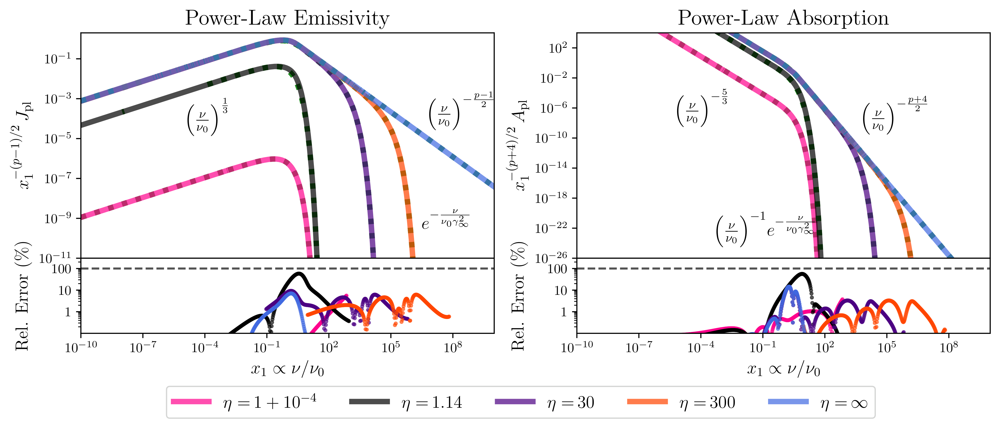<br />
图注：Non-dimensional forms of the power-law emissivity $j_\nu \propto x_1^{-(p-1)/2} J_{\rm pl}(x_1)$ (Equation~\ref{eq:J_pl}) and absorption coefficient $\alpha_\nu \propto x_1^{-(p+4)/2} A_{\rm pl}(x_1)$ (Equation~\ref{eq:A_pl}) compared to our fitting functions (squares and colored lines, respectively). The emissivity and absorption coefficients are shown as a function of frequency $\nu\propto x_1 \equiv x(\gamma_1)$ (Equation~\ref{eq:x}) and for different values of $\eta \equiv \gamma_\infty/\gamma_1$, the ratio between the minimum and maximum electron Lorentz factors of the cooled distribution (Equation~\ref{eq:eta}). Approximate frequency scalings in each regime are shown in the top two panels. The bottom panels show the absolute value of the relative error between the fitting functions and the numerical calculations. The relative errors are maximized around $x_1 \sim 1$, where the low- and high-frequency parts of the fitting function cross over. The errors are highest ($58.2\%$ and $56.4\%$) for $\eta=1.14$; this value of $\eta$ was chosen to maximize the error of the fitting functions. For $\eta= 1 + 10^{-4}$, the maximum errors (occurring at high frequencies, where the overall coefficients are exponentially suppressed) are $5.6\%$ and $3.8\%$. For other values of $\eta$, the maximum errors are $9.3\%$ for $J_{\rm pl}$ and $14.7\%$ for $A_{\rm pl}$. Typical relative errors are at the percent level in each case.<br />
对应解读：建议重点查看的图表第2、3、4项；关键图表逐图导读中关于幂律注入的发射系数、吸收系数与残差诊断。<br />
入选理由：这张图同时给出冷却幂律电子的无量纲发射系数 \(J_pl\) 和吸收系数 \(A_pl\)、不同冷却强度 eta 下的频率谱形、渐近标度以及拟合函数相对数值积分的残差，是检验本文核心解析拟合公式是否可靠的最关键图。它直接覆盖日报强调的谱峰平滑过渡、高频冷却尾部、自吸收相关频段和残差峰值位置。<br />
来源与置信度：\(arxiv_source\)；high；\(arxiv_source\) / aapaper.tex:figure[2]</p>
<p><strong>Fig05</strong><br />
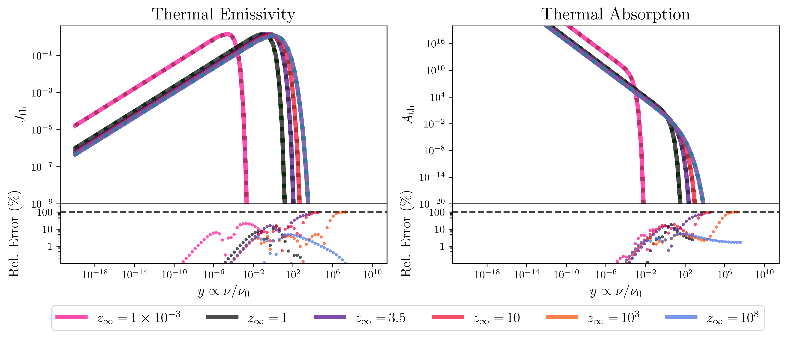<br />
图注：Cooled thermal emission and absorption coefficients (Equations~\ref{eq:Jth},\ref{eq:Ath}) for different values of $\etath$ and as a function of $y\propto\nu/\nu_0$. In the top panel, the values of the radiation coefficients are calculated in two ways, corresponding to the exact numerical calculation (squares) and approximate fitting functions (solid lines). The bottom panel shows the relative error between the two calculations. Because the fitting functions use an approximate form for the saddle point $z_s$ (Equation~\ref{eq:zs_fit}), the error climbs at large frequencies when the coefficients are exponentially suppressed. Because the coefficients are strongly suppressed at these frequencies, this error is inconsequential. At $y\sim y_{\rm t}$ (Equation~\ref{eq:y_t}), near the turnover between low- and high-frequency behavior, the relative error is always maximum at the $10$--$20\%$ level, with typical values $\sim1\%$.<br />
对应解读：建议重点查看的图表第2、3、4项；关键图表逐图导读中关于热电子注入、热峰、冷却尾部和吸收谱变化的段落。<br />
入选理由：这张图展示冷却热电子的发射与吸收系数随无量纲频率 y 的变化，并将精确数值计算与解析拟合函数直接比较，底部还给出相对误差。它是理解热分布冷却后谱形、转折区误差和指数抑制高频端误差的主要证据，补足了 Fig02 只覆盖幂律电子的局限。<br />
来源与置信度：\(arxiv_source\)；high；\(arxiv_source\) / aapaper.tex:figure[5]</p>
<p><strong>Fig01</strong><br />
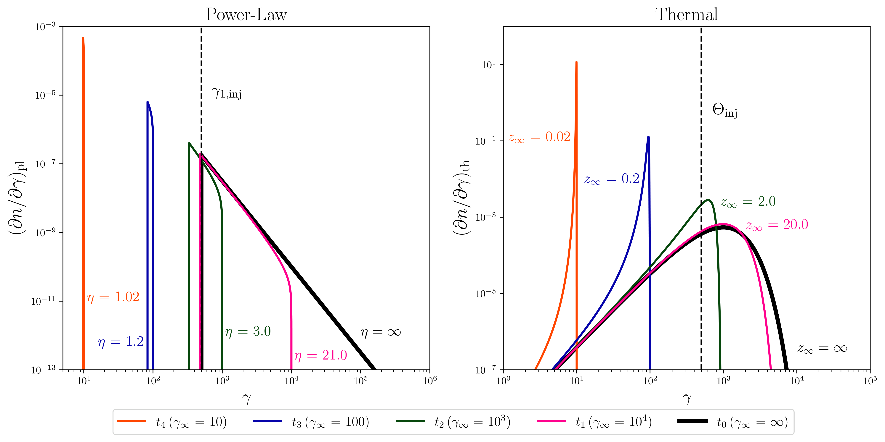<br />
图注：Cooled power-law (left) and thermal (right) electron distribution functions (Equations~\ref{eq:pl_dist_cooled},\ref{eq:therm_dist_cooled}). The blue curves show the initial distributions, which extend to Lorentz factors of $\infty$. As time increases, $\gamma_\infty$ falls (Equation~\ref{eq:gamma_inf}), changing both the form of the distribution and the location of the high-frequency cutoff. The dashed black lines show the injected values of the minimal power-law Lorentz factor $\gamma_{1, \rm inj}$ and temperature $\Theta_{\rm inj}$, respectively. As time increases, both distributions become strongly peaked, resembling a Dirac delta function in energy. For each curve, the values of the parameters $\eta = \gamma_\infty/\gamma_1$ and $\etath = \gamma_\infty \mathscr{G}/\Theta_{\rm inj}$, discussed in detail in later sections, are labeled for convenience. Note that adiabatic cooling is ignored ($\mathscr{G}=1$) and the pre-factors in each distribution (which in general depend on time and the assumed hydrodynamics) are set to 1.<br />
对应解读：建议重点查看的图表第1项；关键图表逐图导读中的粒子分布导读图。<br />
入选理由：这张图直接展示冷却后的幂律和热电子分布函数，横向比较初始分布与不同冷却时间下 \(gamma_infty\) 下降后的形状变化。它能支撑日报中关于高能截断、低能堆积、分布变尖以及热分布尾部变形的解读，是理解后续发射和吸收系数变化的物理基础。<br />
来源与置信度：\(arxiv_source\)；high；\(arxiv_source\) / aapaper.tex:figure[1]</p>
<p><strong>Fig04</strong><br />
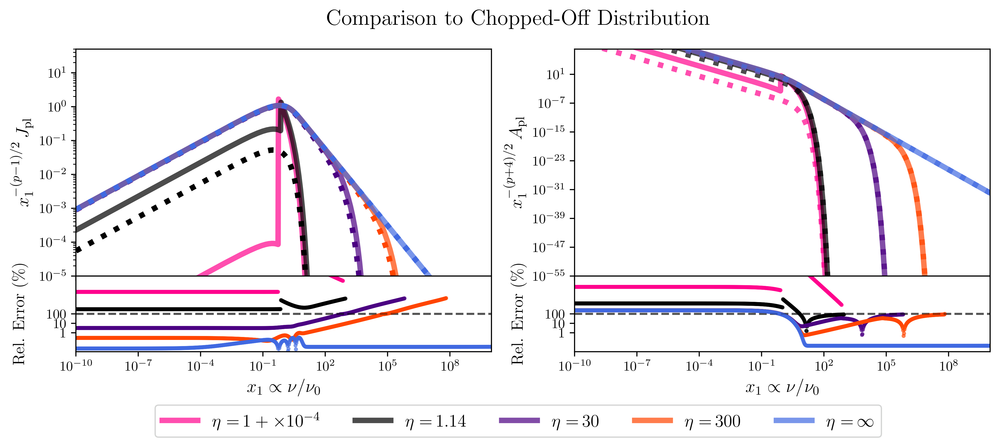<br />
图注：Power-law emission and absorption coefficients for perpendicular pitch-angles calculated numerically (squares; Equations~\(\ref{eq:J_pl},\) \(\ref{eq:A_pl}\) with the substitution $\tilde{F} \to F$ and $\tilde{H} \to H$ following Appendix~\ref{appendix:synchrotron_function}) compared to the result of using a chopped-off distribution; that is, a power-law abruptly truncated at Lorentz factor $\gamma_2$ as opposed to the smoothly cut off distribution found by solving the electron cooling ODE (Equation~\ref{eq:pl_dist_cooled}). The chopped-off radiation coefficients are calculated using the analytic fitting functions of FO14 (solid lines; their Equations~3,24,45). For large values of $\eta = \gamma_\infty/\gamma_1$, the chopped-off distribution is a good approximation for the radiation coefficients at low frequencies. At high frequencies where cooling is significant ($x_2\gtrsim 1$), the predictions of the chopped-off distribution do not accurately match calculations that use exact forms for the cooled electron distribution functions (note, however, that the discrepancies are largest on the exponential tail where emission/absorption are suppressed). As $\eta$ becomes smaller, the discrepancy becomes greater at lower frequencies, and for $\eta\to 1$ the relative error becomes increasingly large.<br />
对应解读：建议重点查看的图表第6项；关键图表逐图导读中关于与传统未冷却或简单截断处方比较的段落。<br />
入选理由：这张图比较了由精确冷却分布得到的幂律发射、吸收系数与简单 chopped-off 截断分布近似的结果，直接说明传统突然截断处方在高频冷却区以及 eta 接近 1 时会产生系统偏差。它比单纯展示拟合残差更能体现本文新公式相对于旧近似的科学必要性。<br />
来源与置信度：\(arxiv_source\)；high；\(arxiv_source\) / aapaper.tex:figure[4]</p>
<p><strong>Fig03</strong><br />
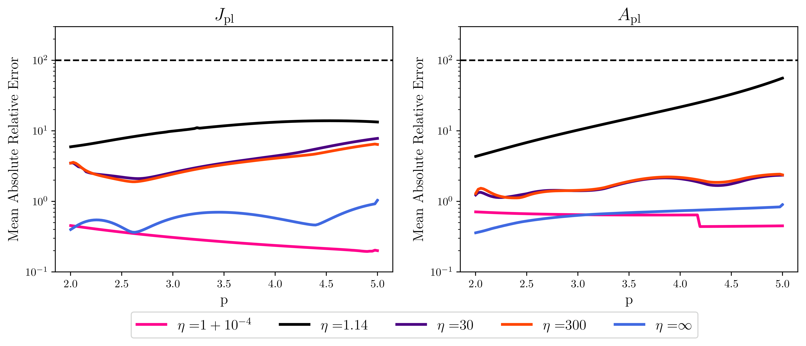<br />
图注：The mean absolute relative error in the fitting functions for $J_{\rm pl}(p,x_1,\eta)$ and $A_{\rm pl}(p,x_1,\eta)$ as a function of $p$ (within the range $2<p\leq5$ explored in this work) for five different values of $\eta$. To evaluate each curve on the same footing, the percent error is calculated using the formula $\frac{100}{n} \sum_i^n\,|1-f^i_{\rm pl, fitted}/f^i_{\rm pl, numerical}|$, where $n \leq 1000$ is the number of $x_1$ values between $10^{-10}$ and $10^{10}$ for which each function does not evaluate to zero. The fitting functions are best for $p\lesssim3.5$, which is the regime of greater relevance to typical astrophysical settings. The maximum errors in each panel are $13.9\%$ and $55.9\%$, respectively. In both cases, these values occur at $\eta=1.14$. The maximum error for other values of $\eta$ is at or below the percent level, indicating that on average, the fitting functions behave sufficiently well to act as a substitute for the full numerical integration.<br />
对应解读：建议重点查看的图表第5项；模型拟合段落中关于参数空间内解析拟合误差稳定性的讨论。<br />
入选理由：这张图给出幂律拟合函数 \(J_pl\) 和 \(A_pl\) 在不同电子谱指数 p 与不同 eta 下的平均绝对相对误差，直接对应日报要求检查的参数空间误差汇总。它能帮助读者判断公式在常见天体物理 p 范围内是否稳定，以及 eta=1.14 等边界情形为何需要谨慎。<br />
来源与置信度：\(arxiv_source\)；high；\(arxiv_source\) / aapaper.tex:figure[3]</p>
<p><strong>Fig06</strong><br />
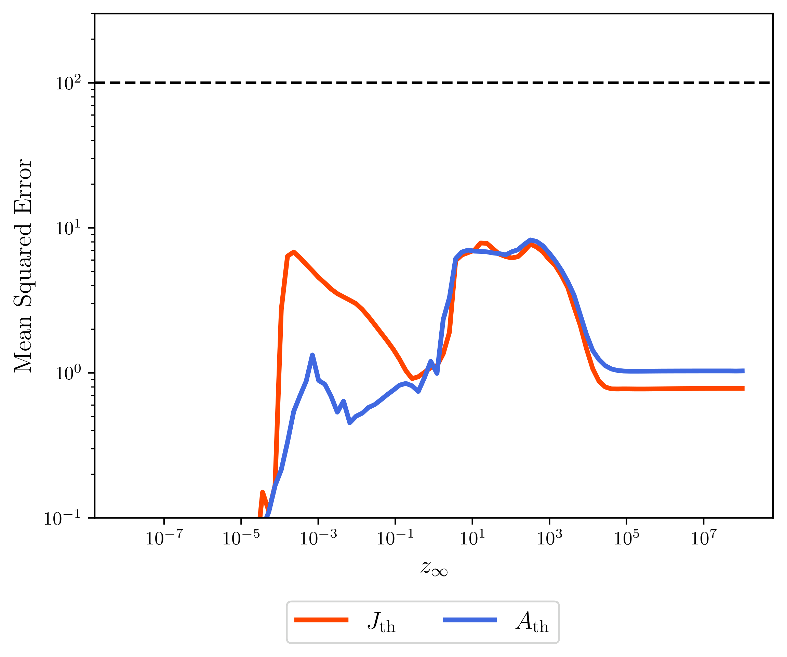<br />
图注：Mean relative error between exact numerical forms approximate fitting functions for the thermal radiation coefficients $J_th(y, \etath)$ and $A_th(y, \etath)$. For each $\etath\in(10^{-8},10^{8})$, the percent mean relative error is calculated as $\frac{100}{n} \sum_i^n\,|1-f^i_{\rm pl, fitted}/f^i_{\rm pl, numerical}|$, where $n \leq 400$ is the number of $y$ values between $10^{-20}$ and $10^{8}$. The maximum errors for each curve are $7.9\%$ ($J_{\rm th}$) and $8.3\%$ ($A_{\rm th}$). The mean relative error peaks around $\etath\sim1-10^3$, below and above which the error remains at the percent level or below.<br />
对应解读：建议重点查看的图表第5项；模型拟合段落中关于热电子拟合函数在冷却参数空间内误差表现的讨论。<br />
入选理由：这张图是热电子辐射系数 \(J_th\) 和 \(A_th\) 的参数空间平均相对误差汇总，覆盖 etath 从极小到极大的范围。它与 Fig03 互补，说明热分布解析公式在大部分冷却参数下维持百分级误差，并指出 etath 约 1 到 10^3 附近误差峰值，是实际嵌入观测模型时判断适用范围的重要依据。<br />
来源与置信度：\(arxiv_source\)；high；\(arxiv_source\) / aapaper.tex:figure[6]</p>
<h4 id="_78">强相关工作</h4>
<p>这篇工作应放在同步辐射基础理论、GRB 余辉标准模型和现代数值余辉拟合之间理解。基础理论来自同步辐射发射与吸收的经典推导；余辉标准模型把电子幂律分布、冷却频率和自吸收频率转化为可观测分段谱；后续大量工作则处理等到达时面、喷流结构、外部密度剖面和数值辐射转移。检索关键词可用 “synchrotron self absorption cooled electron distribution”、“GRB afterglow synchrotron spectrum”、“local synchrotron emissivity absorption coefficient”、“thermal synchrotron cooled electrons”。</p>
<p>与相似工作相比，本文的定位不是重新建立 GRB 余辉动力学，也不是拟合某一个 LFBOT 或 TDE，而是改进所有这些源模型共享的辐射系数。相反观点或潜在张力主要来自两类简化：一类认为传统分段幂律已经足够，另一类在数值辐射转移中直接积分粒子分布而不需要解析拟合。本文的优势在于速度和可解释性，但其公式是否值得替换旧处方，取决于具体数据精度、频段覆盖和模型系统误差预算。</p>
<p><strong>同一事件 / 同类源线索</strong>：</p>
<ul>
<li><a href="https://arxiv.org/abs/2607.13130">https://arxiv.org/abs/2607.13130</a></li>
<li><a href="https://arxiv.org/abs/astro-ph/0302219">https://arxiv.org/abs/astro-ph/0302219</a></li>
</ul>
<p><strong>相似工作</strong>：</p>
<ul>
<li><a href="https://arxiv.org/abs/astro-ph/9709273">https://arxiv.org/abs/astro-ph/9709273</a></li>
<li><a href="https://arxiv.org/abs/astro-ph/9903399">https://arxiv.org/abs/astro-ph/9903399</a></li>
<li><a href="https://arxiv.org/abs/astro-ph/0102282">https://arxiv.org/abs/astro-ph/0102282</a></li>
</ul>
<p><strong>基础理论 / 方法工作</strong>：</p>
<ul>
<li><a href="https://ui.adsabs.harvard.edu/abs/1979rpa..book.....R/abstract">https://ui.adsabs.harvard.edu/abs/1979rpa..book.....R/abstract</a></li>
<li><a href="https://ui.adsabs.harvard.edu/abs/1986rpa..book.....P/abstract">https://ui.adsabs.harvard.edu/abs/1986rpa..book.....P/abstract</a></li>
</ul>
<p><strong>相反观点 / 张力线索</strong>：</p>
<p>（未提供）</p>
</details>
<h2 id="_79">说明</h2>
<p>评分由 LLM 给出初评，再由本地阈值策略过滤；IACT、TeV 伽马射线和高能中微子天文学按重点方向处理。</p>
    </main>
  </div>
</body>
</html>
